生成时间：2026-07-01T12:04:28+08:00
今日保留论文数：11
内容构成：今日新文 11 篇；补充推荐 0 篇；经典旧文精读 0 篇
数据源警告
- 本次有 1 个数据源访问异常；完整错误已保留在运行日志中，日报只显示摘要。
- arXiv API：1 个分类访问异常，候选池可能不完整；程序会基于已成功获取的数据继续兜底。
- 主要错误类型：超时 1 次。
高能天体物理重点
1. A New Relativistic Model for Spectral Formation in Accretion-Powered X-ray Pulsars: Pulse Profiles and Phase-Averaged Spectra
- 来源：arXiv / astro-ph.HE
- 链接：https://arxiv.org/abs/2606.30990v1
- 作者：Ethan J. Gibson, Peter A. Becker
- 评分：novelty 8/10，importance 8/10，relevance 8/10，final 9.00/10
- 推荐理由：建立可同时拟合相位平均谱和脉冲轮廓的相对论X射线脉冲星模型，并应用于NuSTAR/Her X-1；对吸积柱辐射转移和中子星X射线观测解释具有较高方法价值。
中文题目：吸积供能 X 射线脉冲星谱形成的新相对论模型：脉冲轮廓与相位平均能谱
做了什么：这篇文章建立了一个面向吸积供能 X 射线脉冲星的半解析模型，把柱状吸积流中的连续谱形成、双磁极几何、广义相对论光线弯曲和自转调制放在同一个框架里计算。作者用 Becker 与 Wolff 的锥形吸积柱谱模型给出相位平均连续谱，再用 Schwarzschild 度规追踪两根吸积柱发出的辐射到达远处观测者的路径，并用一组“激光状”离散出射方向及其权重来重建柱面发射的角分布。该模型被用于拟合 NuSTAR 对 Her X-1 的观测，同时约束柱内温度、吸积率、磁场强度、自转倾角、两个磁极纬度以及经验性的束射图样。核心价值在于：它不是先拟合能谱、再用任意函数拟合脉冲轮廓，而是尝试让能谱形成和相位调制共享同一套几何与辐射结构。
为什么重要：吸积 X 射线脉冲星的连续谱和脉冲轮廓长期被分开处理：能谱模型告诉我们柱内 Compton 化和磁场环境，脉冲轮廓模型告诉我们几何和束射，但两者常常互不约束。本文的重要性在于提供一个可实际拟合数据的桥梁：相位平均能谱、双柱几何、光线弯曲和束射方向权重共同决定观测结果。对于 Her X-1 这样的经典源，这种框架有机会把“看起来能拟合”的经验谱参数转化为更接近物理图像的吸积柱参数和磁极几何。
理论 / 观测 / 仪器方法价值：对理论而言，文章把辐射输运解析谱模型嵌入到相对论几何脉冲计算中，给出了从柱内动力学到观测脉冲的可计算链条。对观测而言，它为 NuSTAR 这类宽能段、高信噪比数据提供了同时使用能谱和相位信息的拟合方式。对方法而言，离散出射方向的“子轮廓”可视为一组基函数，束射图样通过权重反演得到，既保留了物理几何，又避免强行假设单一 pencil beam 或 fan beam。
为什么应该关注：如果你关心中子星强磁场吸积、X 射线脉冲星质量吸积率估计、磁极几何、或连续谱模型的物理可解释性，这篇文章值得看。它提出的问题很实际：同一组物理参数能不能同时解释 NuSTAR 看到的相位平均能谱和复杂脉冲轮廓？这关系到我们从脉冲星数据中反推出 \(B\)、\(\dot{M}\)、柱温度和几何倾角时，究竟是在测量物理量，还是只是在调节经验函数。
展开详细解读：文章讲解、背景、理论、重点章节、图表与相关工作
文章详细讲解
科学问题：吸积供能 X 射线脉冲星的观测量主要有两类，一类是相位平均或相位分辨的 X 射线能谱，另一类是随自转相位变化的脉冲轮廓。前者由磁化等离子体中的辐射输运、热 Compton 化、体 Compton 化、回旋吸收和柱内动力学决定；后者由磁极位置、观测倾角、柱面束射、遮挡以及广义相对论光线弯曲决定。过去很多工作把这两类信息分开处理：能谱用经验 cutoff power law 或物理 Compton 化模型，脉冲轮廓用几何 beam pattern 或 Fourier 模板。本文要解决的核心问题是，能否在一个相对自洽的模型里同时计算相位平均能谱和脉冲轮廓，并从同一批数据中反推吸积柱的物理状态与几何结构。
作者怎么做：文章采用 Becker 与 Wolff 发展出的锥形吸积柱解析连续谱模型来计算从柱中逃逸的相位平均辐射。该模型把吸积柱中的种子光子、电子温度、吸积率、磁场强度和柱几何联系起来，用解析形式描述谱形成。然后，作者把两根吸积柱放到中子星表面的磁极位置上，考虑自转轴、观测视线和两个磁极纬度之间的三维几何。辐射从柱面不同方向逃逸后，在 Schwarzschild 时空中传播到远处观测者；这一步引入了光线弯曲，使得远侧磁极和柱面部分区域也可能在某些相位可见。
关键结果：模型的一个重要技术设计是把柱面出射角分布离散成一组“激光状”发射方向。每个方向对应一个子脉冲轮廓，即在给定几何和相对论传播条件下，该方向的辐射随自转相位变化的贡献。观测脉冲轮廓可表示为这些子轮廓的线性组合，而组合系数就是束射图样的权重。这样，作者既不必预先指定简单的 pencil beam 或 fan beam，也能把束射形态限制在由柱几何和光线弯曲允许的空间内。对 Her X-1 的 NuSTAR 数据应用显示，模型可以同时给出相位平均能谱拟合、脉冲轮廓拟合，以及温度、吸积率、磁场强度、自转倾角和磁极纬度等参数估计。
局限和下一步：这仍然是一个半解析、半经验的模型。束射图样通过离散方向权重反演，虽然比固定 beam pattern 灵活，但还不是从完整多维辐射磁流体或蒙特卡洛辐射输运直接预测出来的。Schwarzschild 度规忽略了中子星自转导致的 frame dragging 和表面速度场的特殊相对论效应；对于 Her X-1 这类自转不极端快的源这可能是合理近似，但未来若用于毫秒级或更高精度相位分辨数据，需要重新评估。下一步最自然的是扩展到能量依赖脉冲轮廓、相位分辨能谱、回旋线随相位变化，以及用多个源检验束射权重是否具有可解释的系统趋势。
关键结果是怎么做出来的
数据与样本选择方面，本文聚焦于一个经典、明亮且数据质量高的吸积 X 射线脉冲星 Her X-1，并使用 NuSTAR 宽能段硬 X 射线观测。Her X-1 的优势是脉冲周期稳定、能谱中存在强磁场吸积源典型特征，并且历史观测非常丰富；劣势是其超轨道调制、盘遮挡和相位依赖吸收会使几何解释变复杂。因此，读者应特别关注作者如何筛选 NuSTAR 观测区间、如何构建相位平均谱、如何折叠脉冲轮廓，以及是否避开了明显受遮挡或低通量态影响的时间段。
证据链的第一环是相位平均能谱拟合。作者不是从任意经验连续谱开始，而是用锥形吸积柱的解析谱形成模型计算连续谱，并从拟合中得到电子温度、吸积率和磁场强度等物理参数。这里最关键的诊断不是单个最佳拟合值，而是数据与模型在 NuSTAR 能段内的残差结构：如果残差在 cutoff、回旋特征附近或高能端呈系统性偏离，那么后续脉冲轮廓拟合即使形式上成功，也可能是在补偿错误的谱模型。
证据链的第二环是脉冲轮廓分解。给定中子星半径、质量、观测倾角、两个磁极位置和柱几何后，作者对每个离散出射方向计算一个子轮廓。观测轮廓通过这些子轮廓的线性组合来拟合，权重系数描述束射图样。统计上，这相当于一个带物理几何核的线性反演问题：子轮廓之间若高度相关，权重就会退化；如果相位覆盖和信噪比足够好，主峰、次峰和谷底位置会对磁极纬度与倾角产生较强约束。
显著性或置信度的核心应从模型比较和残差改善来判断。本文摘要没有给出具体事件数或 \(\Delta \chi^2\) 数字，但读者在正文中应寻找：相位平均谱的拟合统计量、脉冲轮廓的 \(\chi^2\) 或似然值、自由参数数目、权重系数是否有非负约束、以及几何参数置信区间如何计算。尤其要看作者是否比较了单柱与双柱、无光线弯曲与有光线弯曲、固定 beam 与自由权重 beam 的结果，因为这些比较直接决定“新模型”是否真的优于传统近似。
支持结论的图表应包括至少三类：能谱及残差图、观测与模型脉冲轮廓对比图、束射权重或角分布图。若图中模型能同时复现 Her X-1 脉冲轮廓的主峰相位、峰宽、峰间谷值和非对称性，并且能谱残差没有引入新的系统偏差，那么“同一几何与辐射模型同时解释两类观测”的主张才站得住。反过来，如果轮廓拟合依赖少数极大权重或出现非物理尖锐束射，则说明基函数反演可能过拟合。
主要系统误差包括 NuSTAR 响应矩阵和背景处理、高能端计数统计、脉冲相位零点、轨道修正、源的超轨道状态、柱半径或锥角假设、中子星质量半径假设、以及 Schwarzschild 光线弯曲近似。稳健性检验应检查这些假设改变后，\(B\)、\(\dot{M}\)、\(T_{\rm e}\)、倾角和磁极纬度是否仍在相近范围内。如果只有束射权重变化而全局物理参数稳定，模型可信度较高；如果小的几何先验改变导致磁场或吸积率大幅漂移，就说明相位平均谱与脉冲轮廓之间仍存在强退化。
展开背景、理论、公式、模型、章节和图表导读
背景知识
吸积供能 X 射线脉冲星通常是强磁场中子星从伴星吸积物质形成的系统。物质在磁层半径附近被磁场俘获，沿磁力线流向磁极，在中子星表面附近形成热斑或辐射主导的吸积柱。由于磁极一般不与自转轴重合，柱面辐射随自转扫过观测者视线，产生 X 射线脉冲。Her X-1 是这一类源的经典代表，具有强脉冲、食双星几何、超轨道调制和回旋线等多重可诊断特征。
历史上，X 射线脉冲星连续谱常用经验模型拟合，例如幂律加高能截止、NPEX、Fermi-Dirac cutoff 等。这些模型在测量通量和寻找谱线时很实用，但其参数与真实柱内物理量之间的关系并不唯一。另一方面，物理谱模型试图从 Compton 化、种子光子产生和辐射逃逸推导连续谱，但若只拟合相位平均谱，就会丢失几何信息，也很难判断不同束射形态对谱参数的影响。
脉冲轮廓建模有自己的传统。简单图像把辐射分成沿磁场方向较强的 pencil beam 和横向从柱壁逃逸的 fan beam。实际观测往往更复杂：主峰和次峰相位不一定相隔半个周期，峰宽随能量变化，某些相位存在吸收或遮挡，广义相对论光线弯曲还会让原本在背面的区域可见。因此，仅用简单 beam 函数解释脉冲轮廓容易把几何、束射和吸收混在一起。
这个问题现在值得重新看，是因为 NuSTAR 等望远镜提供了高质量硬 X 射线能谱和相位信息，使物理模型不再只是在低信噪比数据上做概念验证。同时，强磁场吸积柱理论、解析辐射输运和数值辐射磁流体模拟都在发展，需要有能与观测直接对接的中间层模型。本文正处在这个位置：比经验拟合更物理，比完整三维模拟更容易嵌入数据拟合。
该领域常见误区有三点。第一，把拟合得到的 cutoff 能量直接等同于电子温度或磁场强度，忽略了辐射输运退化。第二，把脉冲轮廓峰的数目直接等同于可见磁极数，忽略光线弯曲和束射角分布。第三，把相位平均谱看作与几何无关；实际上，相位平均只是对旋转相位积分，若不同方向的谱形或逃逸概率不同，几何仍会影响平均结果。
基础理论 / 方法脉络
基础物理图像从磁控吸积开始。中子星表面磁场通常达到 \(10^{12}\,{\rm G}\) 量级，电子回旋能量位于硬 X 射线波段。吸积物质沿磁场线接近自由落体，在磁极附近被辐射压、库仑作用或碰撞less shock 减速，动能转化为热能和辐射。柱内光子主要通过热 Compton 化和体 Compton 化增能，随后从柱顶或柱壁逃逸，形成观测到的连续谱。
本文使用的谱形成思想是：吸积柱不是一个任意黑箱，而是有指定几何和流速结构的辐射输运区域。锥形吸积柱决定横向面积随高度变化，进而影响密度、光学深度、逃逸时间和 Compton 化效率。关键量包括吸积率 \(\dot{M}\)、电子温度 \(T_{\rm e}\)、磁场强度 \(B\)、柱半径或开角、速度剖面 \(v(z)\)、以及光子逃逸概率。这些量共同决定相位平均的能量通量谱。
脉冲形成需要把局部发射转换到远处观测者。若忽略相对论，中子星自转几何只要求计算观测视线与磁极方向的夹角。但中子星紧致度 \(GM/(Rc^2)\) 不小，Schwarzschild 光线弯曲会改变可见区域、放大发射面积，并移动峰值相位。本文把从两根吸积柱表面逃逸的光线在 Schwarzschild 度规中传播到无穷远，因而几何参数与脉冲形态之间的关系不再是简单的正弦投影。
束射图样是最容易退化的部分。真实柱面辐射角分布取决于磁化散射截面、速度场、柱壁光学深度和能量。本文没有强制使用单一解析 beam，而是用一组离散方向作为基函数；每个方向在给定几何下产生一个子轮廓，观测轮廓由权重线性组合得到。这种方法的优点是灵活且可拟合，风险是权重可能吸收模型其他部分的错误，例如错误的磁极位置、吸收变化或能谱归一化漂移。
常见退化包括：自转倾角与磁极共纬度之间的交换退化、两根柱亮度比与远侧柱可见性的退化、束射宽度与光线弯曲强度的退化、\(\dot{M}\) 与柱截面积在密度估计上的退化，以及 \(T_{\rm e}\) 与 Compton 化光学深度在连续谱斜率上的退化。系统误差则来自 NuSTAR 能量响应、背景、高能端统计、脉冲相位对齐、轨道修正和 Her X-1 的盘遮挡状态。
公式与推导
第一步是把吸积功率与可观测光度联系起来。在稳态吸积近似下，落到中子星半径 \(R\) 附近的引力能释放率可写为
其中 \(M\) 是中子星质量，\(\dot{M}\) 是质量吸积率，\(\eta\) 是进入 X 射线辐射的效率因子。该式给出从观测通量反推 \(\dot{M}\) 的零阶标尺，但实际拟合中 \(\eta\)、各向异性束射和距离都会引入系统误差。
第二步是柱内连续性方程。若吸积柱截面积为 \(A(z)\)，高度坐标为 \(z\)，流速为 \(v(z)\)，质量密度为 \(\rho(z)\)，稳态质量守恒给出
在锥形柱中，\(A(z)\) 随高度变化，这会改变电子数密度 \(n_{\}\)
m e}(z)=\
ho(z)/m_{\
m p}) 和散射光学深度。这里 (m_{\
m p}) 是质子质量；若成分不是纯氢，需要用平均分子量修正。
第三步是估计横向逃逸和 Compton 化的重要性。沿某一方向的 Thomson 光学深度可写为
其中 \(\sigma_{\perp}\) 是相对于磁场方向的有效散射截面，\(dl\) 是穿过柱的路径元。在强磁场中散射截面具有角度和能量依赖，本文的解析谱模型相当于把这些复杂性压缩进有效输运参数。
第四步是热 Compton 化的能量交换尺度。非相对论热电子的 Compton 参数可近似写为
其中 \(T_{\}\)
m e}) 是电子温度，(m_{\
m e}) 是电子质量，\(\tau\) 是相关逃逸方向上的光学深度。当 (y_{\
m th}) 增大时，谱会变硬并向高能延伸；这也是 (T_{\
m e}) 与 \(\tau\) 之间产生退化的原因。
第五步是把局部辐射转化为远处观测到的谱通量。若柱面局部比强度为 \(I_E^{\}\)
m em}(\mu_{\
m em}))，引力红移因子为 (g=E_{\
m obs}/E_{\
m em})，Liouville 定理给出
这里 \(E_{\}\)
m obs}) 和 (E_{\
m em}) 分别是观测者和发射局域系中的光子能量，(\mu_{\
m em}) 是出射方向余弦。该关系说明光线弯曲不只改变可见性，也通过红移改变能谱归一化和能量刻度。
第六步是 Schwarzschild 光线弯曲的几何核。对于紧致度 \(u=2GM/(Rc^2)\)，常用近似把发射角 \(\alpha\) 与远处观测方向相对表面法线夹角 \(\psi\) 联系为
这里 \(\alpha\) 是局部发射角，\(\psi\) 由自转相位、观测倾角和磁极位置决定。虽然精确计算需积分 null geodesic，近似式清楚展示了紧致度越大，可见背面区域越多。
第七步是自转几何。若观测者与自转轴夹角为 \(i\)，某磁极与自转轴夹角为 \(\theta_{\rm m}\)，自转相位为 \(\phi\)，则视线与磁极方向夹角满足
其中 \(\phi_0\) 是该磁极的相位零点。两根柱分别有自己的 \(\theta_{\}\)
m m}) 和 \(\phi_0\)，非反平行或偏心偶极会使两个峰不严格相隔半个周期。
第八步是本文脉冲轮廓基函数的线性组合。若第 \(j\) 个离散出射方向在相位 \(\phi_k\) 产生子轮廓 \(P_j(\phi_k)\)，观测轮廓模型可写为
其中 \(w_j\) 是束射权重，\(N_{\}\)
m beam}) 是离散方向数，\(C\) 可表示背景或非脉冲成分。权重 \(w_j\) 的分布就是反演得到的柱面束射图样。
第九步是拟合诊断。对相位轮廓或能谱分箱数据，若误差近似高斯，可用
其中 \(D_k\) 是数据，\(M_k\) 是参数集合 \(\boldsymbol{\Theta}\) 下的模型，\(\sigma_k\) 是误差。对于低计数能道则应使用 Poisson 似然或 \(C\)-stat。该统计量用于判断能谱残差和脉冲残差是否同时可接受。
第十步是联合约束的后验形式。若把能谱数据记为 \(D_{\}\)
m spec})，脉冲轮廓记为 (D_{\
m pulse})，联合后验可形式化写成
其中 \(\mathbf{w}\) 是所有束射权重，\(\pi\) 表示先验。本文方法的本质就是让谱参数 \(\boldsymbol{\Theta}\) 与几何参数在两个似然中共同出现，从而减少单独拟合时的任意性。
模型拟合 / 应用方法
本文的拟合可理解为两层模型。第一层是相位平均能谱层，拟合量包括电子温度 \(T_{\rm e}\)、吸积率 \(\dot{M}\)、磁场强度 \(B\)、柱几何参数和归一化等。该层主要由 NuSTAR 能谱的连续谱形状和高能截止约束；若模型包含或屏蔽回旋吸收特征，还需同时处理回旋线中心能量、宽度和深度对连续谱的影响。实际阅读时应看作者是否固定了中子星质量 \(M\)、半径 \(R\) 和距离，因为这些固定值会直接影响 \(\dot{M}\) 和光度标定。
第二层是脉冲轮廓层，拟合量包括观测倾角 \(i\)、两个磁极纬度或共纬度、相位偏移、两柱相对亮度，以及离散出射方向的权重 \(w_j\)。在给定几何参数后，子轮廓 \(P_j(\phi)\) 可预先计算，因此权重求解接近线性问题；但几何参数变化会改变所有基函数，所以完整问题仍是非线性的。若权重被允许任意正负，模型可能产生非物理抵消；更合理的选择通常是非负权重或带平滑先验的权重分布。
似然方面，高计数脉冲轮廓可用 \(\chi^2\) 统计，能谱拟合则取决于每个能道的计数数。如果能道计数充足，高斯近似可接受；若高能端计数较低，应使用 Poisson 统计。联合拟合时需要注意两个数据集权重：能谱分箱数可能远多于脉冲相位箱，若简单相加 \(\chi^2\)，某一部分数据可能主导全部参数。理想情况下，应报告分项拟合统计量，让读者知道模型是否同时拟合好谱和轮廓，而不是牺牲其中一个。
参数退化是解释结果时的重点。\(T_{\rm e}\) 与光学深度都会改变连续谱斜率；\(\dot{M}\) 与柱面积共同决定密度；\(B\) 既影响回旋能量也影响散射截面；\(i\) 与磁极共纬度在脉冲调制幅度上可互换；束射权重可以部分补偿错误的几何。因而，单个最佳拟合值不应被过度解读，必须看置信区间、协方差图或 MCMC corner plot。
残差诊断应分开看。能谱残差若在低能端呈结构，可能说明吸收、交叉定标或软成分未处理好；若在回旋线附近呈结构，可能说明连续谱与线形耦合不当；若在高能端系统偏离，则可能是 Compton 化模型或背景处理问题。脉冲残差若集中在峰顶，可能表示束射角分布过窄或相位对齐问题；若集中在谷底，可能表示远侧柱可见性、盘遮挡或非脉冲成分处理不充分。
模型可能失败的场景也很清楚：若源在观测期间有强烈非稳态吸积，稳态柱模型会失效；若盘边缘遮挡随相位改变，简单双柱几何无法完全解释轮廓；若能量依赖脉冲轮廓很强而模型只拟合宽能段轮廓，得到的束射权重可能只是能量平均的有效量。实际应用上，这个框架最适合明亮、脉冲稳定、宽能段覆盖好、吸收状态可控的强磁场 X 射线脉冲星。
重点章节 / 结果段落怎么读
第一，数据与目标源部分应先读。读者需要确认使用的是 Her X-1 的哪一段 NuSTAR 观测、处在什么超轨道状态、曝光和能段如何选择、是否做了双星轨道修正和 barycentric correction。这些处理会直接影响折叠脉冲轮廓和相位平均谱。
第二，连续谱形成模型部分是物理基础。重点看作者如何引入 Becker 与 Wolff 的锥形吸积柱模型，哪些参数自由拟合，哪些参数固定，种子光子和 Compton 化过程如何处理，以及磁场强度 \(B\) 在连续谱和回旋相关物理中扮演什么角色。这里决定了“物理参数”是否真的由数据约束。
第三，相对论光线传播与几何部分是本文新增框架的核心。应关注坐标系定义、自转轴与视线夹角 \(i\)、两个磁极纬度、柱高度或柱面位置、Schwarzschild 光线弯曲计算，以及是否考虑遮挡、红移和投影因子。任何角度定义不清都会导致后续结果难以复现。
第四，束射基函数和脉冲轮廓拟合部分最值得细读。看离散出射方向如何选取、子轮廓如何归一化、权重是否受非负或平滑约束、拟合统计量如何定义、自由度如何计算。该部分决定反演得到的 beam pattern 是物理信息还是过拟合模板。
第五，Her X-1 应用与讨论部分要结合表格和残差图阅读。重点看 \(T_{\rm e}\)、\(\dot{M}\)、\(B\)、\(i\) 和磁极纬度的误差范围，是否与历史估计一致；还要看作者如何解释束射图样，是支持 fan beam、pencil beam，还是更复杂的混合结构。
第六，若有附录或稳健性检验，应优先检查。尤其是不同离散束射方向数、不同中子星质量半径、不同相位箱数、不同能段选择对结果的影响。这些检验决定模型能否推广到其他脉冲星。
建议重点查看的图表
-
相位平均 NuSTAR 能谱及残差：看数据点、总模型、各物理成分或吸收成分，以及高能截止和回旋附近是否有系统残差。
-
观测脉冲轮廓与最佳拟合轮廓：看横轴自转相位、纵轴计数率或归一化通量，主峰、次峰、谷底和峰宽是否同时被复现。
-
子轮廓基函数图：看不同离散出射方向产生的 \(P_j(\phi)\) 是否足够独立，是否存在许多几乎相同的基函数导致权重退化。
-
束射权重或 beam pattern 图：看权重 \(w_j\) 随出射角的分布是否平滑、非负、物理可解释，是否被少数尖峰方向支配。
-
几何示意图或参数约束图：看观测倾角 \(i\)、两个磁极纬度、柱位置与相位峰之间的对应关系，避免把图上角度定义误读。
-
参数置信区间或 corner plot：重点看 \(T_{\rm e}\)-\(\dot{M}\)、\(B\)-\(\dot{M}\)、\(i\)-磁极纬度、束射权重-几何参数之间的相关性。
-
模型比较表：若有无光线弯曲、单柱、双柱、固定 beam 与自由权重 beam 的比较，应看 \(\chi^2\)、自由度、信息准则或似然比是否支持复杂模型。
-
稳健性检验图：看改变能段、相位箱、束射离散数或固定中子星参数后，关键物理参数是否稳定。
关键图表逐图导读
图 1：通常应是模型几何示意图或坐标定义图。横纵轴可能不是数据坐标，而是展示中子星、自转轴、观测视线、两根吸积柱和磁极位置的空间关系。读图时要确认 \(i\) 是视线与自转轴夹角还是与角动量反方向夹角，磁极“纬度”是从赤道量起还是“共纬度”从自转轴量起。陷阱是把示意图中的两根柱默认看成严格反平行；本文允许两个磁极纬度分别拟合时，脉冲峰相位可偏离半周期。
图 2：能谱拟合图应把 NuSTAR 的 FPMA 和 FPMB 数据、模型曲线和残差放在一起。横轴一般为能量 \(E\)，纵轴可能是计数谱、展开谱或 \(E F_E\)。要看高能端残差是否随机分布，也要看回旋线或 cutoff 附近是否有连续偏差。读图陷阱是只看总 \(\chi^2\)：宽能段中少量系统残差可能被大量低能高信噪比能道掩盖。
图 3：脉冲轮廓拟合图应展示观测折叠轮廓与模型轮廓随自转相位 \(\phi\) 的变化。重点看主峰相位、次峰高度、峰宽和谷底通量是否同时匹配。如果模型只拟合峰的位置但不能拟合峰宽，通常意味着 beam pattern 或光线弯曲几何不对；如果谷底过高或过低，可能涉及远侧柱可见性、背景或非脉冲成分。
图 4：子轮廓或基函数图应展示不同离散出射方向对应的脉冲贡献。横轴为相位，纵轴为归一化贡献。读者要看这些曲线是否覆盖了观测轮廓所需的相位结构，以及是否存在高度共线的基函数。若多条基函数形状几乎一样，权重解就不唯一；这时 beam pattern 的细节不能过度物理解读。
图 5：束射权重图通常是本文最有新意的结果之一。横轴可能是柱面出射角、方向编号或相对于磁场的角度，纵轴是权重 \(w_j\)。如果权重集中在接近柱壁横向方向，可解释为 fan beam 占主导；若集中在磁轴方向，则类似 pencil beam。陷阱是离散方向的采样密度会影响视觉印象，最好看归一化方式和误差条。
图 6：参数约束或模型比较图应展示关键物理参数和几何参数的置信区间。若有 \(i\) 与磁极纬度的二维等高线，要看是否存在长条状退化；若有不同模型的拟合统计量，要看复杂模型的改进是否超过自由参数惩罚。读图时不要把最佳点当成唯一解，尤其在束射权重自由度较高时。
图 7：若论文给出两根柱分别的贡献分解图，应看每根柱在不同相位的可见性和贡献比例。横轴为相位，纵轴为通量或归一化贡献。该图能告诉读者主峰是否来自近侧柱，次峰是否来自远侧柱，还是同一柱的不同出射方向造成双峰。陷阱是把“可见”误解为“主导贡献”；光线弯曲可让远侧柱可见，但其投影和红移仍会削弱通量。
论文原图 / 可嵌入图片
Fig01
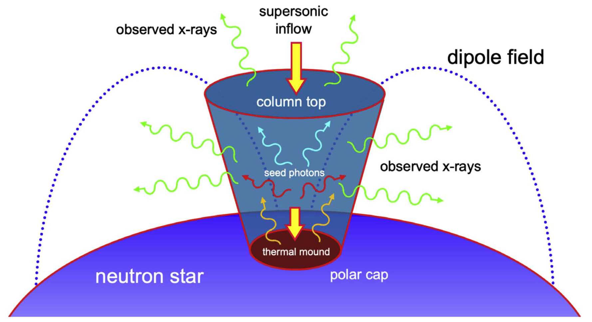
图注：Schematic representation of the continuum model described in \(\citet{BeckerandWolff2022}.\) Seed photons produced via blackbody, cyclotron, and bremsstrahlung processes are injected into the conical accretion column, are reprocessed via electron scattering, and escape through the column walls and top to form the observed X-ray spectrum.
来源与置信度：\(arxiv_source\)；high；\(arxiv_source\) / \(ms_r3.tex\):figure[1]
Fig02
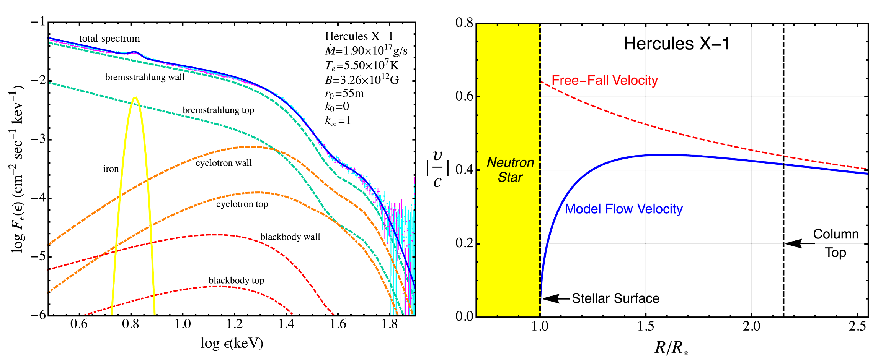
图注：The phase-averaged theoretical X-ray spectrum of Her X-1 computed using the {\(\tt\) BW22} model is plotted in panel (a). Note that the spectrum is dominated by reprocessed bremsstrahlung emission escaping through the column walls. In panel (b), the dimensionless flow velocity, $|\vel|/c$, for the Her X-1 accretion column, evaluated using the {\(\tt\) BW22} model, is plotted as a function of the dimensionless radius, $y=R/R_\text{star}$ (blue line). For comparison, the red dashed line indicates the local Newtonian free-fall velocity profile.
来源与置信度：\(arxiv_source\)；high；\(arxiv_source\) / \(ms_r3.tex\):figure[2]
Fig03
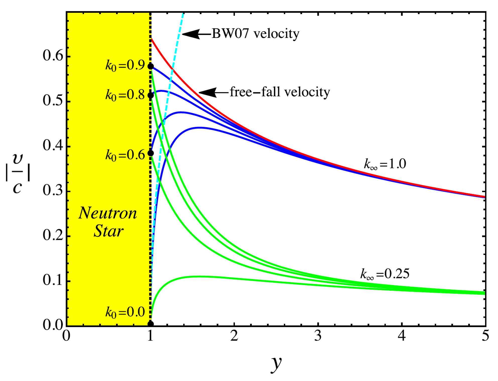
图注：Dimensionless flow velocity, $u=|\vel|/c$, of the accreting plasma near the surface of a neutron star, plotted as a function of the dimensionless radius, $y=R/R_\text{star}$. The values of the parameters $k_0$ and $k_\infty$ determine the relation between the flow velocity and the local Newtonian free-fall velocity near the stellar surface ($y=1$) and as $y \to \infty$, respectively.
来源与置信度：\(arxiv_source\)；high；\(arxiv_source\) / \(ms_r3.tex\):figure[3]
Fig04
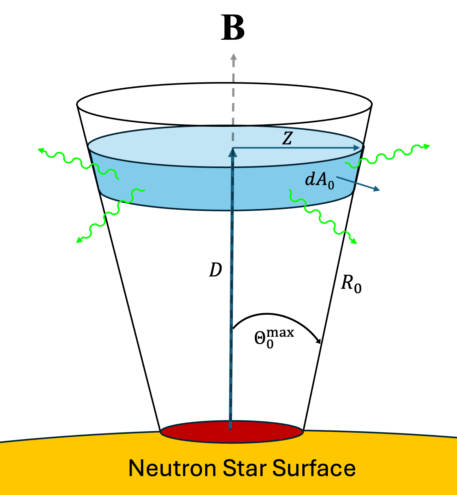
图注：Diagram illustrating the geometry for the escape of photons through band area $dA_0$ on the column wall, with $D = R_0 \cos \thetamax$ and $Z = R_0 \sin \thetamax$. See the discussion in the text.
来源与置信度：\(arxiv_source\)；high；\(arxiv_source\) / \(ms_r3.tex\):figure[4]
Fig05
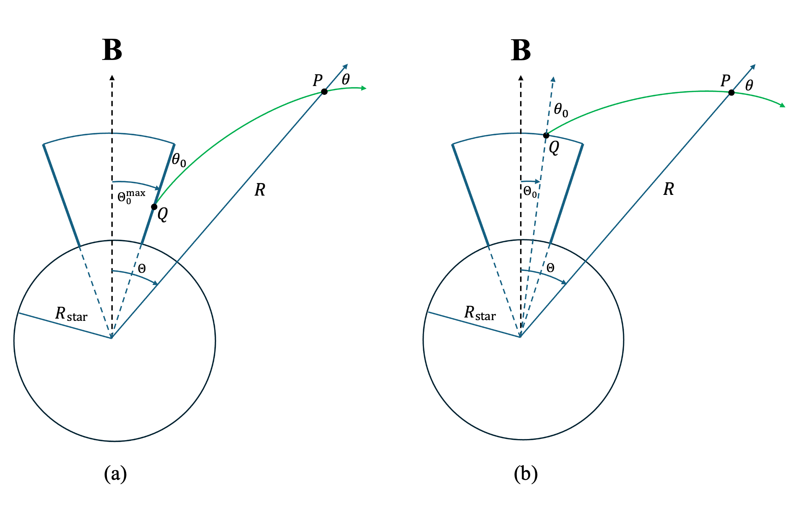
图注：Diagram of the RM88 coordinate system, depicting the curved path of a photon emitted from point $Q$ (green line), located on either (a) the column wall, or (b) the column top. The observer at point $P$ is at radius $R$ and has angle $\Theta$ relative to the magnetic axis.
来源与置信度：\(arxiv_source\)；high；\(arxiv_source\) / \(ms_r3.tex\):figure[5]
Fig06
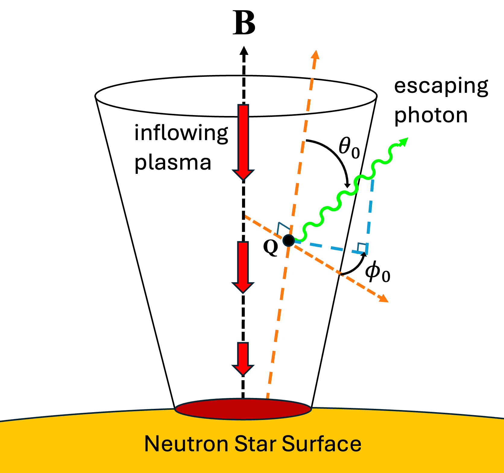
图注：Diagram of the {\(\tt\) RM88} coordinate system used to describe the photon emission direction in the local frame that is stationary with respect to the star. The two dashed orange axes represent the polar axis (aligned with the column wall) and the axis normal to the wall. The angles $(\theta_0,\phi_0)$ describe the emission direction with respect to this polar coordinate system.
来源与置信度：\(arxiv_source\)；high；\(arxiv_source\) / \(ms_r3.tex\):figure[6]
强相关工作
这篇工作与两条研究线直接相连。第一条是物理连续谱模型，尤其是 Becker 与 Wolff 关于强磁场吸积柱中热 Compton 化和体 Compton 化的解析处理。本文在此基础上加入锥形柱几何和相对论脉冲计算，使其从“拟合相位平均谱”的工具扩展为“同时拟合谱与脉冲轮廓”的工具。建议检索关键词包括“Becker Wolff accretion powered X-ray pulsar spectral formation”、“bulk Comptonization accretion column”、“conical accretion column X-ray pulsar”。
第二条是 X 射线脉冲星脉冲轮廓和束射几何建模，包括 pencil beam、fan beam、广义相对论光线弯曲以及相位分辨回旋线研究。Her X-1 是同一源历史文献非常多的对象，既有同源观测论文，也有回旋线、超轨道调制和双星几何研究。本文的潜在张力在于：它用离散束射权重获得灵活拟合，但这种经验自由度是否会掩盖真实的相位依赖吸收或盘遮挡，需要与相位分辨谱和多纪元观测比较。建议检索关键词包括“Her X-1 NuSTAR pulse profile”、“Her X-1 cyclotron line phase resolved spectroscopy”、“X-ray pulsar beam pattern light bending”。
同一事件 / 同类源线索：
- https://arxiv.org/abs/2606.30990
- https://arxiv.org/pdf/2606.30990
- https://ui.adsabs.harvard.edu/abs/1972ApJ...174L.143T/abstract
- https://ui.adsabs.harvard.edu/abs/2013ApJ...770..103H/abstract
相似工作：
基础理论 / 方法工作：
- https://ui.adsabs.harvard.edu/abs/1983bhwd.book.....R/abstract
- https://ui.adsabs.harvard.edu/abs/2013ApJ...770..103H/abstract
相反观点 / 张力线索：
（未提供）
2. Magnetar Formation from Accretion Induced Collapse of White Dwarfs
- 来源：arXiv / astro-ph.HE
- 链接：https://arxiv.org/abs/2606.30839v1
- 作者：Luís Felipe Longo Micchi, Patrick Chi-Kit Cheong, David Radice
- 评分：novelty 8/10，importance 8/10，relevance 8/10，final 9.00/10
- 推荐理由：快速旋转强磁白矮星AIC形成原磁星的GR中微子MHD模拟，涉及磁星形成、喷发现象、引力波和质量抛射，是高能致密天体方向的较重要理论结果。
中文题目：由白矮星吸积诱导坍缩形成磁星
做了什么：这篇论文用二维轴对称广义相对论中微子磁流体力学模拟，研究快速旋转、强磁化白矮星发生吸积诱导坍缩后，是否会自然形成一个原初磁星以及它在反弹后约 \(1\,\mathrm{s}\) 内如何演化。作者计算了九个模型，跟踪坍缩、核密度反弹、原初中子星形成、吸积盘维持、磁场重排、振荡、质量抛射和类似耀发的磁能释放。主要结论是：这类坍缩会留下质量约 \(1.15\text{--}1.45\,M_\odot\)、自转频率约 \(2.9\text{--}4.9\,\mathrm{kHz}\) 的快速旋转原初磁星，并伴随至少持续到 \(\sim1\,\mathrm{s}\) 的吸积盘；内部磁场可维持在 \(\gtrsim10^{13}\,\mathrm{G}\)，环向场可达 \(\sim10^{14}\,\mathrm{G}\)，热结构仍很高温，中心区域温度可达 \(\gtrsim20\,\mathrm{MeV}\)。当磁能增长到接近或超过转动能量量级 \(\sim10^{52}\,\mathrm{erg}\) 时，核心出现不稳定，发生磁通量外排、物质抛射和能量热化，这为吸积诱导坍缩产生磁星、快速瞬变和引力波信号提供了具体数值图像。
为什么重要：吸积诱导坍缩长期被认为是形成中子星的一条替代通道，但它能否形成强磁场、毫秒级自转的磁星，一直缺少包含广义相对论、中微子冷却和磁流体演化的系统模拟。这篇工作的重要性在于把白矮星坍缩后的前 \(\sim1\,\mathrm{s}\) 从“形成一个中子星”的简单说法推进到可诊断的结构：自转、磁场拓扑、热分布、吸积盘、振荡、喷发现象和可能的引力波调制。它直接影响我们如何理解部分毫秒磁星、低质量中子星、快速光学瞬变、伽马射线或软伽马重复暴活动的起源。
理论 / 观测 / 仪器方法价值：理论价值在于给出了吸积诱导坍缩后原初磁星的多物理场演化路径，并量化了磁能、转动能、热能和盘结构的相互作用。观测价值在于提供了若干可检验方向：早期引力波振荡、磁驱动质量抛射、盘风核合成、短时标高能耀发，以及与传统铁核坍缩磁星不同的质量和自转分布。方法价值在于展示了轴对称广义相对论中微子磁流体模拟如何用于白矮星坍缩问题，并指出磁场初值对最终自转和能量释放的系统影响。
为什么应该关注：如果你关心磁星从哪里来，这篇文章给出了一条不同于大质量恒星核心坍缩的形成通道；如果你关心快速瞬变或多信使天文学，它提供了一个可产生引力波、磁驱动抛射和高能活动的紧凑天体诞生场景；如果你做数值相对论或中微子磁流体模拟，它给出了一个很好的测试案例：坍缩、反弹、差分自转、磁场放大、盘吸积和不稳定如何在 \(\sim1\,\mathrm{s}\) 内耦合起来。
展开详细解读：文章讲解、背景、理论、重点章节、图表与相关工作
文章详细讲解
科学问题：白矮星在双星吸积中接近钱德拉塞卡质量后，可能不是发生热核爆炸，而是因电子俘获降低电子简并压、触发吸积诱导坍缩，形成中子星。关键问题是：如果坍缩前白矮星已经快速旋转并带有强磁场，反弹后会得到一个普通中子星、一个毫秒磁星，还是一个被吸积盘持续扰动的复杂暂现系统？这涉及角动量守恒、磁通压缩、中微子冷却和磁转动不稳定等多种过程，不能只用一维坍缩模型回答。
作者怎么做：论文进行了九个轴对称广义相对论中微子磁流体力学模拟，使用共形平坦近似下的 \(\texttt{Gmunu}\) 代码，从快速旋转、磁化白矮星开始，跟踪坍缩到核密度反弹，再演化到反弹后约 \(1\,\mathrm{s}\)。模型族改变初始磁场强度和相关初始条件，重点比较反弹后原初磁星的质量、自转频率、磁能、热能、磁场拓扑以及盘结构。因为模拟包含中微子处理和相对论引力，它比纯牛顿或无中微子的磁流体模型更接近原初中子星早期演化。
关键结果：所有模型都形成了快速旋转的原初磁星和持续存在的吸积盘。原初磁星质量约为 \(1.15\text{--}1.45\,M_\odot\)，自转频率约为 \(2.9\text{--}4.9\,\mathrm{kHz}\)，较强初始磁场一般导致较低最终转速，说明磁制动和磁耦合在坍缩早期已显著重分配角动量。反弹后最初 \(\sim10\,\mathrm{ms}\) 内，原初磁星发生整体振荡，既能驱动引力波发射，也会相干调制极向磁能。更有意思的是，磁能若以反弹时刻归一化，不同模型呈现近似普适演化，这暗示坍缩后磁能增长可能主要由共同的动力学阶段控制，而非完全由初始细节决定。
局限和下一步：最大的限制是轴对称。真实三维系统中，非轴对称 \(m=1\)、\(m=2\) 模式、磁转动不稳定湍流、盘湍流发电机和喷流准直都可能改变磁场拓扑、角动量输运和引力波谱。其次，反弹后 \(\sim1\,\mathrm{s}\) 仍远短于磁星冷却、盘风、放射性瞬变和长期自旋下降的时标，因此论文展示的是形成阶段而非完整可观测事件。下一步需要三维广义相对论中微子磁流体模拟、更长时标盘风计算、核合成后处理，以及把引力波、光学瞬变和高能辐射的预测连接到实际巡天灵敏度。
关键结果是怎么做出来的
本文的证据链首先来自模型样本的设置：作者不是只展示一个“能形成磁星”的示例，而是构造了九个快速旋转、磁化白矮星坍缩模型，系统改变初始磁场条件，比较反弹后残余体的质量、自转和磁能演化。样本量在数值相对论模拟中不算小，但它仍是参数空间的定向切片，而不是白矮星吸积诱导坍缩通道的完整人口合成。读者应注意模型之间的可比性：初始角动量、磁场几何和强度若同时改变，就会给“磁场越强、自转越慢”的趋势带来解释上的耦合。
核心结果之一是所有模型都形成原初磁星加吸积盘，而不是直接形成黑洞或无盘中子星。论文给出的残余体质量范围为 \(1.15\text{--}1.45\,M_\odot\)，自转频率范围为 \(2.9\text{--}4.9\,\mathrm{kHz}\)。这些数值应与图中的时间序列和表格参数一起看：质量定义可能依赖密度截断或束缚物质判据，自转频率也可能是核心平均频率、最大频率或某种惯量加权值。若图表同时给出盘质量和吸积率，最重要的是检查盘是否只是短暂数值残留，还是在 \(\sim1\,\mathrm{s}\) 后仍有明确支撑。
第二个关键结果是反弹后最初 \(\sim10\,\mathrm{ms}\) 的整体振荡。作者将这种振荡与引力波发射和极向磁场能量的相干调制联系起来。这里的统计意义不是观测意义上的 \(5\sigma\) 探测，而是数值诊断之间的相干性：密度、四极矩或等效引力波应变的振荡峰，应与极向磁能时间序列中的频率成分相对应。读者应检查频谱或时频图是否分辨出稳定峰，峰值是否随分辨率和提取半径变化，是否可能由轴对称边界或网格几何诱发。
第三个关键结果是磁能归一化到反弹值后呈近似普适演化。这类结论通常依赖把不同模型的时间零点对齐到反弹时刻，再比较 \(E_{\mathrm{mag}}(t)/E_{\mathrm{mag,b}}\)。读者应关注图中散布是否真小于模型间初始差异，普适性是否只在某个时间窗口成立，以及极向和环向分量是否分别普适。若总磁能普适但拓扑不同，观测后果可能仍然不同，因为喷流、盘风和磁层活动更依赖场几何而非总能量。
第四个结果是当磁能超过或接近转动能量量级 \(\sim10^{52}\,\mathrm{erg}\) 时，核心出现不稳定，伴随磁通量外排、质量抛射和类似耀发的活动。这里的证据应来自磁能、热能、外流质量和流体速度的同步突变，以及二维切片中磁力线或等磁压面的外移。稳健性问题包括：不稳定是否对数值电阻率敏感，轴对称是否夸大了环向场堆积，质量抛射是否超过逃逸速度，以及能量热化是否依赖中微子闭合方案。
系统误差方面，论文的主要不确定性来自二维轴对称、有限分辨率、初始白矮星磁场构型、微物理和中微子输运近似。若作者提供了分辨率测试、守恒量误差、不同磁场强度模型的对比和能量预算闭合，读者应优先查看这些稳健性检验。本文结论最稳的是“快速旋转磁化白矮星坍缩可形成快速旋转、强磁化原初中子星加盘”；较需谨慎的是“磁能演化普适”和“耀发式活动的真实三维形态”。
展开背景、理论、公式、模型、章节和图表导读
背景知识
吸积诱导坍缩指的是白矮星通过双星吸积或并合增长到接近临界质量后，中心密度升高，电子俘获触发失稳，最终坍缩成中子星。它不同于经典 \(\mathrm{Type\ Ia}\) 超新星：后者由热核燃烧解除束缚，而吸积诱导坍缩的核心是引力坍缩和中子化。由于喷出物可能较少、光学信号较暗，它一直是一个观测上难以确认但理论上很有吸引力的通道。
历史上，吸积诱导坍缩被用来解释部分低质量中子星、毫秒脉冲星形成、球状星团中中子星保留率以及某些暗弱快速瞬变。早期一维或二维模拟已经表明坍缩后会有一个热的原初中子星，若初始角动量足够大，还会留下盘状结构。但磁场在这一通道中的作用长期不清楚：白矮星磁场被压缩后能否达到磁星量级？差分自转能否把极向场缠绕成强环向场？磁能会只是被动增长，还是会反过来驱动不稳定和抛射？
这个问题现在值得重新看，是因为多信使天文学和高时间分辨率巡天把“暗弱、快速、少量抛射物”的瞬变空间打开了。引力波探测器虽然对银河系外普通吸积诱导坍缩不一定敏感，但银河系或近邻星系事件的早期振荡可能有可诊断价值。光学巡天和高能监测也在寻找难以归入普通核心坍缩超新星或 \(\mathrm{Type\ Ia}\) 的快速事件。若吸积诱导坍缩能形成磁星，它还可能与某些短时标高能活动或快速射电暴前身星讨论发生联系。
该领域常见误区之一是把“白矮星磁场压缩”简单等同于“必然形成磁星”。实际上最终磁场取决于磁通守恒、差分旋转缠绕、磁浮力、磁重联、中微子冷却、盘吸积和湍流发电机等过程。另一个误区是只看表面偶极场；对刚形成的原初磁星，内部环向场、局部磁压和磁能储备可能比外部偶极场更决定早期活动。还有一个误区是把二维轴对称模拟中的喷出和磁场结构直接当成真实三维形态，因为三维非轴对称湍流可能显著改变角动量输运和磁能饱和。
基础理论 / 方法脉络
从基础物理图像看，白矮星由电子简并压支撑。当吸积使质量和中心密度上升，电子俘获减少电子数密度和压强，核心失去稳定支撑而坍缩。坍缩过程中半径从白矮星尺度急剧收缩到中子星尺度，角动量近似守恒会显著提高角速度，磁通近似冻结会放大磁场。因此，一个原本只是强磁白矮星的系统，原则上可以在反弹后形成毫秒级、强磁化的原初中子星。
反弹发生在核密度附近，此时核物质状态方程变硬，内核停止坍缩并激发冲击和整体振荡。对快速旋转模型，反弹后的结构不是静态球对称原初中子星，而是差分旋转、热压支撑、强磁场和中微子冷却共同作用的对象。差分旋转会把极向场缠绕成环向场，磁压和磁张力又会反过来输运角动量。这正是本文中磁能增长、环向场形成和核心不稳定的物理基础。
本文的模型假设包括广义相对论引力、磁流体近似和中微子处理。磁流体近似默认等离子体电导率很高，磁场与流体近似冻结；广义相对论处理对中子星尺度引力势和高速旋转很重要；中微子影响热量、轻子数和冷却。轴对称模拟可以较高分辨率跟踪坍缩和反弹，但会抑制真实三维的非轴对称模式，也可能改变磁转动不稳定和湍流级联。
关键可观测或可诊断量包括原初磁星质量、自转频率、总磁能、极向磁能、环向磁能、热能、内部温度、盘质量、外流质量以及引力波应变。这里存在多种退化关系：同样的最终磁能可来自较强初始磁场或更有效的差分旋转缠绕；同样的自转频率可对应不同的质量和惯量分布；同样的抛射能量可能来自磁压、热压或中微子加热。读者阅读时应把能量预算、角动量预算和磁场拓扑一起看，而不是只看单个峰值磁场。
公式与推导
第一步是坍缩前后的角动量近似守恒。若忽略早期外流和磁制动，核心角动量可写为
其中 \(J\) 是角动量，\(I\) 是转动惯量，\(\Omega\) 是角速度，\(M\) 是核心质量，\(R\) 是特征半径，\(k\) 是与密度分布有关的无量纲系数。由此得到尺度关系
说明半径收缩会把白矮星自转大幅放大到毫秒中子星量级，但真实模拟中磁制动和盘交换会降低最终 \(\Omega\)。
第二步是磁通冻结的放大。理想磁流体中磁通近似守恒，穿过随流体运动面积 \(A\) 的磁通为
因此径向收缩给出
这里 \(B\) 是磁场强度。这个估算解释了为什么磁化白矮星坍缩后容易得到强内部场，但它不等同于表面偶极场预测，因为磁场拓扑会被差分旋转和重联改变。
第三步是磁能定义。模拟中常诊断的总磁能可近似写为
在相对论代码中会使用相应的三加一度规体积元和共动磁场量。这个量衡量磁场可用于做功、驱动外流或热化的能量储备。论文中把 \(E_{\mathrm{mag}}\) 归一化到反弹值 \(E_{\mathrm{mag,b}}\)，比较不同模型的共同演化。
第四步是差分旋转缠绕极向场。理想磁流体感应方程为
在轴对称差分旋转中，环向场增长的局部近似为
其中 \(B_\phi\) 是环向场，\(\mathbf{B}_{\mathrm{p}}\) 是极向场，\(r\) 和 \(\theta\) 是球坐标。该式说明只要 \(\nabla\Omega\neq0\)，极向场就会被缠绕成强环向场，这对应本文中 \(\sim10^{14}\,\mathrm{G}\) 环向场的物理来源。
第五步是转动能和磁能的比较。转动能近似为
磁场动力学重要性可用比值
衡量。当 \(\epsilon_B\ll1\) 时磁场主要被流体运动放大和搬运；当 \(\epsilon_B\sim1\) 或局部磁压接近动力学压强时，磁场能反过来改变核心结构、驱动不稳定和外流。论文报告的磁能达到 \(\sim10^{52}\,\mathrm{erg}\) 量级时出现磁通外排和类似耀发活动，可用这个能量竞争图像理解。
第六步是磁压与物质压强的局部判据。磁压为
常用等离子体参数为
其中 \(P_{\mathrm{gas}}\) 是气体和辐射等热压贡献。若 \(\beta\gg1\)，流体热压主导；若 \(\beta\lesssim1\)，磁场会强烈影响局部动力学。读者可用它判断论文中磁通外排区域是否真正进入磁主导状态。
第七步是整体振荡和引力波的连接。对轴对称源，主导引力波可由质量四极矩的二阶时间导数估计，尺度上有
其中 \(h\) 是应变，\(D\) 是源距离，\(Q\) 是质量四极矩。反弹后 \(\sim10\,\mathrm{ms}\) 内的整体振荡会使 \(Q\) 快速变化，从而产生短时引力波信号；若磁能也以同频率调制，就说明流体振荡和磁场演化发生相干耦合。
第八步是数值结果的能量守恒检查。理想情况下，重力释放能会分配到内能、动能、磁能、中微子能损失和未束缚物质能量，可示意为
其中 \(E_\nu\) 是中微子带走的能量，\(E_{\mathrm{ej}}\) 是抛射物能量。这个关系不是论文中某个单一闭式解，而是阅读模拟结果时的检查框架：若某次耀发式磁能下降同时伴随热能上升和外流增强，就支持“磁能释放并热化”的解释。
模型拟合 / 应用方法
这篇论文主要是数值模拟而非观测拟合，但仍然有“模型参数—诊断量—物理解释”的拟合逻辑。输入参数包括白矮星初始质量分布、角动量分布、磁场强度和拓扑，以及微物理和中微子处理方案；输出诊断量包括残余体质量、自转频率、磁能分量、温度、盘质量、外流质量和引力波相关量。读者应把九个模型看成对参数空间的采样，而不是对某个观测数据集的后验拟合。
如果把本文结果用于观测解释，常见做法是用半解析模型拟合光变曲线或高能活动，再把拟合得到的磁星初始周期、磁场和抛射质量同模拟结果比较。例如磁星注入模型会拟合 \(P_0\)、\(B_{\mathrm{dip}}\)、\(M_{\mathrm{ej}}\)、\(\kappa\) 等参数；本文提供的是这些参数的物理先验范围，尤其是残余体质量、自转能和内部磁能。需要注意的是，模拟中的内部环向场 \(B_\phi\) 不等于观测光变中常用的表面偶极场 \(B_{\mathrm{dip}}\)。
统计意义上，若未来把这类模型与事件样本比较，应构造似然 \(\mathcal{L}(\mathrm{data}\mid\theta)\)，其中 \(\theta\) 包括坍缩前角动量、磁场、盘质量和观测几何等。退化关系会很强：较高磁场和较短初始周期都能提高能量注入；较大抛射质量和较高不透明度都能拉宽光变曲线；盘风成分和磁星风成分可能在光学波段混合。仅用单波段光变通常不能唯一判断是否为吸积诱导坍缩磁星。
残差诊断应关注三个层面。第一是模拟内部残差：守恒量误差、磁场散度控制、分辨率收敛、中微子能量损失和边界效应。第二是物理模型残差：二维轴对称对三维湍流的缺失是否导致环向磁能过强，或者把真实非轴对称外流压成轴对称结构。第三是观测拟合残差：若模型预测快速早期能量释放，但光变没有早期蓝色峰或谱线速度不匹配，就需要重新评估盘风、抛射质量或热化效率。
模型可能失败的地方也很明确。若真实白矮星难以在坍缩前同时具备足够快速旋转和强磁场，那么形成率会低；若三维磁转动不稳定快速耗散差分旋转，本文中持续增长的环向磁能可能被削弱；若吸积盘在长期演化中主要把角动量带走而非供能，后续高能活动会低于二维早期模拟暗示。实际应用时，本文更适合作为形成阶段的物理边界条件，而不是直接给出完整瞬变模板。
重点章节 / 结果段落怎么读
数据和初始模型部分应先读。重点看九个白矮星模型的初始质量、角动量、磁场强度和拓扑，以及坍缩触发方式。这里决定了结论的适用范围：它讨论的是快速旋转、磁化白矮星的吸积诱导坍缩，而不是所有可能的白矮星坍缩。
数值方法部分要关注 \(\texttt{Gmunu}\) 的广义相对论中微子磁流体设置、共形平坦近似、网格、边界条件、状态方程、中微子处理和磁场散度控制。对专业读者来说，判断结果可信度的关键不只是物理图像是否合理，还包括能否在强引力、高磁化、强差分旋转环境中稳定保持守恒量。
反弹和残余体结构部分是主结果核心。应查看残余体质量、自转频率、盘结构、密度和温度分布，尤其是 \(1.15\text{--}1.45\,M_\odot\) 与 \(2.9\text{--}4.9\,\mathrm{kHz}\) 的定义方式。若论文有表格汇总不同模型的终态参数，这张表应与时间演化图联合阅读。
磁场演化和不稳定部分最能体现本文新意。重点看极向和环向磁能随时间的变化、归一化磁能的普适行为、磁通外排事件、质量抛射和热化区域。读者应检查作者是否区分了总磁能增长、局部峰值磁场增长和拓扑变化，因为三者的观测含义不同。
引力波和振荡讨论部分应作为连接多信使观测的入口。反弹后 \(\sim10\,\mathrm{ms}\) 的整体振荡若与极向磁能调制相干，说明早期动力学可能有可识别频率。但需要同时看振幅尺度、频率范围和距离假设，避免把数值上清楚的振荡误读成现实中一定可探测的信号。
讨论和局限部分尤其重要。作者若讨论了二维轴对称、三维非轴对称不稳定、磁转动不稳定、长期冷却和盘风缺失等问题，读者应把这些作为后续工作的路线图。本文给出的不是最终人口统计结论，而是一个可用于后续三维模拟和观测模板构建的形成阶段基准。
建议重点查看的图表
-
初始模型或坍缩前白矮星结构图：看密度、角速度和磁场分布，确认模型是否代表快速旋转强磁白矮星，而非人为极端构型。
-
反弹后密度、温度和磁场二维切片：看原初磁星半径、中心高温区、盘的位置以及磁场峰值是否共位于内 \(\sim10\,\mathrm{km}\)。
-
残余体质量、自转频率和盘质量随时间曲线：检查 \(1\,\mathrm{s}\) 内是否达到准稳态，吸积盘是否持续存在，以及强磁模型为何自转较慢。
-
总磁能、极向磁能、环向磁能时间演化：重点看反弹后 \(\sim10\,\mathrm{ms}\) 的振荡调制、后期增长阶段和不同模型归一化后的普适性。
-
能量预算图：比较 \(E_{\mathrm{mag}}\)、\(E_{\mathrm{rot}}\)、热能、动能和中微子损失，判断磁能达到 \(\sim10^{52}\,\mathrm{erg}\) 时是否足以反作用于流体。
-
外流或抛射物诊断图：看未束缚质量、速度、熵和电子分数分布，判断“质量抛射”和“耀发式活动”是否具有可观测后果。
-
引力波波形或频谱图：看反弹后短时振荡频率、振幅衰减和不同模型的相干性，避免只凭单条时间曲线判断可探测性。
-
分辨率或稳健性检验表：如果有，应检查磁能增长、外流质量和振荡频率对网格分辨率、边界和磁场散度控制是否敏感。
关键图表逐图导读
图 1：通常应是初始模型或坍缩序列示意。横轴和纵轴可能为空间坐标，颜色表示密度、角速度或磁场强度，线条表示磁力线或等密度面。读图时要看初始磁场是否主要为极向、是否集中在核心、角速度是否强烈差分。陷阱是只看最大磁场数值，而忽略磁通分布；磁场若只在很小体积内极强，其后续能量预算与全局强磁模型不同。
图 2：反弹后残余体二维切片应是本文最直观的结果图之一。坐标轴一般为柱坐标或极坐标截面，颜色可能表示温度、密度或磁场，箭头或曲线表示速度和磁力线。应检查高温 \(\gtrsim20\,\mathrm{MeV}\) 区域和强磁 \(\gtrsim10^{13}\,\mathrm{G}\) 区域是否都位于内 \(\sim10\,\mathrm{km}\)，以及盘是否在赤道面形成。陷阱是二维截面会强化轴对称直觉，真实三维盘可能更破碎和湍流化。
图 3：残余体质量、自转频率和盘质量的时间演化图应支持“形成快速旋转原初磁星加持久盘”的结论。横轴通常为反弹后时间，纵轴分别为质量、频率或质量流率，不同颜色代表九个模型。读者要看曲线在 \(\sim1\,\mathrm{s}\) 时是否仍有明显变化；若尚未收敛，所谓终态应理解为早期状态。强磁模型自转较慢的趋势若存在，应检查它是否与更强外流或更大盘角动量相关。
图 4：磁能演化图是本文的关键证据。横轴为反弹后时间，纵轴可能是 \(E_{\mathrm{mag}}\)、极向磁能、环向磁能，或归一化量 \(E_{\mathrm{mag}}/E_{\mathrm{mag,b}}\)。主要结论是不同模型在归一化后呈近似普适行为，并在早期出现相干振荡。读图陷阱是归一化会隐藏绝对磁能差异；两个模型曲线形状相似，不代表它们对外流和辐射的绝对贡献相同。
图 5：磁通外排和耀发式活动图可能表现为磁能突然下降、热能上升、外流质量增加，或二维切片中的磁泡向外运动。应看这些事件是否在多个诊断量中同步出现，而不仅仅是某个局部最大磁场变化。若图中标出 \(E_{\mathrm{mag}}\sim10^{52}\,\mathrm{erg}\) 或 \(E_{\mathrm{mag}}/E_{\mathrm{rot}}\) 的阈值，应关注是否所有模型都遵循相似阈值，还是只有少数强磁模型出现。
图 6：引力波波形或频谱图应以时间、频率和应变为核心。若横轴是反弹后时间，读者应看最初 \(\sim10\,\mathrm{ms}\) 的振荡是否与磁能调制同步；若是频谱，应看主峰频率、峰宽和模型间漂移。陷阱是图中应变常按某个标准距离归一化，不能不看距离就判断探测前景。
论文原图 / 可嵌入图片
Fig01
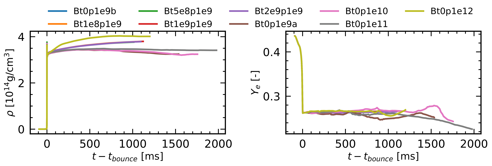
图注：Here we show the central density (estimated by the position of maximum density) and the corresponding fluid's electron fraction. Note that the time axis has been translated by the reference value of $t_{bounce}$, all our figures should follow this standard. Note that the magnetic field of different strengths does not alter the collapse phase of the AIC significantly.
来源与置信度：\(arxiv_source\)；high；\(arxiv_source\) / main.tex:figure[1]
Fig02
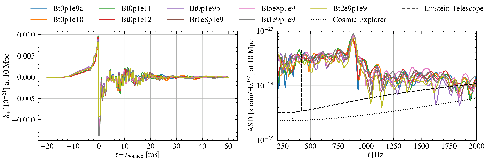
图注：Gravitational wave signal recovered from our models by means of the moment of inertia, see Equation \(\ref{eq:GW}.\) All our models show a prompt signal following the bounce, mainly containing $900$Hz radiation. The lack of a late time emission is due to the axisymmetry of our models, which prevent the $m=1$ instability found in \(\citet{2023MNRAS.525.6359L}.\) Our findings support the expectation of detections of such events by CE and ET up to $\sim$10Mpc.
来源与置信度：\(arxiv_source\)；high；\(arxiv_source\) / main.tex:figure[2]
Fig03
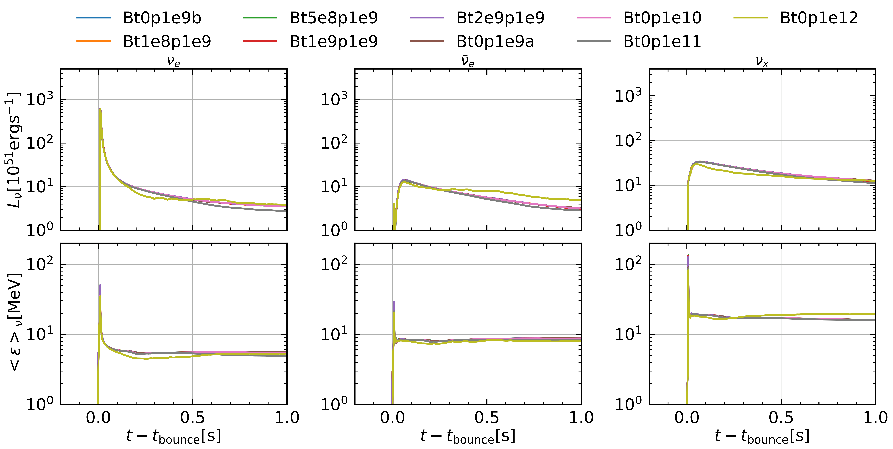
图注：Total neutrino luminosities and average energies as a function of time for each one of the neutrino flavors. We found that a higher magnetic field leads to a higher asymptotic value of $L_{\bar{\nu}_{e}}$ with no significant increase in the average neutrino energy.
来源与置信度：\(arxiv_source\)；high；\(arxiv_source\) / main.tex:figure[3]
Fig04
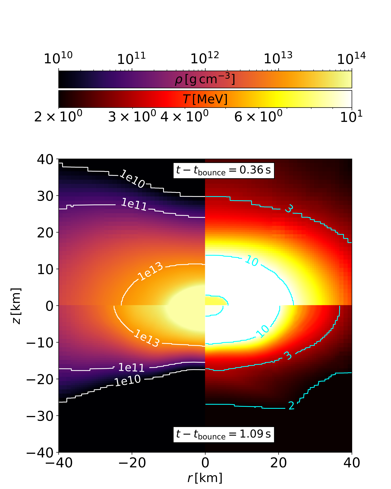
图注：Temperature and density profiles for model Bt2e9p1e9. Here we see that the regions where $\nu_{x}$ become untrapped ($\rho \sim 10^{13}$ g/cm$^3$) is very close to the PNS' core and present temperatures $\gtrsim10$ Mev. On the other hand, $\rho \sim 10^{11}$ g/cm$^3$ regions are related to the still existing accretion disk, which displays temperatures $\lesssim 10$MeV. This explains the factor 2 connecting the average neutrino energies of heavy lepton neutrino and (anti-)electron neutrinos found in Figure~\(\ref{fig:Nu}.\) We find that the PNS is extremely hot ($\gtrsim 10$ MeV) when compared to an isolated NS (typically $\sim$ MeV). We note that the temperature peaks off-center of the star even for 1 second after the bounce.
来源与置信度：\(arxiv_source\)；high；\(arxiv_source\) / main.tex:figure[4]
Fig05
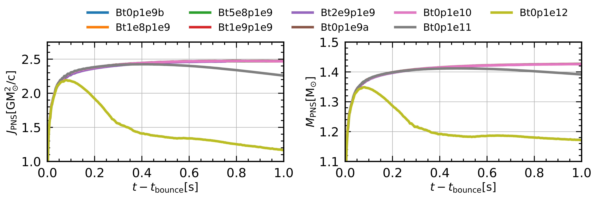
图注：Angular momentum and mass of the PNS as a function of time. We define the PNS as the region with $\rho \geq 10^{11}$g/cm$^{3}$. We note that apart from the Bt0p1e12, all models produce similar PNS with respect to their final mass (${\sim} 1.4 M_{\odot}$) and angular momentum ($J\sim2.4 G M_{\odot}^{2}/c$). We attribute the big difference encountered by the Bt0p1e12 model to the stronger magnetic wind faced by this model.
来源与置信度：\(arxiv_source\)；high；\(arxiv_source\) / main.tex:figure[5]
Fig06
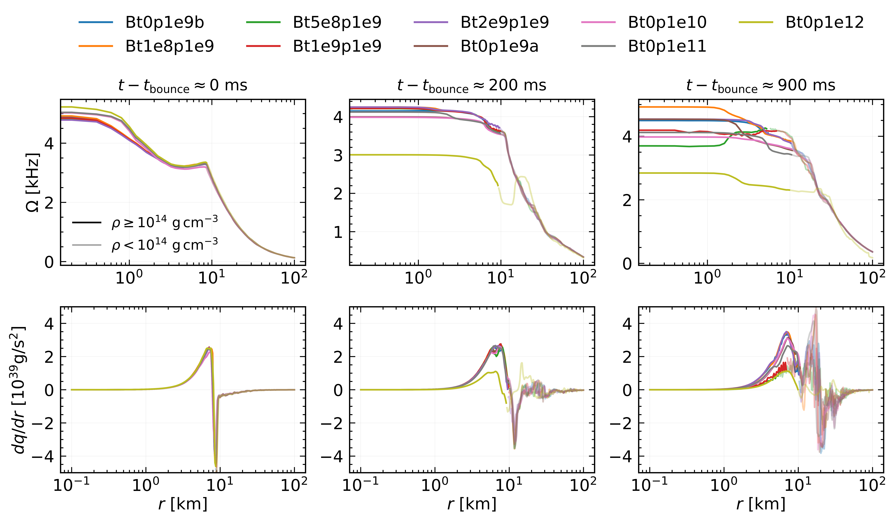
图注：Radial (z=0) rotational profiles of our models at the equatorial plane for 3 different times. At bounce times, all of our models display a differential rotation profile. While most of our models achieve a solid rotation in the PNS core, Bt0p1e12 develops a Rayleigh-Taylor instability due to the depression in its angular velocity ($\Omega$) profile. This also appears as a negative derivative of $q$($\equiv \rho (\Omega R^{2})^{2}$), see more details in Figure~\(\ref{fig:Rotation2}.\)
来源与置信度：\(arxiv_source\)；high；\(arxiv_source\) / main.tex:figure[6]
强相关工作
这篇工作属于吸积诱导坍缩、原初中子星形成和磁星起源三个方向的交叉。与早期吸积诱导坍缩模拟相比，它的重点不只是坍缩是否成功和抛射物多少，而是强磁场和快速旋转如何共同塑造反弹后 \(\sim1\,\mathrm{s}\) 的残余体。建议检索关键词包括“accretion induced collapse white dwarf magnetorotational simulation”、“AIC proto neutron star disk”、“magnetar formation accretion induced collapse”和“general relativistic neutrino MHD AIC”。
与传统大质量恒星核心坍缩形成磁星的图像相比，吸积诱导坍缩可能给出更低质量、更少包层污染、不同盘结构和不同抛射物组成的磁星形成环境。相反观点或张力主要在于形成率、前身星条件和三维磁流体不稳定：并非所有接近钱德拉塞卡质量的白矮星都会坍缩，许多会热核爆炸；即便坍缩，二维模拟中的磁能积累和外流形态也可能被三维湍流改变。建议同时检索“Type Ia versus accretion induced collapse”、“magnetorotational instability proto neutron star”和“millisecond magnetar central engine degeneracy”。
同一事件 / 同类源线索：
相似工作：
基础理论 / 方法工作：
（未提供）
相反观点 / 张力线索：
（未提供）
3. Active Galactic Nuclei as high-energy neutrino sources
- 来源：arXiv / astro-ph.HE
- 链接：https://arxiv.org/abs/2606.30764v1
- 作者：Filippo D'Ammando
- 评分：novelty 5/10，importance 8/10，relevance 10/10，final 8.80/10
- 推荐理由：AGN作为高能中微子源的综述，覆盖IceCube、TXS 0506+056、NGC 1068、伽马/射电AGN相关性和多信使机制；虽新颖性有限，但与重点兴趣高度相关。
中文题目：活动星系核作为高能中微子源
做了什么：这是一篇关于活动星系核与高能天体物理中微子关联的综述，核心问题是：冰立方已经测到弥散高能中微子背景，但哪些天体真正供能仍未解决。文章梳理了伽马射线耀变体、射电亮活动星系核、TXS 0506+056、NGC 1068 等个例和群体关联研究，比较了喷流区强子过程、遮蔽核心、盘冕区和星暴环境等中微子产生图像。主要结论是，明亮伽马射线耀变体很难贡献全部中微子背景，但活动星系核仍可能通过多个子类和多区机制贡献重要份额，尤其是伽马射线不透明或射电/红外明亮但高能伽马不显著的系统。
为什么重要：高能中微子的来源问题直接连接宇宙线加速、喷流物理、致密核区辐射场和多信使天文学。若活动星系核是重要源类，必须解释为什么中微子信号与伽马射线亮度并不总是同步，以及为什么 TXS 0506+056 和 NGC 1068 代表了两种非常不同的源环境。
理论 / 观测 / 仪器方法价值：这篇文章的价值不在于提出单一新模型，而在于把分散的个例关联、堆叠分析、源群体上限、射电相关性和未来探测器前景放在同一框架下比较。它对理论工作者有助于区分喷流透明模型和遮蔽核模型；对观测者有助于理解为什么只盯着伽马射线耀变体会漏掉潜在中微子源；对方法学则提醒读者注意试验因子、源表选择和多波段非同时性造成的假关联。
为什么应该关注：如果你关心高能宇宙线起源、AGN 喷流、TeV 伽马射线源表或未来 KM3NeT、IceCube-Gen2 的科学目标，这篇综述值得读。它总结了目前最关键的事实：中微子天空不是简单的“伽马射线耀变体天空”，而可能由少数强源、许多暗源和多种辐射环境共同塑造。
展开详细解读：文章讲解、背景、理论、重点章节、图表与相关工作
文章详细讲解
科学问题：冰立方发现了从几十 TeV 到 PeV 量级的天体物理中微子通量，但源类识别仍然困难。活动星系核长期被视为候选源，因为它们拥有相对论喷流、强辐射场、黑洞吸积功率和可能的强子加速环境。问题在于，若把所有明亮伽马射线耀变体简单相加，它们通常只能解释冰立方弥散通量的一部分；而个别关联如 TXS 0506+056 与 IceCube-170922A、NGC 1068 的中微子过量又提示 AGN 确实参与其中。本文讨论的核心张力正是：AGN 是否是主要中微子源，如果是，主要是哪一类 AGN、在哪个物理区产生中微子、为什么电磁对应体常常并不直观。
作者怎么做：这篇文章是综述性质，不是单一数据分析论文。作者整理了近年关于高能中微子与 AGN 的多条证据链：一是单个事件与单个耀变体的时空关联；二是冰立方对源表的堆叠检验；三是伽马射线亮耀变体总体贡献的限制；四是射电亮 AGN 与中微子到达方向的相关性研究；五是 NGC 1068 这类非耀变体、射电较弱或伽马射线不显著的 Seyfert 星系的结果。文章还比较了不同中微子产生机制，包括喷流中 \(p\gamma\) 相互作用、\(pp\) 碰撞、盘冕区强子加速、宽线区或尘埃环辐射场中的光介子产生，以及伽马射线被内部吸收的“隐藏源”情形。
关键结果：综述强调，TXS 0506+056 是目前最著名的耀变体候选中微子源，既有 2017 年单个高能事件与多波段耀发的关联，也有回溯分析中 2014--2015 年中微子过量的证据，但两者的电磁表现并不完全一致，因此不能用简单单区同步模型轻易解释。NGC 1068 则代表另一类思路：它不是典型强喷流耀变体，却在冰立方点源搜索中显示出显著中微子过量，提示致密核区、强吸收环境或星暴/AGN 复合区域可能产生中微子而不释放相应的透明 TeV 伽马射线。作者还指出，许多个别耀变体关联声称存在争议，因为后验选择、源表重叠、角分辨率、时间窗选择和多波段观测不同时等因素会放大偶然符合。
局限和下一步：目前限制主要来自样本量和角分辨率。冰立方对南北天区的灵敏度、不同能段的背景成分、级联事件和径迹事件的定位差异，都会影响关联判断。AGN 自身也不是单一族群，按视角、喷流功率、辐射遮蔽、吸积率和宿主星系环境划分后，各子类统计功率下降。下一步需要更大的中微子事件样本、更好的实时告警、更均匀的射电/红外/硬 X 射线监测，以及 KM3NeT、Baikal-GVD、P-ONE、IceCube-Gen2 等设施提高角分辨率和全天覆盖。理论上则需要从“一个漂亮的单区模型拟合一个事件”转向“可被源表统计和多信使能量预算共同检验的群体模型”。
关键结果是怎么做出来的
本文最重要的证据链之一是 TXS 0506+056。事件 IceCube-170922A 是一个高能径迹型中微子候选，方向误差相对较小，落在当时处于高能伽马射线活跃状态的 BL Lac 天体 TXS 0506+056 附近。后续多波段观测从射电、光学、X 射线、GeV 到 TeV 伽马射线进行了跟进，使其成为第一个被广泛讨论的中微子耀变体关联案例。统计上，单个事件关联必须同时考虑空间符合、时间符合、能量信息和源活动状态；一旦是在已知事件之后挑选最显眼的电磁源，后验试验因子会显著降低表观显著性。
第二条关键证据链是对 TXS 0506+056 的历史数据回溯。冰立方报告过 2014--2015 年方向上中微子候选事件的时间聚集，而当时并没有同样强的 GeV 伽马射线耀发。这一点很重要，因为它削弱了“中微子总是伴随强伽马耀发”的简单图像。若中微子来自 \(p\gamma\) 过程，伴随产生的电磁级联可能在源内被吸收并重处理到 X 射线或更低能段，也可能被多区结构稀释。因此，支持结论的图表通常不是单一光变曲线，而是中微子时间窗、多波段通量演化和强子模型能量预算的组合。
第三条证据链是 NGC 1068。冰立方点源分析在这个近邻 Seyfert 星系方向发现中微子过量，其意义在于样本选择不是从伽马射线最亮耀变体出发，而是允许非典型 AGN 成为候选。NGC 1068 的 GeV 到 TeV 伽马射线并不足以直接解释中微子通量，反而支持“隐藏”或“半隐藏”的中微子源区：高能伽马光子在致密辐射场或物质场中被吸收，而中微子逃逸。判断这一结果时应关注点源似然图、最佳拟合信号事件数、能谱指数区间、与大气背景的分离，以及不同源表或全天天图扫描带来的试验因子校正。
第四条证据链来自群体统计。多项研究表明，费米大面积望远镜探测到的亮伽马射线耀变体总体不能主导冰立方弥散通量，否则在堆叠分析中应出现更强相关信号，或者会违反弥散伽马背景约束。本文综述了这类约束的含义：不是排除所有 AGN，而是排除“透明、伽马亮、与中微子成简单比例”的耀变体主导模型。相反，射电亮 AGN、低辐射效率核心、尘埃遮蔽 Seyfert 或康普顿厚核区仍有空间。
系统误差和稳健性方面，读者应特别注意不同分析使用的源表是否完整、是否通量受限、是否包含南北天区灵敏度差异、是否校正了多重检验。中微子事件的能量代理量、角误差分布和背景模型会影响个例关联；电磁端的非同时观测、耀发定义、频段选择和源混淆会影响物理解释。本文的稳健结论并不是“某个 AGN 已经被证明是普遍源类”，而是“已有证据足以说明 AGN 相关环境不能被忽略，但主导通道仍未确定”。
展开背景、理论、公式、模型、章节和图表导读
背景知识
研究对象是活动星系核，即由超大质量黑洞吸积驱动的高能天体。它们可表现为 Seyfert 星系、射电星系、类星体、BL Lac 天体和平谱射电类星体等。若喷流接近视线方向，非热辐射被相对论增亮，形成耀变体。由于喷流中存在相对论粒子、强磁场和快速变源性，AGN 很早就被列为高能宇宙线和中微子候选源。
历史问题可以追溯到高能宇宙线起源和 Waxman--Bahcall 类型能量预算。若宇宙线质子或原子核在源内与光子或气体相互作用，会产生带电介子，进而衰变为中微子。中微子不带电、弱相互作用，几乎直线传播，因此原则上比宇宙线更适合指向源。但它们探测截面极小，角分辨率和统计量长期受限，导致源识别比发现弥散通量困难得多。
观测背景的关键转折是冰立方发现天体物理中微子通量，随后开展全天点源搜索、瞬变关联搜索和源表堆叠分析。TXS 0506+056 的关联使“中微子耀变体”成为多信使天文学标志性案例；NGC 1068 的结果则把注意力从喷流视角转向遮蔽核心和非耀变体 AGN。与此同时，费米伽马射线源表、VLBI 射电源表、硬 X 射线巡天和光学时域巡天都在增加可交叉检验的样本。
为什么现在值得重新看：因为简单图像遇到张力。若明亮伽马射线耀变体是主要源，冰立方应在这些方向上看到更强堆叠信号；若源内透明，高能中微子伴随的伽马射线级联也会受到弥散伽马背景限制。近年来更多证据指向多区、多族群和隐藏源：中微子可能在伽马射线无法逃逸的区域产生，或者在电磁波段表现为硬 X 射线、红外、射电而非 TeV 伽马。
常见误区有三类。第一，把空间接近等同于物理关联，忽略了冰立方角误差、源面密度和后验选择。第二，把伽马射线亮度直接当作中微子亮度代理，忽略源内吸收和电磁级联重处理。第三，把“耀变体贡献有限”误读为“AGN 被排除”，实际上它只限制某些透明伽马亮喷流模型，不能排除 Seyfert 核区、射电星系、低亮度 AGN 或尘埃遮蔽系统。
基础理论 / 方法脉络
基本物理图像是：AGN 中若存在被加速到高能的质子或原子核，它们可以与环境中的光子场或气体发生相互作用。\(p\gamma\) 相互作用常见于强辐射场，如喷流同步辐射光子、宽线区、尘埃环或盘冕光子；\(pp\) 相互作用常见于高气体密度区域，如核区云、星暴环或喷流与物质相互作用区。两种过程都会产生 \(\pi^\pm\)，随后衰变给出高能中微子，同时 \(\pi^0\) 衰变产生伽马射线。
对透明源，强子过程产生的伽马射线和中微子在能量预算上相关。因此，若某类源产生了大量中微子，通常也会通过直接伽马射线或级联辐射影响 X 射线到 GeV 背景。这个约束使得“所有费米亮耀变体产生全部冰立方通量”的模型很难成立。对隐藏源，高能伽马射线在源内通过 \(\gamma\gamma\) 吸收或电磁级联转移到低能，因而中微子可以逃逸但 TeV 伽马不显著。
本文涉及的关键量包括中微子能量通量、源方向角距离、事件角误差、能谱指数、最佳拟合信号事件数、源表权重和试验因子。对于个例关联，空间项、能量项和时间项都会进入似然；对于群体堆叠，源的权重可按伽马通量、射电通量、红外亮度或等权处理。不同权重对应不同物理假设，因而“未检出”也只是否定特定假设。
观测方法上，冰立方的径迹事件角分辨率较好，适合点源定位；级联事件能量分辨率较好但角分辨率较差。北天和南天的背景不同：北天主要通过地球屏蔽大气 muon，南天高能阈值更高。AGN 源表则有自身选择效应，例如费米源表偏向伽马亮、VLBI 源表偏向射电致密核、硬 X 射线源表偏向吸收较低或康普顿厚校正可控的对象。
主要退化关系包括：源内靶光子密度与质子功率可以互相补偿；磁场强度与电磁级联峰值能量退化；Doppler 因子与内禀光度退化；时间窗选择与显著性退化。对于 TXS 0506+056 这类源，同一中微子通量可由单区高质子负载模型、多区遮蔽模型或外部辐射场模型解释，但它们对 X 射线、MeV 伽马和 TeV 吸收的预言不同。
公式与推导
第一步从宇宙线能量注入出发。设单个源中加速质子的微分光度为 \(L_p(E_p)\)，若有一部分 \(f_\pi(E_p)\) 的质子能量转化为介子，则所有味中微子的近似能量光度可写为
这里 \(E_p\) 是质子能量，\(E_\nu\) 是单个中微子能量，因子 \(3/8\) 表示带电介子分支和衰变能量分配的近似。该式适用于光学厚度不太大、介子和缪子冷却不主导的情形。
第二步区分 \(p\gamma\) 与 \(pp\) 效率。对半径 \(R\) 的相互作用区，若靶光子数密度为 \(n_\gamma\)，则
其中 \(\sigma_{p\gamma}\) 是有效截面，\(\kappa_{p\gamma}\) 是非弹性系数。若靶气体密度为 \(n_H\)，则
这两式说明中微子效率取决于靶场柱密度，而不仅取决于喷流总功率。
第三步给出 \(p\gamma\) 反应阈值。在质子共动系近似下，产生 \(\Delta\) 共振需要
其中撇号表示源区共动系，\(\epsilon_\gamma'\) 是靶光子能量。考虑 Doppler 因子 \(\delta_D\) 和红移 \(z\)，观测中微子能量与靶光子能量满足近似标度
这解释了为什么 UV、X 射线或红外靶光子分别对应不同的中微子能段。
第四步连接到观测通量。红移为 \(z\)、光度距离为 \(d_L\) 的源，其单味中微子能量通量可写成
若考虑三味振荡后近似达到 \(\nu_e:\nu_\mu:\nu_\tau \simeq 1:1:1\)，则单味通量约为总通量的三分之一。该式是把模型能量预算与冰立方点源灵敏度比较的基本桥梁。
第五步说明伽马射线约束。\(\pi^0\) 衰变伽马射线在源内的逃逸概率由 \(\gamma\gamma\) 光学深度控制：
若 \(\tau_{\gamma\gamma}\ll 1\)，源是伽马透明的，中微子模型必须同时满足 GeV--TeV 观测；若 \(\tau_{\gamma\gamma}\gg 1\)，高能伽马被吸收并级联到低能，NGC 1068 这类隐藏源解释就更自然。
第六步进入点源统计。对第 \(i\) 个中微子事件，非延展点源搜索常写成信号与背景的混合似然：
这里 \(N\) 是事件总数，\(n_s\) 是待拟合信号事件数，\(\gamma\) 是源能谱指数，\(S_i\) 包含方向、能量和可能的时间信息，\(B_i\) 是大气背景概率密度。
第七步用似然比定义检验统计量：
其中 \(\hat n_s\) 与 \(\hat\gamma\) 是最大似然估计。局部显著性需要通过背景伪实验或渐近分布换算，而全局显著性还要乘入扫描天空、多个源表和多个时间窗带来的试验因子。
第八步给出堆叠分析的源项。若源表中第 \(j\) 个 AGN 权重为 \(w_j\)，则事件信号概率密度可写为
这里 \(S_{ij}\) 是事件 \(i\) 来自源 \(j\) 的空间和能量概率。选择 \(w_j\propto F_\gamma\)、\(w_j\propto F_{\rm radio}\) 或等权，分别检验不同物理假设；因此堆叠非检出不能无条件排除所有 AGN。
第九步把弥散背景写成群体积分：
其中 \(\mathcal{H}(z)\) 描述源的宇宙演化，\(Q_{E_\nu'}^{\nu}\) 是共动体积发射率。该式说明，个别近邻源的显著性和整个源类对弥散通量的贡献不是同一个问题，二者需要分别检验。
模型拟合 / 应用方法
这类工作中的模型拟合可分为两层。第一层是中微子数据本身的统计拟合，通常拟合信号事件数 \(n_s\)、能谱指数 \(\gamma\)、源位置或时间窗。输入量包括事件方向、角误差、能量代理量和探测器有效面积。输出不是简单的“是否重合”，而是相对于大气背景的似然比、局部 \(p\) 值和全局校正后的显著性。
第二层是多信使物理模型拟合。对于耀变体，常见做法是先用同步辐射和逆康普顿成分拟合电磁谱能量分布，再加入强子分量计算中微子和级联辐射。拟合量包括 Doppler 因子、发射区半径、磁场、电子谱、质子谱、最大质子能量、质子负载和外部光子场。TXS 0506+056 的困难在于，中微子所需的强子功率和 X 射线/伽马射线观测之间往往存在紧张，需要多区或隐藏辐射场来缓解。
对于 NGC 1068 一类源，拟合重点从喷流辐射转向核区物质和辐射场。模型可能包括盘冕区强子加速、致密气体中的 \(pp\) 碰撞、红外尘埃场中的 \(p\gamma\) 过程，以及高能伽马的内部吸收。这里的退化关系更强：同样的中微子通量可以来自更高的宇宙线功率或更高的靶密度；而硬 X 射线、MeV 伽马和红外数据决定了哪些组合可行。
源表堆叠拟合的关键是权重假设。若按伽马射线通量加权，检验的是中微子与透明高能电磁辐射近似成正比的模型；若按射电核通量加权，检验的是喷流功率或致密核活动与中微子相关；若按红外或硬 X 射线加权，则更接近遮蔽吸积或星暴复合场景。不同权重导致不同的灵敏度和不同的物理结论，不能把某个源表的非检出泛化为所有 AGN 的非检出。
残差诊断应包括空间残差、能量残差和时间残差。空间上要看高权重源附近是否系统性聚集事件；能量上要看候选事件是否比大气背景更硬；时间上要看是否存在与电磁活动同步的窗口，或反而出现“中微子活跃而伽马安静”的阶段。模型失败的典型信号是：需要超 Eddington 级别的质子功率、过量产生未观测到的 X 射线级联、违反弥散伽马背景，或只在后验挑选的时间窗内显著。
实际应用中，最稳妥的策略是把个例关联作为假设生成，把预定义源表堆叠和未来实时告警作为假设检验。未来更大的中微子样本可把当前的“候选源故事”转化为源类统计；同时 MeV 伽马、硬 X 射线和高分辨率射电监测将决定隐藏源模型是否能在电磁端闭合能量预算。
重点章节 / 结果段落怎么读
一、引言和问题设定：应先看作者如何定义高能中微子源识别问题，以及为什么 AGN 被认为是候选源。重点不是 AGN 能否加速粒子的泛泛论述，而是冰立方弥散通量、点源搜索和多信使关联之间存在什么观测张力。
二、伽马射线耀变体与 TXS 0506+056：这一部分应重点读事件关联和历史中微子过量的区别。读者要分清 IceCube-170922A 这类单事件实时告警、多波段跟进，以及 2014--2015 年回溯时间聚集分析是两条不同证据链；二者对模型的要求也不同。
三、群体限制和堆叠分析：这一部分决定了“耀变体是否能解释全部中微子背景”。应关注源表如何选、权重如何设、上限如何与冰立方弥散通量比较。若文章讨论费米耀变体只能贡献小部分通量，读者应追问这个结论针对的是哪个能段、哪类耀变体和哪种中微子--伽马比例假设。
四、射电亮 AGN 与 NGC 1068：这部分是综述的物理扩展。射电相关研究把注意力放在喷流功率或致密核活动上；NGC 1068 则提示非耀变体、遮蔽核区也可能有效产中微子。读者应比较这两类源的靶场、伽马透明度和预期电磁对应体。
五、中微子产生机制和未来展望：最后应读作者如何比较 \(p\gamma\)、\(pp\)、盘冕、宽线区、尘埃环、多区喷流和隐藏源模型。未来展望部分要关注哪些观测能真正区分模型：更好的角分辨率、南天灵敏度、MeV 伽马观测、硬 X 射线监测和射电 VLBI 长期巡天。
建议重点查看的图表
-
高能中微子天空图与 AGN 候选源位置叠加：看事件角误差椭圆、候选源面密度和是否存在后验挑选风险。
-
TXS 0506+056 多波段光变曲线：看中微子事件或时间窗相对于 GeV、TeV、X 射线、光学和射电活动的先后关系，尤其注意 2014--2015 年中微子过量是否伴随强伽马活动。
-
TXS 0506+056 或类似耀变体的谱能量分布模型：看强子模型是否过量产生 X 射线或 TeV 伽马，质子功率是否合理，模型线是否只是拟合某一时刻的非同时数据。
-
NGC 1068 点源似然或显著性图：看最佳拟合源位置、\(TS\) 峰值、局部与全局显著性、最佳拟合 \(n_s\) 和能谱指数范围。
-
源表堆叠上限图：看不同 AGN 子类对冰立方弥散通量的最大贡献比例，比较伽马加权、射电加权和等权结果。
-
中微子通量与伽马射线背景约束图：看透明源模型是否触碰弥散伽马背景，隐藏源模型把能量重处理到哪个波段。
-
未来探测器灵敏度对比图：看 IceCube-Gen2、KM3NeT、Baikal-GVD 等在不同赤纬和能段的点源灵敏度如何改变 AGN 检验能力。
关键图表逐图导读
图 1：若论文给出高能中微子事件与 AGN 候选源的全天分布，横轴通常是赤经，纵轴是赤纬或银道坐标，数据点为中微子事件，圆圈或椭圆表示方向不确定度，标记符号表示 TXS 0506+056、NGC 1068 或其他候选 AGN。读图重点是角误差是否足够小、候选源是否处于高源密度区域、是否存在多个可替代对应体。陷阱是把误差圈内最亮源自动视为真实源。
图 2：TXS 0506+056 光变图通常按时间为横轴，不同面板给出伽马射线、X 射线、光学、射电和中微子事件时间。模型线或阴影可能标出耀发期或回溯分析时间窗。主要结论应看中微子时间窗与电磁耀发是否同步；读图陷阱是不同频段采样不均、灵敏度阈值不同，非同时谱点不能直接当作同一物理态。
图 3：谱能量分布图通常以频率或能量为横轴，以 \(\nu F_\nu\) 或 \(E^2\Phi\) 为纵轴，数据点来自多波段观测，模型线分为电子同步、逆康普顿、强子级联和中微子预期。应检查强子模型是否在 X 射线或 MeV--GeV 波段超过观测，是否需要极高质子负载。陷阱是漂亮的模型线可能依赖大量非同时数据和固定参数。
图 4：NGC 1068 的点源搜索图若出现，横轴和纵轴可能是天球坐标或源列表排序，颜色表示 \(TS\) 或 \(-\log_{10}p\)。应看 NGC 1068 是否是预定义候选、全局校正后显著性如何、最佳拟合事件数是否稳定。陷阱是局部显著性看起来很高，但多源表、多时间窗扫描会降低全局意义。
图 5：堆叠分析结果图通常以源类为横轴，或以中微子能量为横轴，纵轴给出通量上限、贡献比例或灵敏度。应比较观测上限与冰立方弥散通量带，判断某个源类最多能贡献多少。陷阱是不同论文采用不同能谱指数和源表权重，数值不能机械横向比较。
图 6：未来设施灵敏度图通常以中微子能量或赤纬为横轴，纵轴为点源通量灵敏度或有效面积。应关注南天 AGN、银河外近邻 Seyfert 和 TeV 候选源在哪些设施中增益最大。陷阱是设计灵敏度并不等于实际发现率，源模型的能谱和时间占空比会显著改变预期事件数。
论文原图 / 可嵌入图片
Fig01
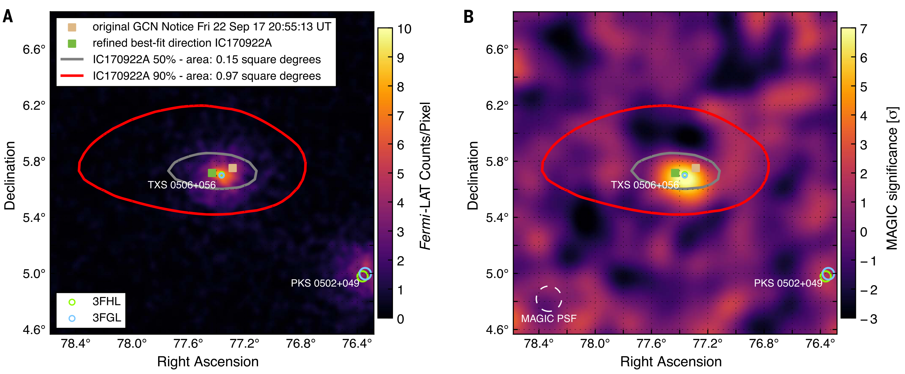
图注：{\(\it\) Left:} Sky position of the neutrino IceCube-170922A in equatorial coordinates overlapped with the counterpart observed by \(\textit{Fermi}-LAT\) (left panel) and MAGIC (right panel) telescopes. The tan square indicates the position reported in the initial alert, and the green square indicates the final best-fitting position from follow-up reconstructions. Gray and red curves show the 50\% and 90\% neutrino containment regions, respectively, including statistical and systematic errors. Image reproduced with permission from \(\citet{aartsen18c},\) copyright by AAAS
来源与置信度：\(arxiv_source\)；high；\(arxiv_source\) / \(Neutrino_DAmmando_FINAL.tex\):figure[1]
Fig02
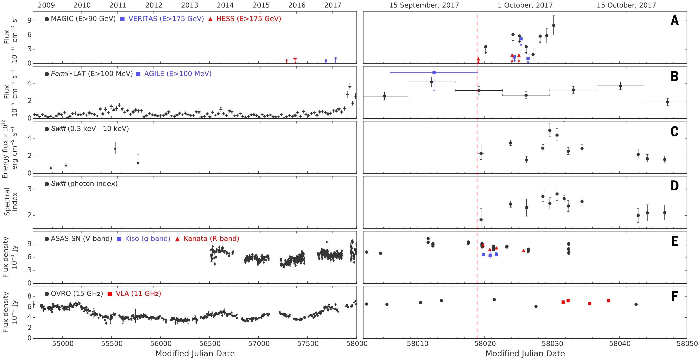
图注：Multi-wavelength observations of TXS\,0506+056 before and after IceCube-170922A including from top to bottom VHE observations by MAGIC, H.E.S.S., and VERITAS; HE observations by \(\textit{Fermi}-LAT\) and AGILE; X-ray observations by \(\textit{Swift}-XRT\); optical observations by ASAS-SN, Kiso/KWFC, and Kanata/HONIR; and radio observations by OVRO and VLA. The red dashed line marks the detection time of the neutrino IceCube-170922A. Image reproduced with permission from \(\citet{aartsen18c},\) copyright by AAAS
来源与置信度：\(arxiv_source\)；high；\(arxiv_source\) / \(Neutrino_DAmmando_FINAL.tex\):figure[2]
Fig03
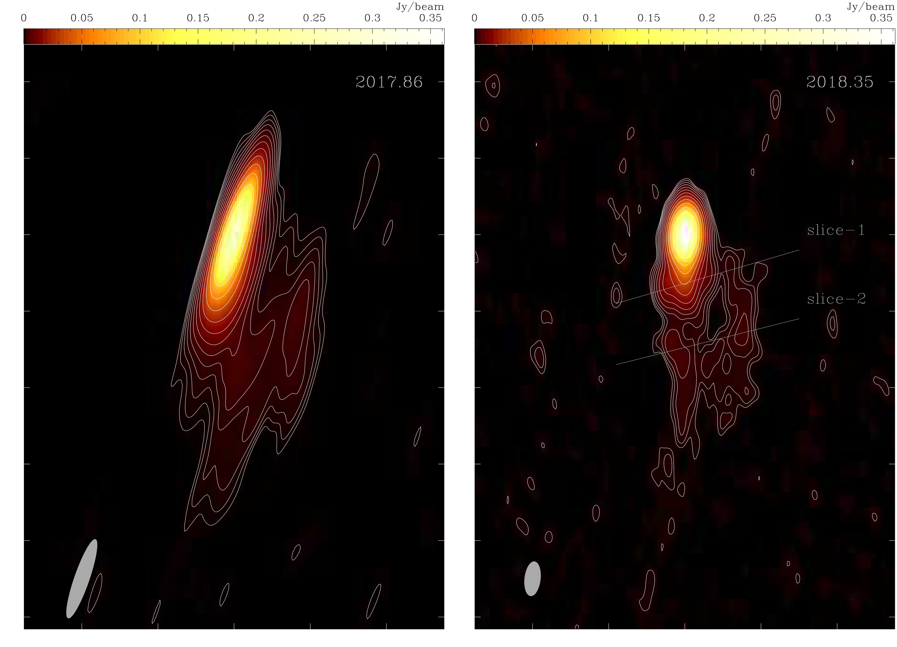
图注：43 GHz VLBA images of TXS\,0506+056 collected on 2017 November 11 {\(\it\) (left panel)} and 2018 May 4 {\(\it\) (right panel)}. Image reproduced with permission from \(\citet{ros20},\) copyright by the author(s)
来源与置信度：\(arxiv_source\)；high；\(arxiv_source\) / \(Neutrino_DAmmando_FINAL.tex\):figure[3]
Fig04
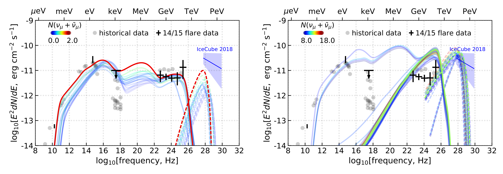
图注：SED and muon neutrino fluxes of TXS\,0506+056 during the 2014--2015 events predicted by the one-zone hadronic model, compared to the single-flavor flux derived by IceCube. In the left panel, the parameters optimized to describe the SED in agreement with the electromagnetic observations fail to explain the neutrino emission, while in the right panel the parameter sets account for the muon neutrinos observed by IceCube, but overshoot the multi-wavelength emission. Historical data are reported in grey. Image reproduced with permission from \(\citet{rodrigues19},\) copyright by AAS
来源与置信度：\(arxiv_source\)；high；\(arxiv_source\) / \(Neutrino_DAmmando_FINAL.tex\):figure[4]
Fig05
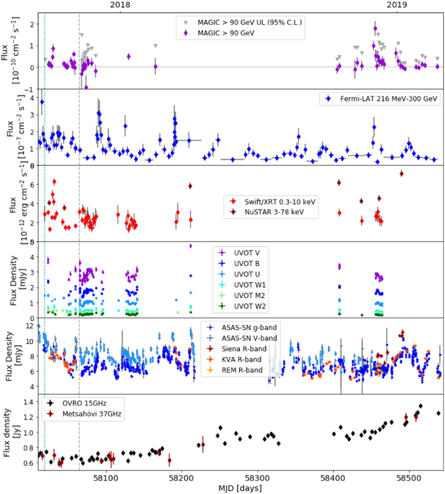
图注：Multi-wavelength light curve of TXS\,0506+056 collected during the 2017-2019 campaign from VHE (top panel) to radio (bottom panel). The plot includes MAGIC, \(\textit{Fermi}-LAT,\) \(\textit{Swift}-XRT,\) \(\textit{NuSTAR},\) \(\textit{Swift}-UVOT,\) ASAS-SN, KVA, REM, Siena, OVRO and Mets{\"a}hovi data. The dotted light blue line shows the arrival time of the IceCube-170922A neutrino. Optical and X-ray fluxes are corrected for Galactic absorption, while MAGIC data are not corrected for pair-production absorption on the extragalactic background light. Image reproduced with permission from \(\citet{acciari22},\) copyright by the author(s)
来源与置信度：\(arxiv_source\)；high；\(arxiv_source\) / \(Neutrino_DAmmando_FINAL.tex\):figure[5]
Fig06
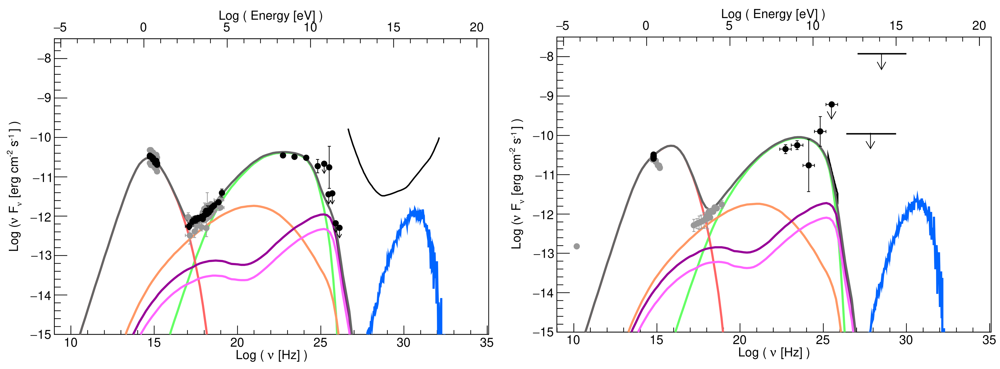
图注：SEDs of TXS\,0506+056 including \(\textit{Fermi}-LAT,\) MAGIC, \(\textit{Swift},\) \(\textit{NuSTAR},\) ASAS-SN, OVRO and Mets{\"a}hovi collected in 2017-2019 campaign and modelled in a lepto-hadronic scenario. The SED representing the low (2018 October) and high (2018 December) state is shown on the left and right panel, respectively. The solid lines represent synchrotron emission by primary electrons (red), IC emission over photons from the jet layer (green), Bethe--Heitler cascade (orange), cascade from $\pi$0 (violet) and $\pi$ $\pm$ (pink) decay, and neutrino emission (blue). In the left plot the IceCube 5-$\sigma$ sensitivity curve for point-source searches is shown, while in the right plot the IceCube and ANTARES flux upper limits (at lower and higher energies, respectively) following the detection of a VHE flare in 2018 December are shown. Image reproduced with permission from \(\citet{acciari22},\) copyright by the author(s)
来源与置信度：\(arxiv_source\)；high；\(arxiv_source\) / \(Neutrino_DAmmando_FINAL.tex\):figure[6]
强相关工作
同一事件/同一源方面，TXS 0506+056 已有两类关键论文：一类是 IceCube-170922A 与 2017 年多波段耀发的关联，另一类是 2014--2015 年历史中微子过量的回溯分析。NGC 1068 则有冰立方关于近邻活动星系中微子证据的点源论文。这些工作是理解本文综述的核心上下文；检索关键词可用“TXS 0506+056 IceCube-170922A multi-messenger”、“TXS 0506+056 neutrino flare 2014 2015”、“NGC 1068 IceCube neutrino emission”。
同类和相反观点方面，应同时读费米耀变体源表与冰立方堆叠限制、射电亮 AGN 相关性研究、隐藏中微子源和弥散伽马背景约束。一个重要张力是：伽马亮透明耀变体模型受到堆叠非检出和伽马背景限制，但射电亮或伽马遮蔽 AGN 仍可能有空间。检索关键词可用“blazar stacking IceCube diffuse neutrino flux”、“gamma-ray constraints on neutrino sources”、“radio bright AGN IceCube correlation”、“hidden cosmic-ray accelerators AGN corona”。
基础理论方面，建议回到宇宙线能量预算、\(p\gamma\) 光介子过程、\(pp\) 介子产生、AGN 喷流辐射模型和多信使级联约束。不要只读个例关联论文，因为许多显著性和能量预算问题只有放到群体模型中才清楚。
同一事件 / 同类源线索：
- https://arxiv.org/abs/2606.30764
- https://arxiv.org/abs/1807.08794
- https://arxiv.org/abs/1807.08816
- https://arxiv.org/abs/2211.09972
相似工作：
基础理论 / 方法工作：
- https://arxiv.org/abs/astro-ph/9701231
- https://arxiv.org/abs/0807.0809
- https://arxiv.org/abs/1311.5238
相反观点 / 张力线索：
4. Parameterizing the Standing Accretion Shock Instability for Inference with Galactic Supernova Neutrino Signals at IceCube
- 来源：arXiv / astro-ph.HE
- 链接：https://arxiv.org/abs/2606.30756v1
- 作者：Dwaipayan Mukherjee, Mohamed Rameez, Basudeb Dasgupta
- 评分：novelty 7/10，importance 7/10，relevance 9/10，final 8.70/10
- 推荐理由：提出用IceCube银河系核心坍缩超新星中微子信号反演SASI参数的参数化框架，属于天体源中微子和多信使超新星物理，相关性高且方法可用。
中文题目：用 IceCube 的银河系超新星中微子信号反推驻立吸积激波不稳定性参数
做了什么：这篇文章提出一种可用于统计推断的驻立吸积激波不稳定性（SASI）中微子调制参数化模型，并把它应用到银河系核心坍缩超新星在 IceCube 中的高统计量事件率信号。作者不试图逐点复现完整数值模拟，而是用频率、峰值时间、持续时间、振幅等少数参数描述 SASI 在中微子计数率中的准周期调制。对若干基准银河系超新星情形，他们发现 IceCube 不仅能识别 SASI 活跃阶段，还可把 SASI 频率约束到亚百分比精度，峰值时间到百分比量级，振幅和持续时间到数百分比到约一成量级。这项工作的重要性在于把“看到中微子光变中的振荡”推进到“用可控参数和似然框架定量测量爆炸流体动力学”。
为什么重要：SASI 是核心坍缩超新星爆炸机制中最直接的多维流体动力学标志之一，但它通常隐藏在复杂的中微子输运、探测器响应和泊松噪声之中。若银河系内发生一次超新星，IceCube 将获得极高统计量的毫秒级总计数率曲线，可能是检验 SASI 的最佳数据之一。本文的关键贡献是把 SASI 信号写成可拟合的低维模板，从而能回答频率、发生时间、持续时间和调制强度能被测到多准，而不是只做事后傅里叶搜索。
理论 / 观测 / 仪器方法价值：对理论而言，这给多维核心坍缩模拟提供了可直接同观测比较的压缩参数：SASI 频率、包络、振幅和时间位置。对观测而言，它说明 IceCube 即使不能逐个重建超新星中微子能量，也能利用巨大计数率和高时间分辨率提取爆炸动力学信息。对方法而言，文章把超新星中微子时间序列问题转化为参数估计和模型比较问题，为未来联合 Hyper-Kamiokande、JUNO、DUNE 等实验做多探测器推断提供了模板。
为什么应该关注：如果下一次银河系超新星来临，真正稀缺的不是“是否有海量中微子事件”，而是如何在有限时间内把事件率曲线翻译成物理结论。本文关心的正是这一步：SASI 是否存在、何时最强、振荡频率是多少、持续多久、调制有多大。这些量直接关系到激波停滞后的吸积流、原中子星半径、爆炸非球对称性和中微子驱动机制，因此值得关注。
展开详细解读：文章讲解、背景、理论、重点章节、图表与相关工作
文章详细讲解
科学问题：核心坍缩超新星在反弹后会经历一个激波停滞和再激发阶段。多维流体模拟显示，停滞激波和内侧吸积流可能出现驻立吸积激波不稳定性，即 SASI。SASI 会使中微子发射随时间出现几十到数百赫兹的准周期调制。问题在于，真实观测中我们看到的是探测器计数率，而不是模拟中的流体变量；如果银河系内发生一次超新星，IceCube 会给出高统计量但能谱信息较弱的总计数率时间序列。本文要解决的是：能否从这类时间序列中定量重建 SASI 的主要物理特征。
作者怎么做：作者提出一个低维 SASI 调制参数化，而不是逐个使用复杂数值模拟波形。基本思路是把未调制的超新星中微子光变作为平滑背景，再叠加一个具有时间包络的准周期振荡项。这个振荡项由频率、峰值时间、持续时间、振幅等参数控制。随后，作者在 IceCube 的超新星探测模式下生成或分析基准银河系超新星信号，利用计数率时间序列的统计涨落建立似然，并对这些 SASI 参数做推断。这样做的好处是可解释性强，也能估计不同参数的可测精度。
关键结果：对文中考虑的基准银河系超新星，IceCube 对 SASI 频率的重建非常强，可达到亚百分比水平；SASI 包络峰值时间可达到百分比量级；振幅和持续时间的约束相对较弱，但仍可达到几百分比到约一成量级。这个结果说明，高时间分辨率和巨大光子倍增管噪声计数统计所带来的优势，足以把 SASI 的准周期信息从泊松噪声和慢变光变中分离出来。特别是频率被约束得最好，因为振荡相位会在多个周期中积累信息；振幅和持续时间较容易同背景光变、包络形状和观测距离产生退化。
局限和下一步：本文的参数化是有意识的简化。真实 SASI 可能频率漂移、相位不连续、方向依赖强，且会同对流、湍流、原中子星振荡以及中微子味转换纠缠。IceCube 的信号主要是总计数率，对中微子能谱和味成分的分辨有限，因此单独用 IceCube 很难完全区分发射端调制、味转换调制和探测器系统效应。下一步自然是把频率漂移、更灵活的包络、不同模拟家族和多探测器联合似然纳入同一框架，并检验该参数化在真实三维模拟波形上的偏差。
关键结果是怎么做出来的
本文最重要的证据链从样本构造开始：作者选取基准银河系核心坍缩超新星情形，并把 SASI 对中微子事件率的影响写成少数参数控制的调制模板。这里的“样本”不是传统天体目录，而是时间分箱后的 IceCube 超新星计数率序列。每个时间 bin 中的观测量是总计数或相对计数率，统计噪声主要可近似为泊松涨落；在大计数数极限下，也可转化为近似高斯的残差分析。
事件数方面，IceCube 对银河系超新星的优势在于总计数率极高，虽然单个相互作用事件不能像水 Cherenkov 或液闪探测器那样逐个做精细能量重建，但全阵列光电倍增管噪声率的集体上升可被毫秒级跟踪。SASI 的频率通常落在几十到数百赫兹，对应周期为数毫秒到数十毫秒，因此时间分辨率和计数统计是关键。作者的参数化正是为这种观测量设计：它不要求每个中微子的能量，而利用总计数率的准周期起伏。
统计上，核心比较是含 SASI 调制模型与无 SASI 或不同 SASI 参数模型之间的似然差。对每个时间 bin，模型给出期望计数率，观测计数围绕该期望作泊松涨落。参数后验或置信区间来自似然面在频率、峰值时间、持续时间、振幅等维度上的形状。频率约束特别强，是因为错误的频率会在多个周期后产生相位累积偏移，使整段残差迅速失配；而振幅和持续时间主要通过包络高度和宽度影响信号，更容易被背景归一化、距离和光变慢变项吸收。
支撑结论的图表应包括：注入或基准 SASI 调制的时间序列、拟合后模型与伪数据的残差、参数后验或轮廓似然图、以及不同超新星距离或不同 SASI 强度下的精度曲线。读者要特别看频率方向的似然是否尖锐、振幅与持续时间是否呈相关椭圆、以及峰值时间是否受包络模型假设控制。如果文中给出无调制模型的残差功率谱或显著性诊断，也应检查峰值是否只在预期 SASI 频段出现，而不是由光变趋势或分箱造成。
系统误差和稳健性方面，关键在于背景噪声、IceCube DOM 计数率稳定性、超新星距离、未调制光变模型、分箱宽度和 SASI 模板形状。一个可靠的结果不应只依赖某个单一注入波形，而应在不同振幅、持续时间、峰值时间和基线光变下保持相似趋势。本文的价值在于展示了这一类参数化推断的可行性，但真实应用时仍需把探测器系统项、模拟波形族和味转换不确定性纳入更完整的层级模型。
展开背景、理论、公式、模型、章节和图表导读
背景知识
核心坍缩超新星的中心问题是：恒星铁核坍缩后形成反弹激波，但激波很快因核解离和中微子冷却而停滞，随后必须被某种机制重新激发才能产生爆炸。主流图像是中微子加热配合多维流体不稳定性，其中 SASI 和中微子驱动对流是两个最常被讨论的多维效应。SASI 不是简单的声波振荡，而是激波半径、后激波吸积流和原中子星附近耦合形成的全局不稳定模式。
历史上，SASI 的观测证据一直是间接的。超新星遗迹的不对称性、脉冲星踢速度、爆炸产物混合都提示核心坍缩高度非球对称，但这些是爆炸后的积分结果。中微子和引力波才可能在爆炸发生时直接记录核心区域动力学。SN 1987A 的中微子事件数太少，无法做 SASI 频段的时间序列分析；下一次银河系超新星才可能真正检验这些多维模拟预言。
IceCube 在超新星中微子观测中的角色有些特殊。它不是为逐个重建几到几十 MeV 中微子而优化的实验，但南极冰中大量数字光学模块的整体噪声计数会因超新星中微子相互作用而同步上升。对银河系超新星，这个总计数率信号有极高统计量和很好的时间分辨率，因此特别适合寻找毫秒到几十毫秒尺度的时间调制。
为什么现在值得重新看：一方面，三维核心坍缩模拟已经能产生越来越可信的中微子光变、SASI 活动和方向依赖；另一方面，SNEWS、IceCube、Super-Kamiokande、JUNO、DUNE、Hyper-Kamiokande 等多探测器时代正在临近。理论预言需要转化成“如果明天发生一颗银河系超新星，我们能测哪些参数”的观测语言。本文正是把 SASI 从模拟术语翻译成可拟合观测模板的尝试。
常见误区包括：第一，把任何中微子光变起伏都称为 SASI；实际上对流、湍流、原中子星振荡和统计涨落都可能产生结构。第二，认为 IceCube 没有低能中微子逐事件能谱就不能做物理；事实上时间域统计量本身就很强。第三，把 SASI 频率当成固定常数；真实超新星中频率可能随激波半径、吸积率和原中子星结构演化。第四，忽略方向效应；SASI 的可见调制强度依赖观测者相对振荡轴的方向。
基础理论 / 方法脉络
从物理图像看，核心反弹后激波停在原中子星外侧，物质仍从外层恒星落入激波并向内吸积。在激波与增益半径之间，平流时间、声波传播时间和中微子加热共同决定流体稳定性。SASI 可理解为激波位移扰动在吸积流中被平流到内边界，再通过声学反馈影响激波位置，从而形成准周期增长或饱和的全局模式。
中微子信号与 SASI 的联系来自两方面。第一，激波和吸积流的周期性运动改变原中子星附近的吸积率和温度分布，进而调制中微子发光率和平均能量。第二，不同方向的发射可能不同，因此观测到的调制强度取决于视线方向。IceCube 看到的不是直接的流体变量，而是由中微子通量、相互作用截面、探测器有效响应和背景计数共同决定的时间序列。
本文的模型假设可以概括为：未调制光变是一个慢变背景，SASI 是叠加其上的有限持续时间准正弦调制。核心参数包括 SASI 频率、包络峰值时间、持续时间和调制振幅。频率控制相位随时间的变化；峰值时间和持续时间控制振荡在何时最可见、可见多久；振幅控制相对计数率起伏大小。这种参数化牺牲了完整流体细节，但换来可解释和可拟合。
观测和统计方法的关键是时间分箱。对每个时间 bin，模型预测一个期望计数数；观测计数围绕它作统计涨落。若每个 bin 的计数足够大，泊松分布可近似为高斯，残差除以标准差后应接近单位方差白噪声。SASI 的存在会在残差或功率谱中留下窄频或有限宽度的峰，但单纯做傅里叶峰搜索不如直接拟合时间域模板，因为后者能同时利用包络、相位和背景信息。
主要退化包括：距离和总发光率归一化退化，未调制光变斜率和低频调制退化，SASI 振幅和观测方向退化，持续时间和包络形状退化，频率漂移和固定频率模板退化。系统误差还包括 IceCube DOM 噪声相关性、死时间校正、分箱选择、背景非平稳性以及中微子味转换。理解这些退化有助于判断本文给出的参数精度是理想化基准还是可直接用于真实事件的预报。
公式与推导
第一步，把超新星中微子在地球处的数通量写成发射光度与距离的关系。若某一味道中微子的 luminosity 为 \(L_\nu(t)\)，平均能量为 \(\langle E_\nu(t)\rangle\)，源距为 \(D\)，则数通量近似为
这里 \(\Phi_\nu(t)\) 是单位面积单位时间的中微子数通量；该式假设各向同性等效发射，真实 SASI 会引入方向依赖。
第二步，IceCube 的超新星信号可写成通量与探测器响应的卷积。对能量 \(E\) 积分后，某时间 \(t\) 的信号计数率可表示为
其中 \(N_{\rm tar}\) 是有效靶数，\(\sigma(E)\) 是相互作用截面，\(\epsilon(E)\) 是探测器有效响应。对 IceCube，总信号常表现为 DOM 噪声率上的小幅集体增加。
第三步，把未调制超新星光变记为 \(R_0(t)\)，SASI 调制作为相对扰动。一个典型参数化可写为
这里 \(A\) 是调制振幅，\(g(t;t_p,\Delta t)\) 是以 \(t_p\) 为峰值、宽度为 \(\Delta t\) 的包络，\(f_{\rm SASI}\) 是 SASI 频率，\(\phi\) 是相位，\(R_b\) 是背景计数率。
第四步，包络函数可选用高斯或类似平滑窗函数，例如
该式不是唯一选择，但它把“何时出现”和“持续多久”压缩为 \(t_p\) 与 \(\Delta t\)。若真实 SASI 有非对称增长和衰减，包络选择会成为系统误差。
第五步，时间分箱后，第 \(i\) 个 bin 的期望计数为
其中 \(\boldsymbol{\theta}=\{A,f_{\rm SASI},t_p,\Delta t,\phi,\ldots\}\)，\(\delta t\) 是 bin 宽。该式把连续时间模型连接到实际观测计数。
第六步，若各 bin 计数服从泊松分布，似然为
其中 \(n_i\) 是观测计数。最大化 \(\mathcal{L}\) 或最小化 \(-2\ln\mathcal{L}\) 可得到 SASI 参数估计。
第七步，在大计数极限下，泊松似然近似为卡方统计量：
残差 \(n_i-\mu_i\) 若仍呈现周期结构，说明模型漏掉了调制、频率漂移或背景非平稳项。
第八步，SASI 检测显著性可用有无调制模型的似然比描述：
其中 \(\hat{\boldsymbol{\theta}}_{\rm SASI}\) 是含调制模型的最佳参数，\(\hat{\boldsymbol{\theta}}_0\) 是无 SASI 模型的最佳参数。若正则条件近似成立，\(\Delta TS\) 可与卡方分布或模拟校准的零假设分布比较。
第九步，频率精度为何很高可由相位累积理解。若真实频率和拟合频率相差 \(\delta f\)，经过有效持续时间 \(T\) 后相位误差为
当 \(\delta\varphi\) 达到可分辨水平时，似然迅速恶化，因此频率误差大致随有效时长和信噪比增加而下降。
第十步，调制信噪比的粗略尺度可写为
它说明振幅 \(A\)、高计数率 \(R_0\)、较长持续时间 \(\Delta t\) 和较低背景都有利于检出 SASI；也说明距离 \(D\) 通过 \(R_0\propto D^{-2}\) 影响参数精度。
模型拟合 / 应用方法
本文或同类工作的拟合对象是时间分箱后的 IceCube 总计数率。参数通常分为三类：慢变超新星背景参数、SASI 调制参数和探测器背景参数。SASI 参数包括 \(f_{\rm SASI}\)、\(t_p\)、\(\Delta t\)、\(A\) 以及可能的相位 \(\phi\)。背景参数可能包括总体归一化、缓慢时间演化和背景噪声率。若背景光变直接取自模拟，也需要考虑模拟到真实源的归一化和时间尺度不确定性。
似然最自然的选择是泊松计数似然。由于 IceCube 的计数通常很大，许多诊断可在高斯近似下理解，但参数置信区间最好仍从泊松似然或蒙特卡洛伪实验校准得到。模型比较可用含 SASI 与不含 SASI 的似然比，也可比较固定频率、频率漂移、不同包络形状等模板。对于真实事件，若要报告显著性，应通过背景-only 或 smooth-light-curve-only 的伪实验来校准试探频率范围带来的 look-elsewhere 效应。
残差诊断非常重要。一个好的 SASI 拟合不仅应提升总似然，还应使时间域残差不再呈现相干振荡；功率谱中相应频段的峰应显著降低。若残差仍有系统性相位漂移，可能说明固定频率模板过于简单；若残差只在 SASI 包络边缘变差，可能说明增长和衰减不对称；若低频残差显著，可能是未调制光变模型不足而非 SASI 物理。
主要参数退化包括 \(A\) 与源距或总发光率归一化的退化，\(\Delta t\) 与包络函数形状的退化，\(t_p\) 与慢变光变斜率的退化，以及 \(A\) 与观测方向的退化。频率通常最稳健，但若真实信号存在频率漂移，固定 \(f_{\rm SASI}\) 的模型可能给出一个有效平均频率并低估系统误差。因此，频率精度的统计误差和模型误差需要分开看。
实际应用中，这一拟合框架可用于快速警报后的在线分析，也可用于离线联合分析。在线阶段可用少参数模板快速判断是否存在 SASI-like 调制；离线阶段可引入多个探测器的响应矩阵、味转换模型、三维模拟先验和探测器系统项。模型失败的典型情形包括：真实信号由多个模式叠加、频率快速漂移、包络强烈非高斯、探测器背景在相近频段非平稳，或超新星太远导致调制信噪比不足。
重点章节 / 结果段落怎么读
数据与基准信号部分应先读。这里决定了作者使用怎样的银河系超新星基准、怎样生成 IceCube 计数率、时间分箱如何设置、背景噪声如何处理。读者应特别关注源距、总计数率、SASI 活动时段和未调制光变的设定，因为这些会直接控制后文参数精度。
SASI 参数化方法部分是全文核心。读者应看清调制项如何写入事件率：是乘性相对调制还是加性调制，包络函数是什么，频率是否固定，相位是否自由，振幅定义为相对事件率还是绝对事件率。这些细节决定了参数的物理解释和同三维模拟输出的可比性。
统计推断部分要重点看似然构造。需要确认作者使用泊松似然、高斯近似还是其他统计量；参数置信区间如何定义；是否使用轮廓似然、MCMC 或 Fisher 信息；有无把背景和光变归一化作为 nuisance parameters。读者还应检查有无报告模型比较或 SASI 检测显著性，而不仅是给出注入参数的重建误差。
主结果部分应按参数逐个读。频率精度、峰值时间精度、持续时间精度和振幅精度的物理原因不同。频率来自相位累积，峰值时间来自包络定位，振幅来自残差高度，持续时间来自有效周期数和包络宽度。若文中比较不同基准模型或距离，应注意这些精度是否按预期随信噪比变化。
讨论和稳健性检验部分决定结论能否外推到真实超新星。重点看作者如何处理真实 SASI 的复杂性：频率漂移、多个模式、方向效应、不同模拟族、IceCube 背景系统误差和中微子味转换。如果这些只被定性讨论，读者应把本文结果理解为“可行性和理想化精度估计”，而非最终观测误差预算。
建议重点查看的图表
-
基准超新星中微子事件率时间序列：看未调制光变的整体形状、SASI 出现的时间窗、调制相对背景的大小，以及时间分箱是否足以解析振荡。
-
SASI 参数化模板示意图：看包络峰值 \(t_p\)、宽度 \(\Delta t\)、频率 \(f_{\rm SASI}\) 和振幅 \(A\) 如何分别影响曲线；特别注意包络函数是否对称。
-
拟合曲线与伪数据残差：看含 SASI 模型是否在振荡阶段显著减少相干残差；残差是否仍有低频趋势或相位漂移。
-
参数后验或轮廓似然二维图：重点看 \(A\) 与 \(\Delta t\)、\(t_p\) 与 \(\Delta t\)、\(f_{\rm SASI}\) 与相位之间是否存在明显相关。
-
频率重建精度图或表：看频率误差是否达到亚百分比，以及该精度是否依赖 SASI 持续时间、振幅或源距。
-
不同基准超新星或不同距离下的性能比较：看参数精度是否按信噪比退化，是否存在某些情形下 SASI 变得不可辨认。
-
模型比较或显著性诊断：若有 \(\Delta TS\)、功率谱或 Bayes factor，检查零假设分布和 look-elsewhere 校正是否清楚。
-
系统误差或稳健性表：看分箱宽度、背景噪声、未调制光变和包络选择变化后，参数估计是否发生偏移。
关键图表逐图导读
图 1：通常应展示超新星中微子事件率随时间的基准曲线。横轴应是反弹后的时间，纵轴是 IceCube 计数率或相对计数率。读者要区分慢变冷却/吸积光变和叠加在其上的 SASI 快速振荡。读图陷阱是把视觉上明显的起伏直接等同于显著检出；真正显著性要看计数噪声和模型比较。
图 2：若展示 SASI 参数化模板，横轴仍为时间，纵轴可能是相对调制因子或总事件率。不同颜色线可能对应不同 \(A\)、\(f_{\rm SASI}\)、\(t_p\) 或 \(\Delta t\)。应看每个参数改变的是相位、包络位置、包络宽度还是振荡高度。陷阱是包络函数的选择会影响持续时间和峰值时间的解释，因此不要把 \(\Delta t\) 直接当成唯一物理寿命。
图 3：拟合结果图通常会把伪数据点、最佳拟合模型线和无 SASI 平滑模型放在一起。横轴是时间，纵轴是分箱计数或归一化残差。关键是看含 SASI 模型是否跟随振荡相位，而不是仅仅提高归一化。下方面板若给残差，应检查残差是否近似无结构；若仍出现相干周期，说明模型不足。
图 4：二维置信区间或后验角图是判断参数可测性的核心。坐标轴可能是 \(f_{\rm SASI}\)、\(t_p\)、\(A\)、\(\Delta t\) 的两两组合，等高线代表 \(1\sigma\)、\(2\sigma\) 或给定置信区间。频率方向若极窄，说明相位信息很强；\(A\) 与 \(\Delta t\) 若拉成长椭圆，说明更长但更弱的调制可部分模仿更短但更强的调制。
图 5：参数重建精度汇总图或表应显示相对误差。读者要看误差是否为统计误差、轮廓似然区间还是伪实验散布。频率亚百分比、峰值时间百分比、振幅和持续时间几百分比到一成的结论，应能在这里找到直接依据。陷阱是不同参数的“百分比”基准不同，例如时间误差相对 \(t_p\) 还是相对 \(\Delta t\)。
图 6：若有距离、振幅或持续时间扫描图，横轴可能是源距、注入振幅或 SASI 持续时间，纵轴是参数误差或检出显著性。应检查趋势是否符合 \(D^{-2}\) 通量缩放和信噪比预期。若远距离处误差突然变大或后验多峰，说明进入弱信号区，不能再简单外推银河系中心情形。
论文原图 / 可嵌入图片
Fig08
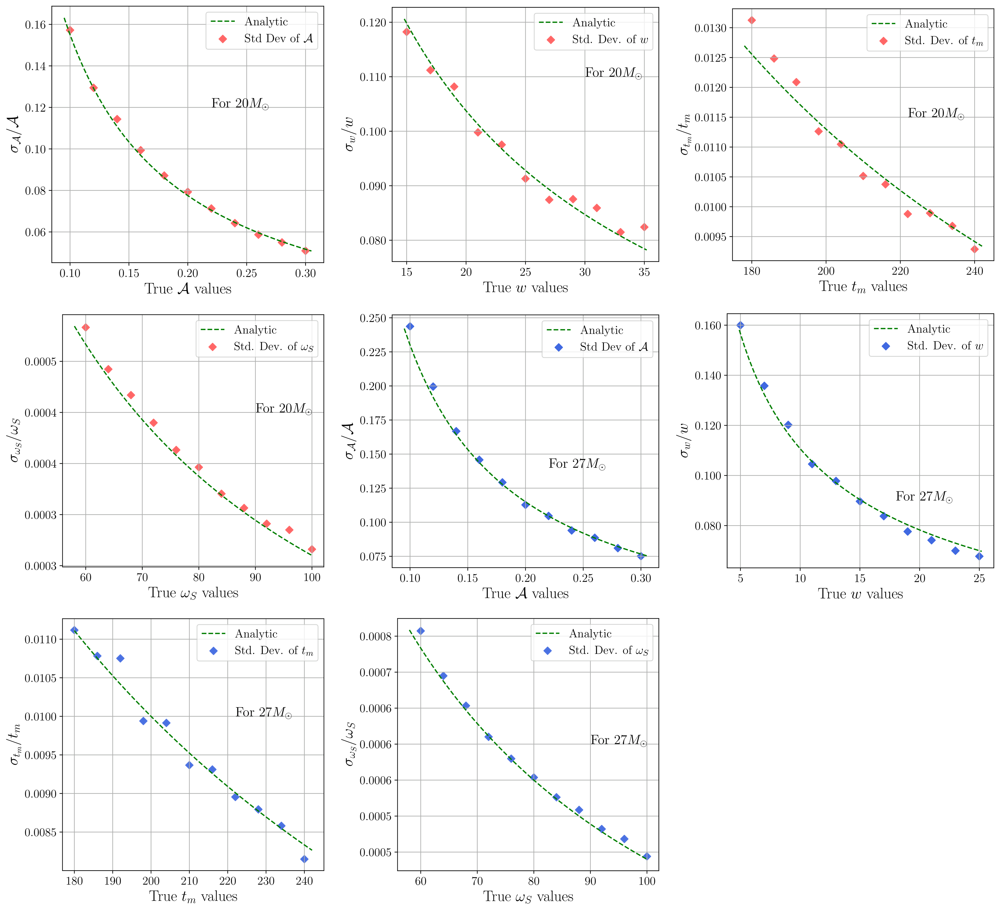
图注：Fractional error in the extracted SASI parameters as a function of the initial parameter value, for 20$\rm{M}_{\odot}$ (top row) and 27$\rm{M}_{\odot}$ (bottom row). Panels from left to right show the amplitude $\mA$, width $w$, max-time $t_m$, and SASI frequency $\os$. Each point represents the standard deviation obtained from synthetic data of the {\(\sc\) IceCube} event rate; the dashed lines are power-law fits. The amplitude, max-time, and frequency follow inverse scaling of the parameters, while the width exhibits $\sigma_w/w \propto 1/\sqrt{w}$.
对应解读：对应“建议重点查看的图表”第5项频率重建精度图/表，以及“关键图表逐图导读”图5关于参数相对误差的解读。
入选理由：这是支撑论文核心定量结论最直接的图：逐项给出振幅、宽度、峰值时间和SASI频率的分数误差，并区分20和27太阳质量两个基准模型。日报中提到的频率亚百分比、峰值时间百分比、振幅和持续时间几百分比到一成的结论，最应由此图验证。
来源与置信度：\(arxiv_source\)；high；\(arxiv_source\) / \(SASI_arxiv_v1.tex\):figure[8]
Fig07
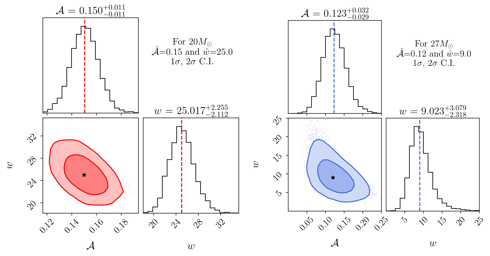
图注：Joint posterior distributions of the extracted SASI amplitude $\mA$ and width $w$ from synthetic noise-added data of the {\(\sc\) IceCube} event rate, for 20$\rm{M}_{\odot}$ (left) with initial values $(\hat{\mA},\hat{w})=(0.15,\,25\,{\rm ms})$ and 27$\rm{M}_{\odot}$ (right) with $(\hat{\mA},\hat{w})=(0.12,\,9\,{\rm ms})$. Contours show $1\sigma$ and $2\sigma$ confidence regions, and the initial values are indicated by a star. $\os$ and $t_m$ have very narrow spreads in their distributions and are not shown here.
对应解读：对应“建议重点查看的图表”第4项参数后验或轮廓似然二维图，以及模型拟合段落中关于A与持续时间退化的讨论。
入选理由：该图直接展示IceCube合成噪声数据下SASI振幅A与宽度w的联合后验和1σ/2σ置信区间，且标出注入值。它最能说明振幅与持续时间的可测性和相关性，是理解参数退化的关键图。
来源与置信度：\(arxiv_source\)；high；\(arxiv_source\) / \(SASI_arxiv_v1.tex\):figure[7]
Fig03
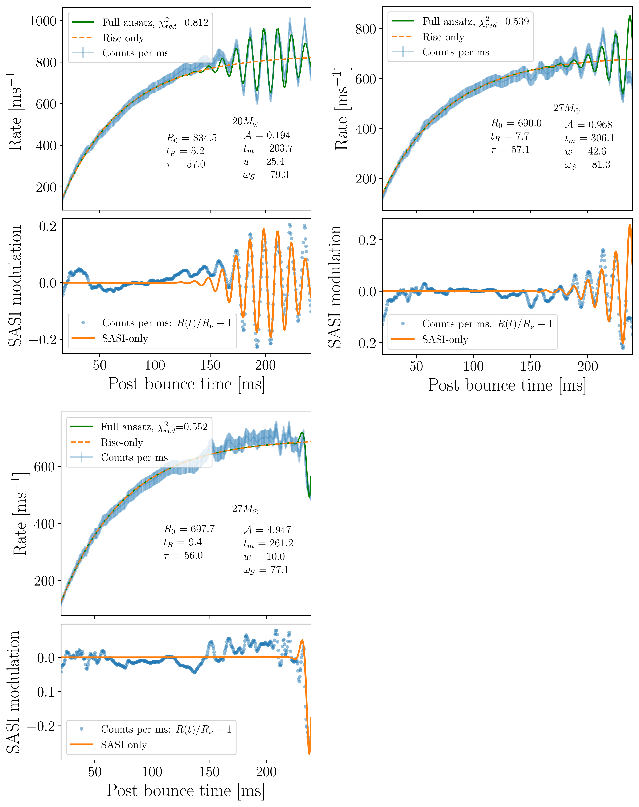
图注：Examples of good and bad fits. We see a good fit for 20$\rm{M}_{\odot}$ (a), and two poor fits for 27$\rm{M}_{\odot}$ (b) and (c). In each panel, the upper plot shows the full ansatz overlaid on the binned simulation data, shown as blue points with $\sqrt{N^{\rm bin}_{\rm count}}$ uncertainties, and the lower plot shows the isolated SASI-modulation $R(t)/R_\nu - 1$. Best-fit parameters are listed in each panel.
对应解读：对应“建议重点查看的图表”第3项拟合曲线与伪数据残差，以及“关键图表逐图导读”图3关于好/坏拟合的讨论。
入选理由：图中把完整拟合ansatz叠加在带误差的分箱模拟数据上，并在下方面板给出分离出的SASI调制，还列出最佳拟合参数。它直接展示模型是否能跟随振荡相位，并通过好拟合与坏拟合对比揭示固定模板的局限。
来源与置信度：\(arxiv_source\)；high；\(arxiv_source\) / \(SASI_arxiv_v1.tex\):figure[3]
Fig02
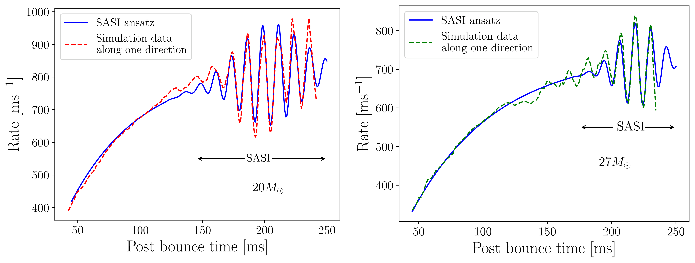
图注：Reconstructed SASI waveforms from Eq.\,\(\ref{eq:fitting_function_eqn}\) (solid) compared with simulation data (dashed) along one representative line of sight, for 20$\rm{M}_{\odot}$ (top) and 27$\rm{M}_{\odot}$ (bottom) stars.
对应解读：对应“建议重点查看的图表”第2项SASI参数化模板示意图，以及“关键图表逐图导读”图2关于参数化波形的说明。
入选理由：该图比较由参数化公式重构的SASI波形与数值模拟数据，是验证低维SASI模板是否能捕捉真实准周期调制的核心依据。它比单纯的输入光变更直接对应本文方法学。
来源与置信度：\(arxiv_source\)；high；\(arxiv_source\) / \(SASI_arxiv_v1.tex\):figure[2]
Fig04
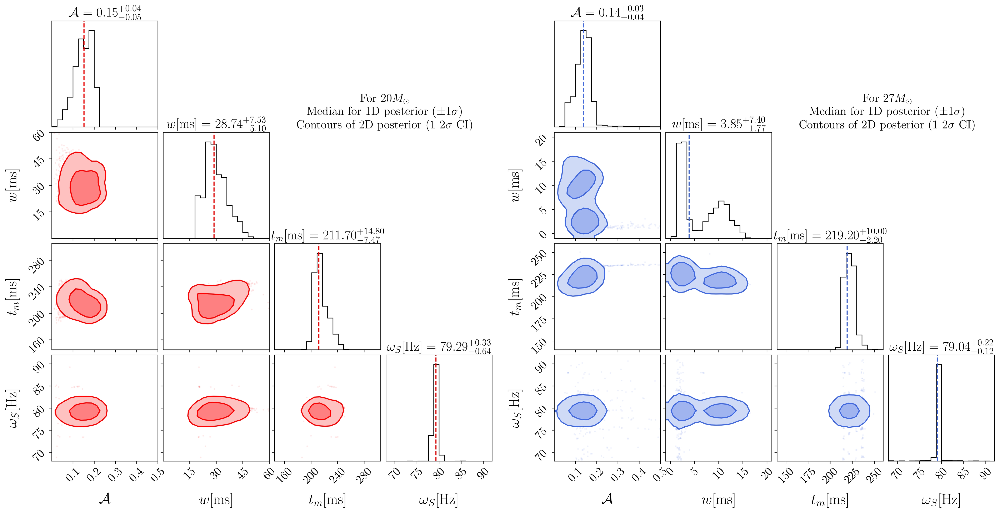
图注：Corner plots showing the joint and marginalized posterior distributions of the SASI parameters ($\mA,\,w,\,t_m,\,\os$) across accepted directions, for the 20$\rm{M}_{\odot}$ case (top) with 7658 accepted directions and the 27$\rm{M}_{\odot}$ case (bottom) with 4533 accepted directions. The contours enclose the 1$\sigma$ and 2$\sigma$ regions, and the median values with 1$\sigma$ uncertainties are indicated. The frequency $\os$ is sharply peaked near 79\;Hz in both models. Other features of the distributions are discussed in the text.
对应解读：对应“建议重点查看的图表”第4项二维置信区间或后验角图，以及日报中关于频率、峰值时间、振幅和宽度相关性的解读。
入选理由：这是包含A、w、t_m和SASI频率的完整corner plot，显示边缘分布与1σ/2σ联合轮廓。尤其频率在约79 Hz附近尖锐聚集，能直观支持频率最稳健、其他参数分布更宽的结论。
来源与置信度：\(arxiv_source\)；high；\(arxiv_source\) / \(SASI_arxiv_v1.tex\):figure[4]
Fig01
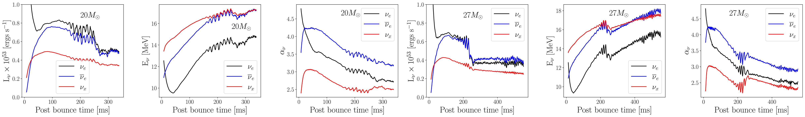
图注：The panels show the luminosity (left), mean energy (middle), and pinching parameter $\alpha$ (right) for $\nu_e$, $\overline{\nu}_e$, and $\nu_x$ energy spectra as functions of post-bounce time, for the 20$\rm{M}_{\odot}$ (top) and 27$\rm{M}_{\odot}$ (bottom) stars along the \(\emph{violet}\) direction of Ref.~\(\cite{Tamborra:2014hga}\) (their Fig.\,6). The $\nu_e$ luminosity peaks at $\sim 3\times10^{53}\;{\rm erg\;s}^{-1}$ during the neutronization burst, while $\overline{\nu}_e$ and $\nu_x$ luminosities rise later during the accretion phase. The quasi-periodic SASI-modulations are visible in all three quantities in the time window $t_{\rm pb}\sim$150-250\;ms for both cases.
对应解读：对应“建议重点查看的图表”第1项基准超新星中微子时间序列，以及“关键图表逐图导读”图1关于慢变光变和SASI时间窗的说明。
入选理由：虽然该图展示的是模拟输入的中微子光度、平均能量和pinching参数而非IceCube计数率，但它清楚标出150–250 ms附近的SASI准周期调制，并给出20和27太阳质量模型的物理背景，是理解后续事件率拟合的基础。
来源与置信度：\(arxiv_source\)；high；\(arxiv_source\) / \(SASI_arxiv_v1.tex\):figure[1]
强相关工作
这篇工作属于“同类源/同类信号”研究，而非某个已发生命名事件的后续论文。应把它放在三条文献线索中阅读：第一是 SASI 的基础理论和数值模拟，包括平流-声学循环、二维/三维核心坍缩模拟中的激波振荡和中微子发射调制；第二是超新星中微子探测，尤其 IceCube 总计数率方法；第三是从时间序列中提取准周期信号的统计方法。检索关键词可用 “standing accretion shock instability neutrino signal”, “SASI IceCube supernova neutrinos”, “core-collapse supernova neutrino time modulation”, “IceCube supernova data acquisition”。
相近工作通常会直接使用三维模拟中微子光变来预测 IceCube、Hyper-Kamiokande、JUNO 或 DUNE 的可见性；本文的区别是把调制压缩成可推断参数。这与传统功率谱搜索有张力也有互补：功率谱方法较少依赖模板，但参数解释较弱；时间域模板拟合更高效，却可能受模板偏差影响。读者还应关注与中微子味转换、集体振荡和地球物质效应相关的研究，因为这些效应可能改变不同探测器看到的调制幅度。
同一事件 / 同类源线索：
- https://arxiv.org/abs/2606.30756
- https://arxiv.org/pdf/2606.30756
- https://icecube.wisc.edu/science/research/supernovae/
相似工作：
基础理论 / 方法工作：
- https://arxiv.org/abs/astro-ph/0612072
- https://arxiv.org/abs/astro-ph/0612460
- https://arxiv.org/abs/1606.09550
相反观点 / 张力线索：
（未提供）
5. Radiation-pressure instability is an artifact of constant-$α$ closure
- 来源：arXiv / astro-ph.HE
- 链接：https://arxiv.org/abs/2606.31998v1
- 作者：M. H. Naddaf, M. Ghasemnezhad, H. Ghanbarnejad, D. Hutsemékers, B. Czerny
- 评分：novelty 8/10，importance 8/10，relevance 7/10，final 8.65/10
- 推荐理由：提出常数α闭包导致辐射压不稳定的解释，并给出可稳定薄盘的α(X)条件；对AGN/XRB吸积盘理论和变源解释有较大影响，虽非伽马射线主题但属核心高能天体物理。
中文题目：辐射压不稳定性可能是常数 \(\alpha\) 闭合的人为产物
做了什么：这篇论文重新检查标准 Shakura-Sunyaev 薄盘中最经典的问题之一：辐射压主导区为什么会出现热不稳定和黏滞不稳定。作者的核心主张很直接：不稳定并非由辐射压本身必然导致，而是来自把湍流角动量输运效率 \(\alpha\) 强行设为与热力学状态无关的常数。通过要求稳态薄盘在 \(\dot M\)--\(\Sigma\) 平面中热稳定且单值，作者推导出黏滞参数必须随 \(X\equiv P_{\rm gas}/P_{\rm rad}\) 响应，并满足 \(\eta_{\rm x}\equiv d\ln \alpha_{\rm x}/d\ln X>4/7\)。采用这种 \(\alpha_{\rm x}=\alpha(X)\) 后，辐射压主导区的经典不稳定分支消失，盘的面密度和光深在内区升高，而有效温度剖面基本保持标准薄盘形式。
为什么重要：辐射压不稳定长期被当作标准薄盘理论的内禀预言，并被用于解释 X 射线双星和活动星系核中的大振幅吸积态变化。但许多观测对象并没有表现出理论预期的强烈极限环，这一直是薄盘理论和观测之间的张力。本文的重要性在于，它把问题从“辐射压是否会毁掉薄盘”转向“常数 \(\alpha\) 闭合是否自洽”，这会影响我们怎样理解吸积盘稳定性、AGN 连续谱尺寸、混响时滞以及吸积态依赖的变率。
理论 / 观测 / 仪器方法价值：理论价值在于给出一个由薄盘方程内部一致性导出的黏滞闭合约束，而不是事后加入磁压、风、径向平流或任意应力处方。观测价值在于，新的 \(\alpha(X)\) 会提高内盘 \(\Sigma\) 和 \(\tau\)，改变热时标和流入时标，因而可能改变对 AGN 微引力透镜尺寸、连续谱混响时滞、X 射线双星软态稳定性和准周期变率的解释。方法价值在于提醒读者：很多“标准盘预言”其实依赖闭合关系，而闭合关系不是守恒律。
为什么应该关注：如果你使用薄盘模型解释 AGN 或 X 射线双星的光谱、时滞、变率，本文值得关注，因为它质疑了一个被默认使用半个世纪的假设：\(\alpha\) 可以在气体压主导区和辐射压主导区取同一常数。即使你不同意作者的具体 \(\alpha(X)\) 形式，这篇文章也迫使我们把磁流体湍流闭合、盘的热稳定性和可观测的时间尺度放在同一个框架里重新检验。
展开详细解读：文章讲解、背景、理论、重点章节、图表与相关工作
文章详细讲解
科学问题：标准 \(\alpha\)-盘把湍流应力写成总压强的一个固定比例，通常为 \(T_{r\phi}=\alpha P\)，其中 \(P=P_{\rm gas}+P_{\rm rad}\)。在辐射压主导区，经典推导给出热不稳定和黏滞不稳定：升温会提高辐射压，从而提高应力和耗散，耗散又进一步升温；在 \(\dot M\)--\(\Sigma\) 曲线上则出现多值或负斜率分支。问题是，这个结论究竟是辐射压不可避免的物理结果，还是常数 \(\alpha\) 闭合在跨越不同热力学区域时造成的假象。
作者怎么做：本文没有引入新的能量源、磁压支撑、强盘风或径向平流，而是在稳态薄盘方程内部重新审视闭合条件。作者定义 \(X\equiv P_{\rm gas}/P_{\rm rad}\)，允许 \(\alpha\) 成为 \(X\) 的函数，即 \(\alpha_{\rm x}=\alpha(X)\)。然后要求稳态薄盘在 \(\dot M\)--\(\Sigma\) 平面中保持单值，并且局部热平衡分支满足稳定性条件。由此得到一个必要的应力响应条件：\(\eta_{\rm x}\equiv d\ln\alpha_{\rm x}/d\ln X>4/7\)。这意味着当盘从气体压主导过渡到辐射压主导时，输运效率不能保持不变，而必须对热力学状态有足够强的响应。
关键结果：采用满足上述条件的 \(\alpha(X)\) 后，经典辐射压主导区的不稳定分支被移除，稳态解在全局上变得平滑且单值。值得注意的是，有效温度剖面仍接近标准薄盘的 \(T_{\rm eff}(R)\) 标度，因为该剖面主要由引力能释放率决定，而不是由 \(\alpha\) 直接决定；但盘的内部结构显著改变，尤其是内区面密度 \(\Sigma\) 和光学厚度 \(\tau\) 增大。这会拉长热时标和径向流入时标，使盘更容易出现吸积态依赖的缓慢变率，而不是剧烈的辐射压极限环。
局限和下一步：本文的结论依赖薄盘近似、局部闭合和稳态结构方程。它指出常数 \(\alpha\) 不自洽，但并没有从三维辐射磁流体湍流第一性原理唯一推导出 \(\alpha(X)\) 的函数形状。下一步需要用辐射 MHD 模拟检验 \(\alpha\) 是否确实随 \(P_{\rm gas}/P_{\rm rad}\) 按类似强度响应；还需要将新的盘结构接入大气辐射转移模型，重新计算 AGN 连续谱、色温修正、微透镜尺寸和连续谱混响时滞。对观测而言，真正的检验不是简单看是否有极限环，而是比较同一质量、吸积率和倾角下的 \(\Sigma\)、\(\tau\)、谱形、时滞和变率时标是否同时改善。
关键结果是怎么做出来的
本文最重要的证据链从稳态薄盘的解结构开始，而不是从某一个观测样本开始。作者考察的是标准薄盘方程族在给定黑洞质量、半径、吸积率和边界条件下的局部热平衡解。关键诊断平面是 \(\dot M\)--\(\Sigma\)：如果同一 \(\Sigma\) 对应多个 \(\dot M\)，或平衡分支出现热不稳定段，那么经典辐射压不稳定就会出现。这里的“样本量”不是天体个数，而是一组覆盖气体压主导区、过渡区和辐射压主导区的盘环局部解。
统计显著性在本文中不是主要语言，因为这是一篇理论闭合分析。核心判断来自解析稳定性条件和数值构造的稳态分支比较。作者把 \(\alpha\) 写成 \(X\equiv P_{\rm gas}/P_{\rm rad}\) 的函数，并考察 \(\eta_{\rm x}=d\ln\alpha_{\rm x}/d\ln X\) 对 \(\dot M\)--\(\Sigma\) 曲线形状的影响。若 \(\eta_{\rm x}\leq 4/7\)，不稳定或多值行为不能被一般地排除；若 \(\eta_{\rm x}>4/7\)，热稳定和单值性可以在辐射压主导转变中得到恢复。
支撑结论的关键图表应是几类：第一，常数 \(\alpha\) 与 \(α(X)\) 处方下的 \(\dot M\)--\(\Sigma\) 局部平衡曲线对比；第二，径向盘结构中 \(\Sigma(R)\)、\(\tau(R)\)、\(X(R)\) 和 \(T_{\rm eff}(R)\) 的比较；第三，热时标和流入时标随半径的变化；第四，不同 \(α(X)\) 斜率或归一化下稳定性的稳健性图。如果论文给出稳定区间或参数扫描，读者应重点看稳定边界是否真的贴近 \(4/7\)，以及是否只在某些特殊半径或吸积率下成立。
系统误差和模型依赖主要来自三个方面。第一，薄盘假设要求几何厚度 \(H/R\ll 1\)、光学厚、局部辐射冷却有效；一旦进入高 \(\dot M\) 的 slim disk 区域，径向平流会改变热平衡。第二，应力是否与总压、气体压、磁压或某种滞后变量相关，在真实 MHD 湍流中并不一定能被单变量 \(X\) 完全捕捉。第三，垂直结构和色温修正会影响从内部结构到观测连续谱的映射。因此，本文的稳健性不应理解为“已经证明真实盘稳定”，而应理解为“经典不稳定不是守恒律必然结论，而是闭合选择的结果”。
模型比较上，本文最有力之处是保持标准有效温度剖面同时改变内部 \(\Sigma\) 和 \(\tau\)。这避免了许多替代模型常见的问题：为了稳定盘而大幅改变辐射通量，从而破坏标准多温黑体谱的一阶成功。读者应检查作者是否展示了在相同 \(M\)、\(\dot M\)、\(R\) 下，\(T_{\rm eff}\) 基本不变但 \(\Sigma\) 与时标显著变化；这正是本文把“能量释放”与“角动量输运闭合”区分开的关键证据。
展开背景、理论、公式、模型、章节和图表导读
背景知识
研究对象是几何薄、光学厚的黑洞吸积盘。标准图像中，物质通过湍流或磁湍流输运角动量向内吸积，引力势能以局部黏滞耗散的形式转化为热辐射。Shakura-Sunyaev 模型把复杂湍流输运压缩成一个无量纲参数 \(\alpha\)，使得薄盘理论具有解析可用性，并成为解释 X 射线双星、AGN 光学紫外连续谱和黑洞增长的基础工具。
历史问题是辐射压主导区的稳定性。经典标准盘若采用 \(T_{r\phi}=\alpha P_{\rm tot}\) 且 \(\alpha\) 为常数，在内盘高温高辐射压区域会出现热不稳定：扰动升温后辐射压上升，应力增强，耗散加剧，导致 runaway。Lightman-Eardley 黏滞不稳定则表现在 \(\dot M\)--\(\Sigma\) 曲线出现负斜率，面密度扰动会被放大。这些结论成为很多极限环模型的理论基础。
观测背景却并不完全支持简单的强不稳定图像。某些源，例如 GRS 1915+105，确实显示大振幅复杂变率，常被讨论为辐射压极限环候选；但大量高软态 X 射线双星和许多高吸积率 AGN 并没有普遍表现出标准模型预言的剧烈循环。AGN 盘还存在光学连续谱尺寸偏大、混响时滞偏长、色温修正和盘大气模型不确定性等问题。这些张力提示，标准薄盘的一阶能量释放可能正确，但内部结构或输运闭合可能不完整。
为什么现在值得重看？一方面，辐射 MHD 数值模拟已经显示应力、磁压、辐射压、热扰动之间的关系远比常数 \(\alpha\) 复杂；另一方面，时域巡天、连续谱混响和微引力透镜正在把盘的空间尺度与时间尺度测得更精细。过去 \(\alpha\) 被当作方便的拟合常数，现在它需要被视为有效闭合函数，其状态依赖性可能直接进入可观测量。
常见误区之一是把“标准 \(\alpha\)-盘的辐射压不稳定”说成“辐射压本身必然不稳定”。实际上，不稳定判据依赖应力如何响应压强和温度。另一个误区是以为改变 \(\alpha\) 一定会改变 \(T_{\rm eff}(R)\) 并破坏标准盘谱；在稳态薄盘中，辐射通量主要由 \(M\)、\(\dot M\) 和 \(R\) 决定，\(\alpha\) 更直接地影响 \(\Sigma\)、\(H\)、\(\tau\) 和时间尺度。本文正是利用了这一区分。
基础理论 / 方法脉络
基础物理图像从角动量守恒开始。盘内气体若要向内落入黑洞，必须把角动量向外输运。真实输运机制通常归因于磁旋转不稳定驱动的 MHD 湍流，但一维薄盘模型无法直接解析湍流，因此用有效应力 \(T_{r\phi}\) 表示。标准闭合令 \(T_{r\phi}=\alpha P\)，其中 \(P\) 常取总压 \(P_{\rm gas}+P_{\rm rad}\)。这个闭合不是基本物理定律，而是把未知湍流响应参数化。
薄盘热平衡由加热率和冷却率相等给出。黏滞加热 \(Q^+\) 来自差分旋转被应力耗散，辐射冷却 \(Q^-\) 则由光学厚盘中辐射扩散带走。若局部温度扰动使 \(Q^+\) 增长快于 \(Q^-\)，热扰动会放大，盘不稳定；若 \(Q^-\) 对温度更敏感，则扰动被阻尼。常数 \(\alpha\) 加总压应力在辐射压主导区使 \(Q^+\) 对温度响应过强，这是经典不稳定的来源。
本文的关键变量是 \(X\equiv P_{\rm gas}/P_{\rm rad}\)。当 \(X\gg 1\) 时，盘为气体压主导；当 \(X\ll 1\) 时，盘为辐射压主导。作者不是把应力改成气体压比例，也不是引入任意磁压项，而是允许 \(\alpha\) 随 \(X\) 改变：\(\alpha_{\rm x}=\alpha(X)\)。这样一来，盘进入辐射压主导状态时，湍流输运效率可以降低或以特定方式响应，从而削弱加热对温度扰动的正反馈。
观测或模型诊断上，\(T_{\rm eff}(R)\) 与 \(\Sigma(R)\) 必须分开看。前者控制多温黑体连续谱的一阶形状，后者和 \(\tau(R)\) 决定垂直结构、色温修正、热化深度以及时间尺度。本文结论如果正确，许多过去用标准盘谱解释时看似矛盾的现象，可能来自内部结构而非能量释放率错误。
主要退化关系包括 \(\alpha\)、\(\dot M\)、黑洞质量 \(M\)、倾角 \(i\)、色温修正 \(f_{\rm col}\)、内边界条件和外部照射之间的退化。仅靠光学紫外谱很难唯一反推出 \(\alpha(X)\)，因为 \(T_{\rm eff}\) 变化很小；更有力的检验需要结合谱形、连续谱混响时滞、微透镜尺寸、X 射线再处理和长期变率时标。
公式与推导
第一步是薄盘角动量输运的有效闭合。标准模型把湍流应力写为
这里 \(T_{r\phi}\) 是径向-方位向应力，\(\alpha\) 是无量纲输运效率，\(P_{\rm gas}\) 和 \(P_{\rm rad}\) 分别为气体压和辐射压。本文质疑的是 \(\alpha\) 为常数这一闭合，而不是角动量守恒本身。
第二步定义控制热力学状态的压强比
当 \(X\ll 1\) 时为辐射压主导区，当 \(X\gg 1\) 时为气体压主导区。\(\alpha_{\rm x}\) 的状态依赖性用对数斜率表示为
这个量衡量盘从气体压主导走向辐射压主导时，应力闭合对热力学状态的响应强度。
第三步写出稳态薄盘的局部通量。忽略内边界细节时，单位表面辐射通量满足
其中 \(M\) 是黑洞质量，\(\dot M\) 是吸积率，\(R\) 是半径，\(f(R)=1-\sqrt{R_{\rm in}/R}\) 表示内边界修正。这个式子说明 \(T_{\rm eff}(R)\) 主要由能量释放率决定，因此改变 \(\alpha(X)\) 未必显著改变有效温度剖面。
第四步连接冷却率与垂直扩散。光学厚近似下可写作
其中 \(T_{\rm c}\) 是中平面温度，\(\kappa\) 是不透明度，\(\Sigma\) 是面密度。这个式子显示，在同一中平面温度下，更大的 \(\Sigma\) 会增加扩散时间并改变热响应。
第五步写出黏滞加热的标度。对 Kepler 盘，局部耗散可表示为
其中 \(\nu\) 是有效运动黏滞系数，\(\Omega_{\rm K}=\sqrt{GM/R^3}\) 是 Kepler 角速度。若用 \(\nu\sim \alpha_{\rm x} c_{\rm s}H\)，则
其中 \(c_{\rm s}\) 是声速，\(H\sim c_{\rm s}/\Omega_{\rm K}\) 是盘厚。于是 \(Q^+\) 对温度的响应不仅来自压强，也来自 \(\alpha_{\rm x}(X)\)。
第六步是热稳定性判据。在固定 \(\Sigma\) 的局部热扰动下，稳定要求冷却对温度的对数响应强于加热：
常数 \(\alpha\) 的辐射压主导解通常违反这个不等式。若 \(\alpha_{\rm x}\) 随 \(X\) 变化，右侧会多出与 \(\eta_{\rm x}\) 有关的项。
第七步是本文核心条件。要求稳态薄盘在 \(\dot M\)--\(\Sigma\) 平面热稳定且单值，作者得到必要条件
物理含义是：当辐射压增强、\(X\) 变小时，输运效率必须以足够强的状态依赖性调整，避免加热率对温度扰动产生过强正反馈。
第八步看时间尺度。热时标和流入时标常写为
若 \(\alpha_{\rm x}\) 在辐射压主导内区降低或使 \(\Sigma\) 增大，则 \(t_{\rm th}\) 和 \(t_{\rm in}\) 都会变长。这正是本文联系吸积态依赖变率、AGN 盘尺寸和混响时滞的关键物理通道。
模型拟合 / 应用方法
本文本身更像理论结构和闭合条件分析，而不是传统意义上的观测拟合论文。但它直接改变今后拟合薄盘数据时应使用的参数化。常规拟合通常把 \(M\)、\(\dot M\)、\(i\)、\(a_\ast\)、\(\alpha\)、色温修正 \(f_{\rm col}\) 和消光作为参数，其中 \(\alpha\) 常被固定或只作为弱影响量处理。若采用本文思想，\(\alpha\) 应替换为 \(\alpha(X)\) 的函数族，例如由归一化、过渡位置和斜率 \(\eta_{\rm x}\) 控制。
拟合量不应只包括连续谱能量分布。因为 \(T_{\rm eff}(R)\) 变化不大，单独的光学紫外谱对 \(\alpha(X)\) 约束会很弱。更有效的数据组合包括：多波段连续谱、波长依赖半径 \(R(\lambda)\)、连续谱混响时滞 \(\tau(\lambda)\)、微透镜半光半径、长期变率功率谱，以及 X 射线双星中从软态到中间态的热时标。模型残差应重点看波长依赖斜率是否正确、时滞归一化是否偏大或偏小、以及变率特征频率是否随吸积率按预期移动。
似然函数可由多个观测通道相加构成。例如谱通量使用高斯或协方差矩阵似然，时滞使用 \(\chi^2\) 或层级模型，微透镜尺寸使用透镜模型给出的后验作为外部约束。关键是系统误差不能当作独立白噪声：AGN 内禀变率、宿主星光、尘埃消光、宽线污染、再处理几何、倾角和黑洞质量误差都会与 \(\alpha(X)\) 退化。
最重要的参数退化是 \(\alpha(X)\) 与 \(\dot M\)、\(f_{\rm col}\)、垂直大气结构和外部照射之间的退化。更大的 \(\Sigma\) 与 \(\tau\) 可能改变色温修正，也可能改变热化深度，使谱看起来像更大的盘；但类似效应也可由散射大气、盘风或非局部再处理造成。因此，若要声称本文闭合优于常数 \(\alpha\)，必须展示它能同时改善尺寸、时滞和变率，而不是只调好其中一个量。
模型可能失败的地方也很清楚。如果三维辐射 MHD 模拟发现应力主要由磁压或净磁通控制，而与 \(X=P_{\rm gas}/P_{\rm rad}\) 没有单值关系，那么本文的单变量 \(\alpha(X)\) 只能算有效近似。若观测显示某些高吸积率盘确有标准辐射压极限环，且时间尺度和振幅与常数 \(\alpha\) 模型一致，则本文闭合也需要引入源到源差异，例如净磁通、盘风或垂直能量输运。
重点章节 / 结果段落怎么读
-
引言和问题设定：读者应关注作者如何区分“辐射压导致不稳定”和“常数 \(\alpha\) 闭合导致不稳定”。这一部分的重点不是重述标准盘，而是指出经典结论依赖应力对热扰动的响应假设。
-
稳态薄盘方程与 \(X\) 参数化：这一部分应仔细读定义，尤其是 \(X\equiv P_{\rm gas}/P_{\rm rad}\)、\(\alpha_{\rm x}=\alpha(X)\) 和 \(\eta_{\rm x}=d\ln\alpha_{\rm x}/d\ln X\)。要确认作者是否保持了标准薄盘的能量守恒和有效温度剖面，而只是改变输运闭合。
-
稳定性和单值性推导：这是论文核心。读者应检查 \(\eta_{\rm x}>4/7\) 的推导条件，包括是否固定 \(\Sigma\)、是否采用电子散射不透明度、是否忽略平流、以及这个条件是必要还是充分。这里决定了本文论点的强弱。
-
全局盘结构结果：重点看常数 \(\alpha\) 与 \(\alpha(X)\) 模型在 \(\Sigma(R)\)、\(\tau(R)\)、\(H/R\)、\(T_{\rm eff}(R)\) 和 \(\dot M\)--\(\Sigma\) 平面中的差异。作者的关键说法是内区结构显著改变，但有效温度剖面保留标准形式。
-
讨论和观测含义：这一部分连接 AGN 盘张力、微引力透镜尺寸、连续谱混响时滞和吸积态依赖变率。读者应把这些视为可检验预测或动机，而不是本文已经完成的观测证明。
建议重点查看的图表
-
\(\dot M\)--\(\Sigma\) 平衡曲线：看常数 \(\alpha\) 是否出现 S 形或多值分支，以及 \(\alpha(X)\) 是否真的使曲线单值。关键是斜率和转折点，而不只是曲线外观。
-
\(\eta_{\rm x}\) 稳定性边界图：检查稳定区域是否以 \(\eta_{\rm x}>4/7\) 为清晰分界，并看边界是否依赖半径、吸积率、不透明度或黑洞质量。
-
径向 \(\Sigma(R)\) 和 \(\tau(R)\) 对比：重点看辐射压主导内区的面密度和光深增加多少，因为这直接影响热时标、流入时标和辐射转移。
-
\(T_{\rm eff}(R)\) 对比：确认新闭合是否保留标准有效温度剖面。如果 \(T_{\rm eff}\) 变化很小而内部结构变化大，这是本文的核心可用性来源。
-
时间尺度图：看 \(t_{\rm th}(R)\) 和 \(t_{\rm in}(R)\) 在 \(\alpha(X)\) 下如何变长，以及这些时标是否落在 AGN 或 X 射线双星可观测变率范围内。
-
参数扫描或稳健性表：检查不同 \(\alpha(X)\) 函数形式、归一化、不透明度假设和边界条件下结论是否保持。
关键图表逐图导读
图 1：应重点寻找 \(\dot M\)--\(\Sigma\) 曲线。横轴通常是面密度 \(\Sigma\)，纵轴是吸积率 \(\dot M\) 或归一化吸积率。常数 \(\alpha\) 模型若出现负斜率或 S 形弯折，代表经典黏滞/热不稳定分支；\(\alpha(X)\) 模型若变成单调曲线，则支持作者主张。读图陷阱是不要只看是否平滑，还要看同一 \(\Sigma\) 是否对应唯一 \(\dot M\)。
图 2：可能展示 \(\alpha_{\rm x}(X)\) 或 \(\eta_{\rm x}\) 的函数形式。横轴应是 \(X=P_{\rm gas}/P_{\rm rad}\)，纵轴是 \(\alpha_{\rm x}\) 或对数斜率。重点看模型在 \(X\ll 1\) 的辐射压主导区如何改变输运效率，以及是否满足 \(\eta_{\rm x}>4/7\)。陷阱是归一化不同不等于稳定性不同，真正关键是局部对数斜率。
图 3：径向结构图通常包含 \(\Sigma(R)\)、\(\tau(R)\)、\(H/R\) 或 \(X(R)\)。横轴为半径，常以 \(R/R_{\rm g}\) 表示；不同线型代表常数 \(\alpha\) 与 \(\alpha(X)\)。读者应看内盘辐射压主导区域是否有更高 \(\Sigma\) 和 \(\tau\)，以及几何厚度是否仍满足薄盘近似。若 \(H/R\) 接近或超过薄盘适用范围，结论需要谨慎。
图 4：有效温度剖面 \(T_{\rm eff}(R)\) 是检验“保留标准盘一阶谱形”的关键。若两种模型的 \(T_{\rm eff}\) 曲线几乎重合，说明能量释放率没有被人为重写；差别主要藏在内部结构中。陷阱是观测谱并不直接等于 \(T_{\rm eff}\)，还要经过色温修正和大气辐射转移。
图 5：时间尺度图若存在，应看 \(t_{\rm th}\)、\(t_{\rm in}\) 随半径的变化。纵轴可能跨越多个数量级。本文的物理含义是 \(\alpha(X)\) 增大 \(\Sigma\) 或降低有效输运后，使内盘响应变慢，从而减少大振幅极限环并产生更缓慢的吸积态相关变率。陷阱是时标与观测频率的比较必须考虑黑洞质量标度。
图 6：若有 AGN 张力示意或参数扫描图，应把它看作前景预测而不是最终观测拟合。重点看模型是否朝着增大有效发射半径、延长时滞或改变变率时标的方向移动；但若没有完整辐射转移和样本统计，不应把图解读为已经解决微透镜或混响问题。
论文原图 / 可嵌入图片
Fig01
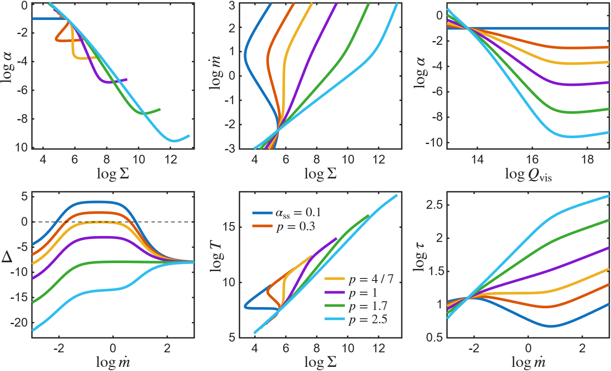
图注：The disk thermal--viscous stability with regime-dependent $\alpha$, for $M_{\bullet}=10^8$ at $r=20$. Multi-panel view of steady-state TD solutions (in cgs units) computed with $\alpha_{\rm x}=\alpha_0\,X^{p}$ (with arbitrarily $\alpha_0=0.1$). Colors denote different indices $p$ as labeled; SS model ($p=0$) is labeled as $\alpha_{\rm ss}=0.1$. The equilibrium S-curves in the $\Sigma$--$\dot{M}$ plane (expressed in Eddington unit as $\dot{m}=\dot{M}/\dot{M}_{\rm Edd}$) is shown in \(\textit{top middle}\) panel; the characteristic middle (unstable) branch present for $\alpha_{\rm ss}$ flattens with increasing $p$ and disappears for $p \gtrsim 4/7$. $\Delta$ is the thermal stability diagnostic shown in \(\textit{bottom left}\) panel; the unstable regime ($\Delta>0$) progressively shrinks as $p$ increases and vanishes for $p \gtrsim 4/7$. \(\textit{Bottom middle}\) panel shows that the multi-valued structure of temperature solutions collapses to a single monotonic branch as the disk becomes globally stable. \(\textit{Bottom right}\) panel shows a monotonically increasing trend with $\dot{m}$ for stabilized disk, with significant enhancement of optical thickness (and thus $\Sigma$) in the inner disk, compared to standard SS model.
对应解读：对应“建议重点查看的图表”第1、2、3项，以及“关键图表逐图导读”图1和部分图2/图3：\(\dot M\)--\(\Sigma\) 平衡曲线、\(p\simeq4/7\) 稳定性边界、热稳定诊断 \(\Delta\)、光学厚度/面密度增强。
入选理由：这是最核心的证据图。图注明确包含 \(\Sigma\)--\(\dot m\) S 曲线、常数 \(\alpha\) 的不稳定中间分支、随 \(p\) 增大而在 \(p\gtrsim4/7\) 消失的多值结构，以及热稳定诊断 \(\Delta\)。它直接检验日报反复强调的主张：辐射压不稳定是否由常数 \(\alpha\) 闭合导致，以及 \(\alpha(X)\) 是否使稳态解单值稳定。同时还给出内盘光学厚度和面密度增强的信息，科学价值最高。
来源与置信度：\(arxiv_source\)；high；\(arxiv_source\) / \(naddaf_AAL.tex\):figure[1]
Fig02
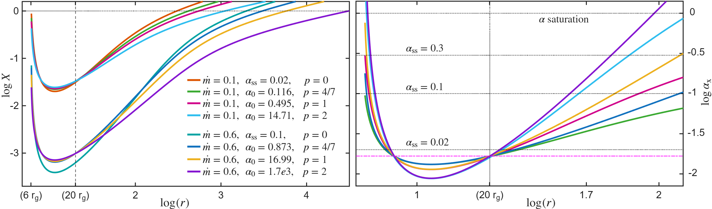
图注：Radial behavior of $X$, and $\alpha^{-1}_{\rm x}$ for $M_{\bullet}= 10^9$. The magenta dash-dotted line mark the long-timescale variability of $300$ days at $20~r_{\rm g}$. The black horizontal dotted lines as annotated indicate different values of $\alpha_{\rm ss}$, with the physical saturation threshold of viscosity parameter at the bottom. Also, the opacity is treated as $\kappa=\kappa_{\rm es}+\kappa_{\rm ff}$, where $\kappa_{\rm ff}=\kappa_0\, \rho\,T^{-7/2}$, with $\kappa_0= 5\times10^{24}~~{\rm cm^5\, g^{-2}\, K^{7/2}}$ adopted here.
对应解读：对应“建议重点查看的图表”第2和第5项，以及“关键图表逐图导读”图2和图5：(X=P_{\
m gas}/P_{\
m rad}) 的径向行为、(\alpha_{\
m x}^{-1}) 的径向变化、长时间尺度变率标记。
入选理由：这张图直接展示 \(X\) 与 (\alpha_{\
m x}^{-1}) 随半径的变化，可帮助读者理解 \(\alpha(X)\) 在辐射压主导内区如何改变输运效率。图中还标出 20 \(r_g\) 处 300 天长时标，与日报中关于热/流入时标变长和 AGN 可观测变率的讨论相关。虽然它不是完整的 (t_{\
m th}) 或 (t_{\
m in}) 曲线，但在候选图中最接近时间尺度和径向输运效率诊断。
来源与置信度：\(arxiv_source\)；high；\(arxiv_source\) / \(naddaf_AAL.tex\):figure[2]
Fig03
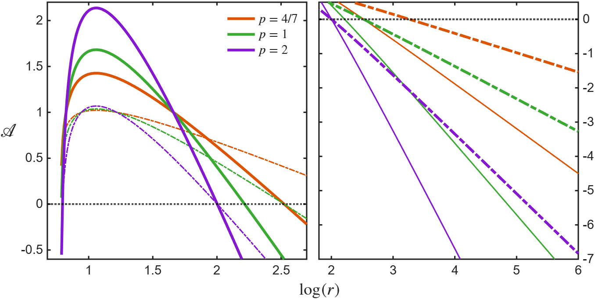
图注：Radial behavior of the logarithmic deviation parameter $\mathcal{A}$ for $M_\bullet = 10^6$ and $\dot{m}=0.1$, with $\kappa=\kappa_{\rm es}$. Solid curves correspond to the RPD scaling ($\mathcal{A}_{\rm rad}$ with $q=4$), while dashed curves represent the GPD regime ($\mathcal{A}_{\rm gas}$ with $q=10$). The right panel extends the left panel. Different colors indicate the slope $p$ of the viscosity law, with $\alpha_0=0.01$. The horizontal dotted line marks $\mathcal{A}=0$, corresponding to no deviation from the standard SS solution.
对应解读：对应“建议重点查看的图表”第6项，以及“关键图表逐图导读”图6的参数扫描/稳健性讨论：不同黏性律斜率 \(p\) 下相对标准 SS 解的径向偏离。
入选理由：该图展示不同 \(p\) 值下对标准 Shakura-Sunyaev 解的对数偏离参数 \(\mathcal{A}\)，并区分 RPD 与 GPD 标度，有助于判断新闭合在不同半径和热力学区间相对标准盘的偏离方向和幅度。它与日报核心图表的对应关系弱于 Fig01 和 Fig02，但可作为稳健性和参数依赖的补充图。
来源与置信度：\(arxiv_source\)；high；\(arxiv_source\) / \(naddaf_AAL.tex\):figure[3]
强相关工作
这篇工作直接站在 Shakura-Sunyaev \(\alpha\)-盘、Novikov-Thorne 相对论薄盘以及 Lightman-Eardley 辐射压/黏滞不稳定的传统之上。相似问题还包括 Sakimoto-Coroniti 的应力处方、以气体压而非总压标度的稳定模型、slim disk 中由径向平流稳定内盘的模型，以及辐射 MHD 模拟中应力与压强之间的滞后和非局域关系。可检索关键词包括 “radiation pressure instability accretion disk”, “Lightman Eardley instability”, “alpha disk thermal stability”, “stress prescription radiation dominated disk”。
与观测相关的相邻文献包括 X 射线双星 GRS 1915+105 的极限环解释、AGN 连续谱混响时滞偏长问题、类星体微引力透镜测得的盘尺寸偏大问题，以及辐射 MHD 模拟对辐射压主导盘稳定性的研究。本文的相反观点或张力主要来自两类工作：一类认为辐射压不稳定是真实存在并解释观测循环；另一类认为真实盘稳定性来自磁压、盘风、平流或非局部辐射转移，而不一定能简化为单变量 \(\alpha(X)\)。可检索关键词包括 “AGN disk microlensing size problem”, “continuum reverberation accretion disk lags”, “radiation MHD radiation pressure dominated disk stability”, “GRS 1915 radiation pressure limit cycle”。
同一事件 / 同类源线索：
相似工作：
基础理论 / 方法工作：
- https://ui.adsabs.harvard.edu/abs/1973A%26A....24..337S/abstract
- https://ui.adsabs.harvard.edu/abs/1974ApJ...187L...1L/abstract
- https://ui.adsabs.harvard.edu/abs/1973blho.conf..343N/abstract
相反观点 / 张力线索：
6. High Frequency Wideband Study of FRB 20240114A with the Allen Telescope Array
- 来源：arXiv / astro-ph.HE
- 链接：https://arxiv.org/abs/2606.31897v1
- 作者：Param Joshi, Vishal Gajjar, Joel Earwicker, Sofia Z. Sheikh, Mohammed A. Chamma, Joe Bright, Luigi F. Cruz, Roy H. Davis
- 评分：novelty 8/10，importance 8/10，relevance 7/10，final 8.65/10
- 推荐理由：ATA对活跃重复FRB进行1167小时、最高至7.6 GHz的宽带监测，给出高频爆发率、色散/漂移和能量分布约束；FRB/磁星高能瞬变方向值得阅读。
中文题目：用 Allen Telescope Array 对 FRB 20240114A 做高频宽带观测
做了什么：这篇文章报告了 ATA 对超活跃重复快速射电暴 FRB 20240114A 的一项长时标、高频、宽带监测：2024 年 1 月到 10 月累计在源观测 1167 小时，同时覆盖约 1344 MHz 带宽，调谐频率从约 900 MHz 延伸到 7620 MHz。作者在约 900 MHz 到约 5 GHz 之间探测到 97 个暴，其中包括一次很强的 S 波段活动期；但在约 5 GHz 以上的最高频调谐中，即使曝光可观，也没有探测到暴。论文的核心结论是：FRB 20240114A 的活动率强烈依赖频率和历元，辐射高度色散化、窄带化或带限化；亚暴宽度随频率升高而变短，向低频漂移的漂移率绝对值随频率升高而增大；累计谱能量密度分布在完备阈值以上可由较浅的幂律描述。作者还指出，ATA 看到的高频暴风暴不符合某些严格相干的长期频率调制模型，说明不完整的时间-频率覆盖会显著误导我们对重复 FRB 活动窗口的解释。
为什么重要：重复 FRB 的高频样本非常稀缺，尤其是连续数百到上千小时、跨多个 GHz 的监测。FRB 20240114A 是一个足够活跃的源，使得人们可以不只讨论“有没有暴”，而是系统测量暴率、频率选择性、亚暴漂移、持续时间和能量分布如何随频率和时间变化。这个结果重要之处在于，它把重复 FRB 的“活动性”从单一时间序列问题变成明确的二维时间-频率问题：同一源在某一频段可以像暴风雨，在另一频段则几乎沉默。
理论 / 观测 / 仪器方法价值：对观测而言，论文给出了高频重复 FRB 搜索的实际经验：约 3 GHz 以上不是简单地按低频暴率外推，而需要同时宽带、长期、可重复的覆盖。对理论而言，频率依赖的暴率、近似尺度不变的分数带宽、随频率增强的向下漂移，对磁层曲率辐射、等离子体透镜、冲击波 maser、传播选择效应等模型都有约束。对方法而言，论文强调了完备性阈值、频率调谐、非探测上限和时间采样共同决定能量分布与调制模型检验，不能只用零散探测拼接活动周期。
为什么应该关注：如果你关心 FRB 发射机制，这篇文章提供了少见的高频实测杠杆臂；如果你关心巡天策略，它直接说明高频非探测不能粗暴解释为源不活跃，而可能是时间-频率覆盖没打中活动窗口；如果你关心统计建模，它提醒长期调制模型必须同时解释探测和非探测，而不是只拟合已发现暴的频率轨迹。FRB 20240114A 可能成为继 FRB 20121102A、FRB 20180916B 等源之后，用来检验重复 FRB 色散化活动和高频辐射的新标尺。
展开详细解读：文章讲解、背景、理论、重点章节、图表与相关工作
文章详细讲解
科学问题：重复 FRB 的一个核心难题是，所谓“暴率”究竟是源本征活动强弱，还是观测频率、带宽、时间覆盖和传播效应共同筛选后的表观量。FRB 20240114A 是一个超活跃重复源，适合用来回答更细的问题：同一个源在约 GHz 到数 GHz 的频段是否同时活跃？暴的带宽、持续时间、亚暴漂移率是否随频率按可预期的尺度关系变化？高频非探测能不能排除某些长期频率调制模型？这些问题直接关联发射区等离子体条件、辐射机制的特征频率以及观测选择效应。
作者怎么做：论文利用 Allen Telescope Array 在 2024 年 1 月 27 日到 10 月 29 日之间进行累计 1167 小时在源观测。ATA 的优势是可灵活调谐、可做多频段宽带监测，本文同时带宽约 1344 MHz，覆盖的调谐范围从约 900 MHz 到 7620 MHz。作者在多个频段搜索单脉冲，测量每个暴和亚暴的到达时间、中心频率、带宽、持续时间、信噪比、谱能量密度或等效能量指标，并把探测事件与各频段曝光时间结合，构造频率和历元依赖的暴率。非探测频段不是被忽略，而是转化为上限，用来约束高频活动和调制模型。
关键结果：本文共探测到 97 个暴，探测频率集中在约 900 MHz 到约 5 GHz 之间，尤其报告了一次显著的 S 波段活动期；而约 5 GHz 以上最高频调谐没有探测到暴。作者发现暴率随频率和历元变化很强，说明 FRB 20240114A 的辐射是高度 chromatic、band-limited 的。暴的分数带宽近似尺度不变，即带宽相对中心频率的比例比绝对带宽更稳定；亚暴持续时间随频率升高而缩短；向下漂移率的绝对值随频率升高而增大。这些经验关系与一些重复 FRB 中已见到的“sad trombone”行为相呼应，但本文的高频覆盖让这种关系在更高频段得到检验。
局限和下一步：尽管 1167 小时曝光很深，时间-频率覆盖仍然不是连续全覆盖；ATA 的不同调谐、灵敏度、射频干扰环境、系统温度和搜索完备性会随频率变化，因而暴率的频率依赖需要结合选择函数理解。高频非探测说明简单外推或严格相干调制模型有问题，但还不能唯一判定发射机制；它也可能来自窄带发射窗口、传播透镜、等离子体吸收或活动周期漂移。下一步最有价值的是与 CHIME、DSA、MeerKAT、VLA、Effelsberg、FAST 或其他设施进行真正同时的低频到高频联测，用同一时间窗内的探测和非探测来分离本征活动、频率漂移和仪器选择效应。
关键结果是怎么做出来的
样本和数据选择方面，本文的证据链从一套长时标 ATA 观测日志开始：2024 年 1 月到 10 月、总计 1167 小时在源曝光、约 1344 MHz 同时带宽、调谐范围约 900 MHz 到 7620 MHz。关键不是只有总曝光，而是每个频率调谐的有效曝光、灵敏度、可用带宽和 RFI 剔除后剩余时间。读者应首先检查观测日志表：不同频段的小时数是否均衡，最高频非探测对应的有效曝光是否足以给出有意义上限，S 波段活动期是否占据了总样本中过高权重。
事件统计方面，作者报告 97 个暴，频率分布在约 900 MHz 到约 5 GHz；约 5 GHz 以上没有探测。一个自然的统计框架是把每个频率-历元单元视作泊松过程，探测数为 \(N_i\)，有效曝光为 \(T_i\)，则暴率估计为 \(R_i=N_i/T_i\)，非探测给出泊松上限。本文最重要的结论不是总共 97 个暴本身，而是这些暴在频率和时间上高度不均匀：S 波段出现暴风暴，而最高频段长时间沉默。这要求任何活动模型同时拟合探测簇和非探测窗口。
显著性和模型比较方面，论文把观测结果与长期频率调制模型比较。此类模型通常会预言某些历元的活动中心频率或可探测频带；若模型是严格相干的，则在给定相位下高频暴风暴应落在可预言轨迹附近。ATA 的高频活动 episode 与这些预测不一致，说明只用其他数据集推断出的相干频率调制不能无修改地解释本文样本。读者应关注作者是否使用了包含非探测的似然，还是主要做相位-频率轨迹的后验预测检验；前者约束更强，后者更直观但更依赖显示方式。
支撑结论的图表应包括：观测时间-频率覆盖图、暴的动态谱样例、暴率随时间和频率的热图或分箱图、亚暴宽度和漂移率随频率的散点关系、累计谱能量密度分布，以及长期调制模型预测与 ATA 探测/非探测的对照图。尤其要看非探测是否在图上以同等权重出现，因为只画探测点会夸大某些频率轨迹的说服力。
系统误差方面，主要风险来自频率依赖灵敏度、RFI mask、束形和增益校准、色散量选择、时间/频率分辨率导致的脉冲展宽、散射尾以及搜索管线在不同宽度和不同带宽暴上的检出效率。作者通过完备性阈值以上的能量分布拟合来降低低信噪比漏检的影响，并通过比较不同频段曝光与非探测约束来避免把选择效应误认为本征截止。稳健性检验的关键是：改变完备阈值、改变频率分箱、排除最强活动日后，浅幂律能量分布和色散化活动结论是否仍然成立。
展开背景、理论、公式、模型、章节和图表导读
背景知识
快速射电暴是毫秒量级的射电脉冲，具有很高的亮温度和宇宙学距离尺度上的色散量。重复 FRB 则提供了比一次性 FRB 更强的物理诊断能力，因为同一源可以被长期监测，能研究暴率、能量分布、活动周期、偏振、旋转量和亚暴结构如何演化。FRB 20240114A 属于非常活跃的重复源，这类源的价值在于能在相对短时间内积累足够样本，避免只用几个孤立暴推断整体行为。
历史上，高频重复 FRB 观测一直样本稀缺。FRB 20121102A 曾在数 GHz 甚至更高频段被探测到，显示重复 FRB 并非只能在 400 MHz 到 1.5 GHz 活动；但高频观测时间昂贵、视场小、系统温度和接收机覆盖复杂，很多巡天主要集中在较低频段。结果是，重复 FRB 的频谱行为常被低频样本主导，而高频端的发射带宽、截止、漂移和活动窗口仍然缺乏统计约束。
为什么现在值得重新看：新一代重复 FRB 发现率上升，CHIME 等低频/中频设施能快速识别活跃源，随后可以触发高频定点观测。ATA 这类可长时间监测、可多频调谐的阵列正好补上“长时标高频覆盖”的缺口。对于 FRB 20240114A，如果只看某个低频或某个短期活动窗口，可能会得出完全不同的暴率和频谱结论；本文试图展示这种偏差有多严重。
该领域常见误区之一是把 FRB 的非探测直接解释为源不活跃。实际上，非探测可能来自频率窗口没对上、发射窄带、观测灵敏度不足、散射或色散展宽、RFI 剔除、束偏移、偏振校准不足，也可能来自真正的本征活动间歇。另一个误区是把少数探测点连成平滑周期或频率轨迹后过度解释。对重复 FRB，探测和非探测必须一起进入模型，否则活动周期、频率调制和能量分布都会受到强选择效应影响。
基础理论 / 方法脉络
从物理图像看，重复 FRB 是极高相干亮温度的短时射电脉冲。观测者首先测到的是动态谱，即通量密度随时间和频率的二维分布。星际和星系际等离子体使低频信号更晚到达，色散延迟由色散量控制；源附近或传播路径中的散射会把脉冲展宽，并且通常在低频更严重。因此，一个真实的毫秒暴在接收机中会被色散、散射、有限时间采样和有限频率通道共同改写。
本文关注的不是只把暴“找出来”，而是测量其频谱-时间结构。重复 FRB 的单个暴常由多个亚暴组成，亚暴中心频率随时间向低频漂移，即所谓 downward drift。关键观测量包括中心频率 (\
\(u_c\))、带宽 \(\(\Delta\) \
u)、分数带宽 \(\(\Delta\) \
u/\
\(u_c\))、持续时间 \(W\)、漂移率 (d\
u/dt)、峰值信噪比、流量或谱能量密度。若分数带宽近似恒定，说明发射或传播选择机制可能按比例缩放，而不是固定绝对频宽。
观测统计上，暴率不是一个简单常数。对于某个频率调谐和历元，探测概率取决于源本征发射率、能量分布、望远镜灵敏度、带宽、系统温度、RFI 环境和搜索管线效率。高频非探测尤其需要谨慎：若能量分布很陡，灵敏度略差就会显著减少探测；若发射带限且中心频率随时间漂移，单一调谐可能完全错过活动带。
本文还触及长期频率调制模型。这类模型试图用某种准周期或相干相位描述活动中心频率随时间变化，可能来自轨道调制、进动、透镜、磁层状态切换或传播结构。ATA 的结果说明，模型若只拟合已有探测，而没有把同一时间段内其他频率的非探测纳入，就容易产生过强的相干性结论。真正的检验应在时间-频率平面上比较模型预测的可探测概率与完整观测掩膜。
公式与推导
第一步是色散校正。冷等离子体中群速度随频率变化，两个观测频率之间的到达时延可写为
其中 ({\
m DM}) 是色散量，(\
\(u_1\)) 和 (\
\(u_2\)) 是射频频率，(K_{\
m DM}) 是色散常数。这个式子定义了单脉冲搜索中试探 ({\
m DM}) 并对齐频率通道的基本操作；若 ({\
m DM}) 偏离真实值，脉冲会被残余展宽，影响宽度和信噪比。
第二步是把动态谱积分成可检出的信噪比。对带宽 \(B\)、积分宽度 \(W\)、系统等效流量密度 ({\
m SEFD})、偏振数 (n_{\
m pol}) 的观测，辐射计方程近似给出
其中 \(S_{\}\)
m pk}) 是峰值通量密度，\(G_\eta\) 表示量化、束偏移和管线损失等效率因子。由给定阈值 \(({\(\rm\) S/N})_{\
m th}) 可反推最小可检峰值通量。
第三步是把峰值或积分通量转化为流量与谱能量密度。若暴的频率积分通量密度为 \(S_\\)
u(t))，则流量为
而在有限有效带宽 \(\Delta \\)
u) 上的谱能量密度或等效能量指标可写作
若源的光度距离为 \(D_L\) 且红移为 \(z\)，各向同性等效能量常近似为
本文更强调相对能量分布和完备阈值，因此即使距离或能谱外推不确定，也能比较不同暴的谱能量密度排序。
第四步是描述带限发射。单个亚暴可用二维高斯或类似函数近似：
其中 \(A\) 是幅度，\(t_0\) 是参考到达时刻，(\
\(u_c\)) 是中心频率，\(\sigma_t\) 和 (\sigma_\
u) 分别对应时间宽度和频率宽度，(\dot{\
u}=d\
u/dt) 是漂移率。这个模型把持续时间、带宽和向下漂移放在同一拟合框架中。
第五步是检验尺度关系。若分数带宽近似不随频率变，即
则 \(\Delta \\)
u) 会随 (\
\(u_c\)) 近似线性增加。若亚暴宽度随频率变窄，可用幂律表示为
其中 \(a>0\) 表示高频暴更短。漂移率也可写成
其中 \(b>0\) 表示高频处向下漂移更快。本文的经验结论正是围绕这些频率标度展开。
第六步是暴率和非探测的统计。把第 \(i\) 个时间-频率单元中的暴数记为 \(N_i\)，曝光为 \(T_i\)，模型暴率为 \(R_i\)，泊松似然为
对于非探测单元 \(N_i=0\)，贡献为 \(e^{-R_iT_i}\)，因此长曝光的零探测能强烈排除高暴率模型。累计能量分布常写为
其中 \(\gamma\) 是累计斜率；较小的 \(\gamma\) 表示高能暴对总能量输出贡献较大。
模型拟合 / 应用方法
本文涉及两类拟合：单暴层面的动态谱拟合，以及样本层面的暴率/能量分布/调制模型拟合。单暴拟合通常在去色散后的动态谱上进行，估计 \(t_0\)、(\
\(u_c\))、(\Delta\
u)、\(W\)、(d\
u/dt)、幅度和背景噪声。若亚暴重叠，需要多成分模型；若信噪比较低，(\Delta\
u) 与幅度、\(W\) 与散射展宽、(d\
u/dt) 与残余色散之间会出现退化。
样本层面的暴率拟合应把每个观测块的有效曝光和灵敏度纳入。最简单是按频段和日期分箱，用泊松模型估计 (R(\
u,t))；更复杂可引入活动窗口、频率中心漂移、能量阈值和探测效率函数。本文对约 5 GHz 以上非探测的解释，关键取决于高频灵敏度和有效曝光是否足以排除低频暴率的直接外推。
能量分布拟合需要先定义完备阈值。低于阈值的样本受漏检影响，不宜直接进入幂律斜率估计。常用方法是在 \({\(\cal\) E}>{\(\cal\) E}{\
m comp}) 上拟合累计或微分幂律，并通过改变 \({\(\cal\) E}{\
m comp}) 检查 \(\gamma\) 是否稳定。浅累计幂律意味着少数强暴对能量预算贡献显著，但也意味着样本最大值、活动期选择和观测带宽会强烈影响总能量估计。
长期频率调制模型的拟合或检验更容易出错。一个只穿过探测点的相干轨迹并不一定有预测能力，因为观测掩膜之外没有约束；真正应比较的是模型在每个时间-频率单元预测的探测概率与实际 \(N_i\)。ATA 的 S 波段暴风暴和高频非探测一起构成强检验：模型若预言这些时段高频应活跃却没有探测，或预言 S 波段不在活动相位却出现大量暴，就需要被修正。
实际应用中，残差诊断比单个最佳拟合参数更重要。读者应检查动态谱拟合残差是否有未建模亚结构，暴率模型是否在某些日期系统性低估或高估，能量分布在高能端是否偏离单幂律，非探测上限是否随 RFI 剔除和阈值选择大幅变化。如果这些诊断不稳定，那么“频率调制”或“高频截止”的物理解释就应保持保守。
重点章节 / 结果段落怎么读
数据/观测章节：优先阅读 ATA 的调谐设置、同时带宽、总曝光、每个频段的有效观测时间和 RFI 处理。本文结论高度依赖时间-频率覆盖，因此观测日志不是附属信息，而是解释 97 个暴和高频非探测的基础。
搜索与候选筛选章节：重点看去色散、单脉冲搜索阈值、候选分类、重复 RFI 排除、宽度试探范围和频率通道处理。高频宽带数据中，RFI 与系统温度变化可能改变检出效率；如果搜索对窄带暴或宽暴的响应不同，会影响频率依赖暴率。
暴性质测量章节：应关注动态谱拟合方法、亚暴定义、中心频率和带宽测量、持续时间与漂移率估计。本文关于分数带宽尺度不变、宽度随频率降低、漂移率随频率增强的结论，都来自这一部分。
能量分布和暴率章节：重点看完备阈值如何确定、累计谱能量密度分布如何拟合、幂律斜率的置信区间以及分频段暴率如何计算。不要只看全样本平均暴率，因为平均值会掩盖强烈的历元和频率变化。
讨论/模型比较章节：重点看作者如何与长期频率调制模型对照，尤其是 ATA 的 S 波段活动期是否落在模型预测之外，以及最高频非探测如何进入判断。这里的核心价值是提醒读者：不完整时间-频率采样会把随机或带限活动误读成相干调制。
建议重点查看的图表
-
观测时间-频率覆盖图：检查 2024 年 1 月到 10 月各调谐频段的曝光分布，特别是约 5 GHz 以上非探测是否有足够曝光支撑。
-
暴的动态谱样例图：看暴是否窄带、是否有多亚暴、是否呈现向低频漂移；同时注意 RFI mask 和频带边缘是否可能截断暴。
-
暴率随频率和历元变化图：检查 S 波段活动 episode 是否显著高于其他时段，以及低频和高频暴率差异是否超过泊松误差。
-
分数带宽与中心频率关系图：应看 (\Delta\
u/\
\(u_c\)) 是否真的近似水平，还是由探测带宽边界造成的表观关系。 -
持续时间和漂移率随频率关系图：检查拟合斜率、散点、置信区间，以及是否由少数高信噪比暴主导。
-
累计谱能量密度分布图：重点看完备阈值位置、幂律拟合范围、高能端是否有弯折或离群点。
-
长期频率调制模型对照图：看模型轨迹、ATA 探测点、非探测窗口是否画在同一时间-频率平面；非探测如果未显示，结论说服力会下降。
关键图表逐图导读
图 1：建议把它作为观测掩膜图来读。横轴通常是日期或 MJD，纵轴是观测频率，色块或横条表示 ATA 实际覆盖的调谐频段和曝光。数据点若叠加暴探测，应区分探测和非探测。主要结论是 FRB 20240114A 的活动不是均匀填满所有频率，而是在某些时间和频段集中。读图陷阱是只盯着探测点，而忽略没有观测或灵敏度不足的空白区域。
图 2：动态谱样例通常以时间为横轴、频率为纵轴、颜色为强度或信噪比。应看每个暴是否只占据总带宽的一部分，亚暴是否从高频向低频漂移，频带边缘是否截断结构。模型线若标出亚暴中心轨迹，可以直观看到 (d\
u/dt)。读图陷阱是把 RFI 缺口或通带增益起伏误认为天体谱结构。
图 3：暴率或事件数的频率-时间分布图应显示哪些频段在何时出现暴风暴。横轴可为历元，纵轴为频段，颜色为 \(R=N/T\) 或事件数。关键是 S 波段活动期与约 5 GHz 以上非探测形成对照。若误差条或上限没有显示，读者需要回到表格估算泊松置信区间。
图 4：分数带宽、持续时间和漂移率的频率标度图通常是散点加幂律拟合。横轴为 \(\nu_c\)，纵轴分别为 (\Delta\
u/\
\(u_c\))、\(W\) 或 (|d\
u/dt|)。应检查拟合是否在对数坐标下进行，置信带是否包括系统误差，以及同一暴的多个亚暴是否被当作独立点。主要结论是分数带宽近似尺度不变、高频亚暴更短、漂移更快。
图 5：累计谱能量密度分布图通常横轴为 \({\cal E}\) 或等效 fluence 指标，纵轴为 \(N(>{\cal E})\)。垂直线应标出完备阈值，拟合线显示幂律斜率。浅斜率的结论要看拟合范围是否足够宽，以及最高能几个暴是否主导斜率。读图陷阱是把低于完备阈值的翻转解释成真实物理截止。
图 6：长期频率调制模型对照图应把模型预测的活动中心频率或活动带与 ATA 探测/非探测叠加。横轴是时间，纵轴是频率，模型线可能有相位或不确定带。核心读法是：ATA 的高频暴风暴是否偏离预测轨迹，最高频非探测是否落在模型预言活跃区。若模型只与探测点比较而未惩罚非探测，它的相干性可能被高估。
论文原图 / 可嵌入图片
Fig02
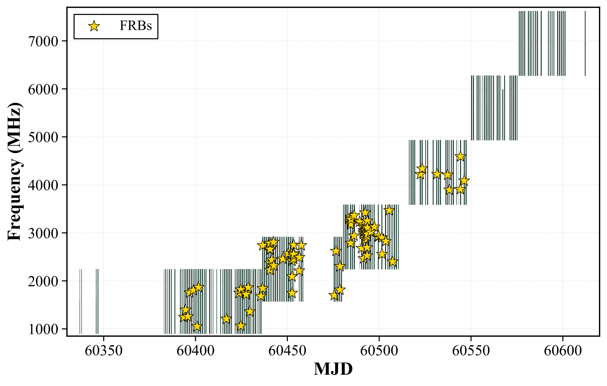
图注：Temporal and frequency coverage of the ATA observations of FRB\,20240114A. Dark green vertical segments show the 1344\,MHz frequency range (two consecutive LOs) covered by each observing scan as a function of MJD, while yellow stars mark the detected FRB bursts. The observations span approximately 900--7620\,MHz and show the progression from lower-frequency tunings early in the campaign to higher-frequency tunings at later epochs.
对应解读：建议重点查看的图表 1、3、7；关键图表逐图导读中的图 1 和图 6；模型拟合段落中的观测掩膜与长期频率调制检验。
入选理由：这张图同时给出时间、频率覆盖和 ATA 探测点，是判断 S 波段暴风暴、约 5 GHz 以上非探测以及长期调制模型是否受观测掩膜影响的核心图。相比只给总曝光的 Fig01，它更直接呈现哪些时间-频率区域被观测、哪些区域有暴、哪些区域只有非探测。
来源与置信度：\(arxiv_source\)；high；\(arxiv_source\) / \(ATA_FRB20240114A_ApJ.tex\):figure[2]
Fig04
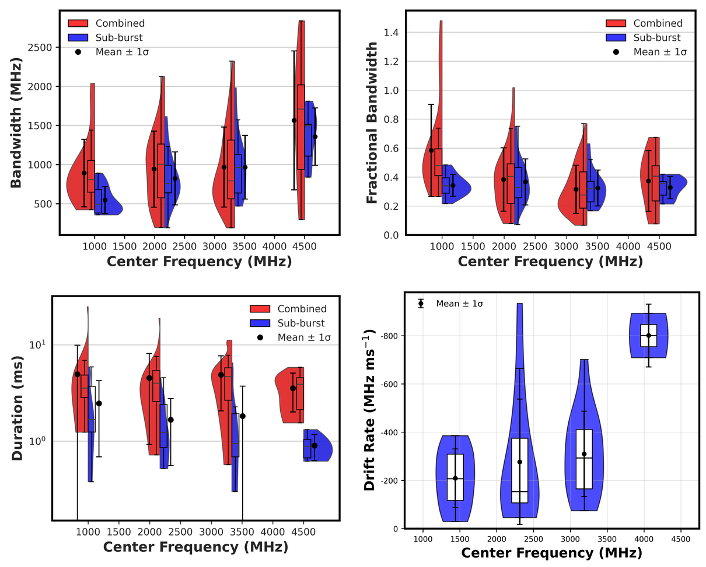
图注：Distributions of spectro-temporal burst properties as a function of center frequency for FRB\,20240114A. The X-axis is binned by a factor of 4 to account for the 4 unique LO tunings in which we detected all the bursts. The Split violin plots compare measurements from the full burst envelopes with those from the individual sub-burst components. The left half of each violin shows the full-burst measurements, while the right half shows the sub-burst measurements. Embedded box plots indicate the median and interquartile range, and black points with vertical error bars mark the mean and standard deviation of each distribution. The panels show the bandwidth, fractional bandwidth, duration, and drift rate.
对应解读：建议重点查看的图表 4、5；关键图表逐图导读中的图 4；单暴层面动态谱拟合和样本层面频率标度关系。
入选理由：该图集中展示带宽、分数带宽、持续时间和漂移率随中心频率的分布，并区分整暴与亚暴成分，正对应日报中关于分数带宽近似尺度不变、高频持续时间变短、漂移率随频率增大的主要结论。
来源与置信度：\(arxiv_source\)；high；\(arxiv_source\) / \(ATA_FRB20240114A_ApJ.tex\):figure[4]
Fig07
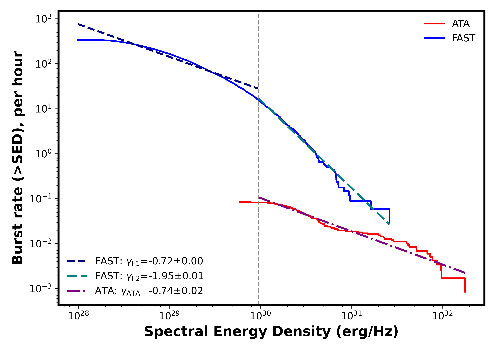
图注：Log-scale plot of the cumulative burst rate as a function of spectral energy density (SED) for the ATA bursts, compared with the FAST energetics from \(\citet{FAST_main_paper}.\) The ATA distribution is fit with a power law of index $\gamma = -0.74 \pm 0.02$ above the completeness limit. The dashed vertical line marks the ATA completeness limit ($9.5 \times 10^{29}$\,erg\,Hz$^{-1}$), which is also taken as the break point of the FAST power-law fit. The significantly shallower ATA slope reflects the bursts missed while the ATA was not observing during the FAST high-activity period around MJD\,60380.
对应解读：建议重点查看的图表 6；关键图表逐图导读中的图 5；能量分布拟合段落。
入选理由：这张图给出累计谱能量密度分布、完备阈值和幂律斜率，是检验浅幂律结论是否依赖拟合范围和完备性处理的关键图。它比 Fig06 的能量-频率分布更直接支撑日报中关于能量分布拟合和高能端贡献的讨论。
来源与置信度：\(arxiv_source\)；high；\(arxiv_source\) / \(ATA_FRB20240114A_ApJ.tex\):figure[7]
Fig05
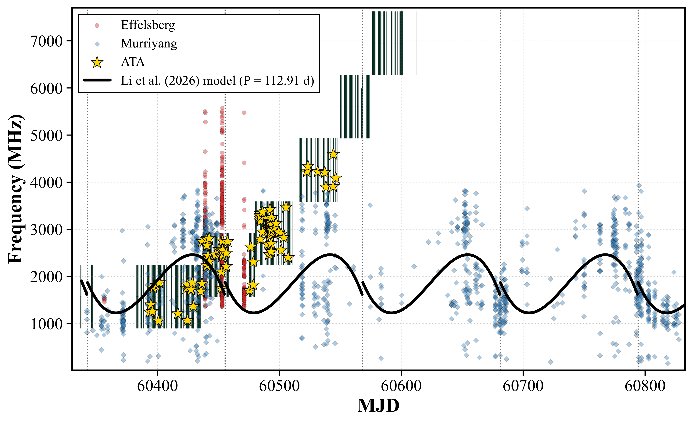
图注：Multi-telescope burst center frequency versus MJD, with the $P=112.91$\,day periodic frequency-modulation model of \(\citet{Li2026_freqperiod}\) overlaid (solid black curve; dotted lines mark cycle boundaries). ATA (gold stars), Murriyang (blue diamonds; \cite{Uttarkar2026}), and Effelsberg (red circles; \cite{limaye2026}) bursts are shown as in Figure~\(\ref{fig:frequency_vs_MJD},\) with ATA LO coverage indicated by the blocks of narrow vertical lines. The Murriyang sample broadly follows the model, but the ATA high-frequency burst storm near MJD\,60480--60546 lies above the curve at a phase where low-frequency emission is predicted, contradicting a strictly phase-coherent modulation by \(\cite{Li2026_freqperiod}.\)
对应解读：建议重点查看的图表 7；关键图表逐图导读中的图 6；长期频率调制模型检验段落。
入选理由：该图把多台望远镜的暴中心频率、MJD、ATA 覆盖和 112.91 天频率调制模型放在同一时间-频率平面上，直接对应日报要求检查模型轨迹、ATA 探测点以及观测窗口的内容，是评估严格相干调制模型是否被 ATA 高频暴风暴挑战的关键证据。
来源与置信度：\(arxiv_source\)；high；\(arxiv_source\) / \(ATA_FRB20240114A_ApJ.tex\):figure[5]
Fig03
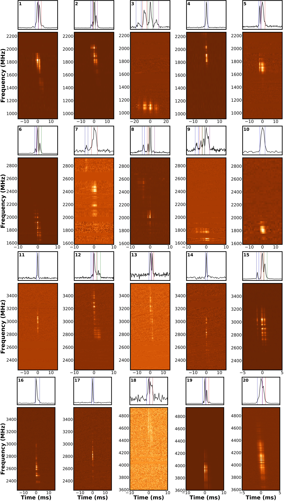
图注：Dynamic Spectra of 20 of the detected FRBs. The vertical dotted lines represent the on-pulse regions of the bursts as well as the sub-bursts, which are used for the SNR calculations described in Section \(\ref{ssec:SNR_flux_fluence}.\) The dynamic spectrum plots for all 97 bursts can be found on \href{https://zenodo.org/uploads/19429415}{zenodo.org/uploads/19429415}.
对应解读：建议重点查看的图表 2；关键图表逐图导读中的图 2；单暴动态谱拟合段落。
入选理由：这张动态谱样例图展示部分探测暴的时间-频率结构和 on-pulse 区域，可用于检查窄带性、多亚暴结构以及是否存在向低频漂移。它直接支撑日报中关于动态谱读图和单暴参数估计的讨论。
来源与置信度：\(arxiv_source\)；high；\(arxiv_source\) / \(ATA_FRB20240114A_ApJ.tex\):figure[3]
Fig01
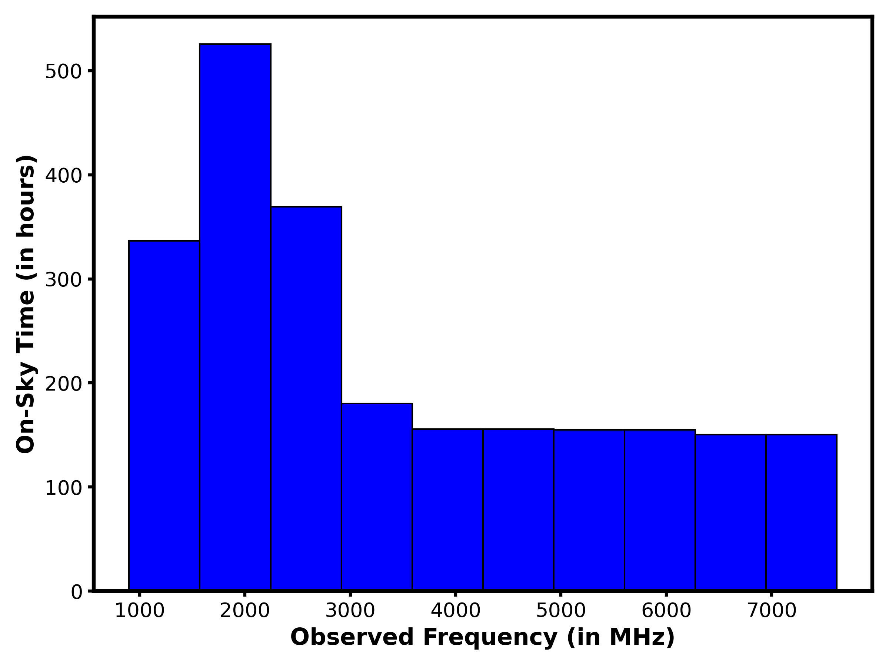
图注：Total on-sky observing time for FRB\,20240114A as a function of observed frequency. The ATA campaign used multiple LO tunings spanning approximately 900–7620 MHz, with the largest exposure obtained at the lower-frequency tunings. The observing time shown here includes all data acquired between 27 January and 29 October 2024.
对应解读：建议重点查看的图表 1、3；详细解读中关于高频非探测是否有足够曝光支撑的讨论。
入选理由：该图汇总总在源观测时间随频率的分布，能辅助判断约 5 GHz 以上非探测是否建立在足够曝光之上。虽然不如 Fig02 展示时间结构和探测点，但它对高频非探测的统计说服力仍有重要补充作用。
来源与置信度：\(arxiv_source\)；high；\(arxiv_source\) / \(ATA_FRB20240114A_ApJ.tex\):figure[1]
强相关工作
同源背景方面，FRB 20240114A 是一个命名重复源，本文属于同一源的高频宽带跟进工作。由于我不能确信所有同源发现论文或 ATel/TNS 页面编号，建议检索关键词包括 “FRB 20240114A repeater discovery”、“FRB 20240114A CHIME”、“FRB 20240114A ATA”、“hyperactive repeating FRB 20240114A”。同一事件/同一源论文应优先查 arXiv、NASA ADS、CHIME/FRB 官方目录和 Transient Name Server 或 Astronomer's Telegram 的公开记录。
同类源方面，最直接的比较对象是 FRB 20121102A 和 FRB 20180916B。FRB 20121102A 曾在高频被探测并显示复杂亚暴结构，是讨论重复 FRB 高频辐射、窄带性和漂移的原型；FRB 20180916B 则以活动周期和频率相关活动窗口闻名，是长期调制模型的重要参照。检索关键词可用 “FRB 121102 high frequency bursts 4-8 GHz”、“FRB 180916 periodic activity frequency dependence”、“repeating FRB downward drift sub-bursts”。
理论和张力方面，本文与磁层模型、同步激波 maser 模型、等离子体透镜模型以及传播诱导频率结构都有关系。相反或有张力的观点主要是把重复 FRB 活动解释为严格相干的长期频率调制；ATA 的结果提示这种模型若未包含完整非探测掩膜，可能过拟合已有探测。检索关键词包括 “FRB frequency modulation model”、“FRB chromatic activity”、“FRB band-limited emission”、“FRB Poisson burst rate non-detections”。
同一事件 / 同类源线索：
相似工作：
- https://arxiv.org/abs/1804.04101
- https://arxiv.org/abs/2001.10275
- https://arxiv.org/abs/2001.10276
- https://arxiv.org/abs/1901.04524
基础理论 / 方法工作：
相反观点 / 张力线索：
（未提供）
7. Landau-Zener formula and resonant axion conversion in neutron star magnetospheres
- 来源：arXiv / astro-ph.HE
- 链接：https://arxiv.org/abs/2606.31476v1
- 作者：Matti Heikinheimo, Topi Sirkiä, Kimmo Tuominen
- 评分：novelty 8/10，importance 8/10，relevance 7/10，final 8.65/10
- 推荐理由：重新检验中子星磁层中轴子-光子共振转换的Landau-Zener近似，并修正光学偏振约束；属于紧致星与粒子天体物理交叉，方法性和约束意义较强。
中文题目：中子星磁层中共振轴子—光子转化的 Landau-Zener 公式何时失效
做了什么：这篇论文重新检查了一个在中子星磁层轴子搜寻中常被默认使用的近似：把轴子—光子共振转化写成 Landau-Zener 跃迁概率。作者指出，在毫米波到光学波段，等离子体频率随半径变化所定义的“共振宽度”常常会大于实际可发生相干转化的区域尺度，此时 Landau-Zener 公式的前提不成立。论文给出一个直接比较尺度的判据，用数值求解验证，并据此修正了基于中子星光学偏振观测得到的轴子约束。
为什么重要：中子星磁层被认为是轻轴子或类轴子粒子转化为电磁辐射的高磁场实验室，但许多约束依赖一个看似标准、实则有适用条件的解析公式。如果 Landau-Zener 概率在光学或毫米波段系统性高估或低估转化率，那么已有参数空间排除区就可能需要重画。
理论 / 观测 / 仪器方法价值：本文的价值不在于提出新的中子星模型，而在于给出一个可操作的近似有效性检查：比较共振层宽度、磁层尺度和混合长度。它为以后做轴子—光子转化的观测预言、偏振约束和数值传播计算提供了一个“先验质检”工具。
为什么应该关注：如果你关心轴子暗物质、强磁场等离子体、脉冲星/孤立中子星偏振，或用天体观测做粒子物理约束，这篇文章提醒你：漂亮的解析概率不一定能直接塞进观测似然。它会影响哪些波段最有前景、哪些已有约束可靠，以及未来偏振观测应如何建模系统误差。
展开详细解读：文章讲解、背景、理论、重点章节、图表与相关工作
文章详细讲解
科学问题：轴子或类轴子粒子与光子通过相互作用项 \(g_{a\gamma}a\mathbf{E}\cdot\mathbf{B}\) 混合。在中子星磁层里，强磁场提供外场，等离子体给光子一个有效质量。当局域等离子体频率 \(\omega_p\) 与轴子质量 \(m_a\) 匹配时，会出现共振增强。过去很多估算把这个过程等同于一个两能级系统穿过避免交叉，用 Landau-Zener 公式给出转化概率。问题是：中子星磁层不是无限延展、缓慢变化的一维介质，尤其当目标光子频率进入毫米波、红外或光学波段时，共振层的自然宽度可能不再比系统尺度小。
作者怎么做：论文从轴子—光子混合传播方程出发，把 Landau-Zener 近似所需的尺度条件显式写出来。核心思路不是只看共振点处的绝热性参数，而是比较共振宽度与实际转化区大小。如果由 \(|m_a^2-\omega_p^2|\) 在空间中的变化定义的共振区域过宽，而磁场、密度或传播几何在这一区域内已经显著变化，Landau-Zener 的局域线性化假设就失效。作者再用数值积分完整传播方程，与解析 Landau-Zener 概率逐点比较，检验这个尺度判据。
关键结果：他们发现，对毫米波到光学波段的轴子转化，Landau-Zener 图像经常不满足其自身的适用条件。失效时，解析概率可以与数值结果有显著偏差；偏差方向不应简单理解为总是保守或总是激进，而要看具体的磁场强度、等离子体剖面、轴子质量、光子频率和传播路径。论文因此强调，以往把 Landau-Zener 公式直接用于光学偏振约束的做法需要重新评估，并据此修正了中子星光学波段偏振搜寻对 \(g_{a\gamma}\) 和 \(m_a\) 的限制。
局限和下一步：这项工作的主要目标是澄清传播近似，而不是建立完整的、包含三维磁层、电荷供给、辐射转移和表面发射偏振的中子星模型。因此，修正后的约束仍会受到磁层密度模型、几何倾角、发射区、QED 真空双折射以及观测偏振系统误差的影响。下一步自然是把这个尺度判据嵌入更真实的射线追踪和偏振传播代码，对不同中子星族群、不同波段和不同磁层模型重新计算可观测偏振信号。
关键结果是怎么做出来的
本文最重要的证据链是“尺度判据—数值验证—观测约束修正”。样本不是一个大型天体目录，而是参数空间中的传播问题：给定中子星磁场、等离子体密度剖面、轴子质量 \(m_a\)、轴子—光子耦合 \(g_{a\gamma}\) 和光子频率 \(\omega\)，沿传播路径求解混合方程。作者把以往 Landau-Zener 估算看作待检验的近似模型，而不是最终结果。
数据或计算选择的关键在于波段。毫米波到光学波段对应较高的光子能量或较短波长，传播相位、共振条件和磁层尺度之间的比例关系与传统低频射电轴子转化不同。作者关注的是在这些波段，Landau-Zener 共振宽度是否仍能被视作局域小区域。若共振宽度超过转换区，单一共振点附近的线性化密度梯度就不能代表真实传播。
统计意义在本文中主要表现为理论误差和约束重估，而不是发现显著性。作者通过数值解与解析 Landau-Zener 公式的逐参数比较，展示何时二者一致、何时分离。支撑结论的图表应当包括：转化概率随 \(m_a\) 或 \(\omega\) 的曲线、解析与数值结果的比值、有效性判据在参数空间中的边界，以及修正前后偏振约束在 \((m_a,g_{a\gamma})\) 平面上的变化。
稳健性检验的核心是判据是否能预言 Landau-Zener 失效，而不只是事后解释个别数值曲线。作者的论证应读作：先定义共振宽度和转换区尺度，再在不同参数下数值求解，最后检查失效区域是否与尺度比较一致。主要系统误差来自磁层密度剖面、磁场几何、传播方向和偏振初态；这些因素会改变共振位置和宽度，也会改变观测偏振对转化概率的响应。
对光学偏振约束的修正是本文面向观测的结果。既有偏振搜寻通常把轴子转化造成的额外偏振或偏振旋转与观测上限比较，得到 \(g_{a\gamma}\) 的排除区。本文说明，如果概率公式在该波段不成立，那么约束的强弱不能仅靠旧公式延伸。读者应特别检查修正后的排除曲线是否只在 Landau-Zener 失效区域发生变化，以及作者是否把数值传播不确定性与观测偏振误差分开处理。
展开背景、理论、公式、模型、章节和图表导读
背景知识
研究对象是中子星磁层中的轴子—光子转化。轴子或类轴子粒子是许多强相互作用 \(CP\) 问题解和暗物质模型中的候选粒子，它们与光子的弱耦合使得强磁场天体成为天然转换器。中子星表面磁场可达 \(10^{12}\) 至 \(10^{15}\,\mathrm{G}\)，磁层内等离子体密度随半径快速下降，因此等离子体频率可以扫过很宽范围，为共振转化提供条件。
历史上，轴子—光子混合常借用中微子振荡和原子物理中的两能级跃迁语言。Landau-Zener 公式尤其有吸引力，因为它把复杂传播压缩成共振点处的混合强度和能级斜率。对于射电波段轴子暗物质转化，许多工作已经研究过中子星磁层中 \(\omega_p\simeq m_a\) 的共振层，并讨论可观测的窄线射电信号。
光学偏振方向的动机略有不同。中子星表面热辐射和磁层辐射本身带有偏振，强磁场 QED 真空双折射也会影响偏振传播。如果轴子与光子混合，它不仅可能改变总通量，也可能改变偏振分量的比例。因此，偏振观测可以对 \(g_{a\gamma}\) 给出限制，尤其在没有明显通量超额时，偏振上限或偏振角信息仍然有约束力。
为什么现在值得重看：一方面，光学和近红外偏振观测精度在提高，未来大口径望远镜会让孤立中子星偏振样本增加；另一方面，理论预言中常用的解析近似在跨波段推广时容易被忽视适用条件。本文针对的正是这种“公式惯性”：Landau-Zener 公式在教科书中很标准，但并不意味着任何共振都能用它。
常见误区有三个。第一，把共振条件 \(m_a\simeq\omega_p\) 当作充分条件，忽略了相干传播长度和背景变化尺度。第二，只看绝热性参数大小，却不检查共振层是否局域。第三，把转化概率的不确定性完全归因于 \(g_{a\gamma}\)，而忽视磁层模型、几何和波段选择会造成同等甚至更大的系统偏差。
基础理论 / 方法脉络
基础物理图像是一个外磁场中的两态混合问题。轴子场 \(a\) 只与电磁波中平行于外磁场横向分量的偏振态混合，另一个正交偏振态基本不参与。等离子体使光子获得有效质量 \(\omega_p\)，于是光子态与轴子态的传播相位差由 \(m_a^2-\omega_p^2\) 控制。当这个差值穿过零时，两态出现共振混合。
Landau-Zener 近似要求背景在共振点附近可近似为线性变化，并且相互作用区域可以延伸到足够远，使入射态和出射态都能定义为远离共振的本征态。数学上，它是一个局域避免交叉问题；物理上，它要求“共振区”小于磁场、密度和几何显著变化的尺度，也小于实际可用传播区。本文的核心就是把这一隐含条件变成显式判据。
在中子星磁层中，等离子体频率通常由局域电子数密度 \(n_e\) 决定，而 \(n_e\) 常与 Goldreich-Julian 密度或其倍增因子相关。磁场近似偶极时随半径快速下降，\(B\propto r^{-3}\)，密度也可随 \(r\) 呈幂律变化。因此，共振半径、混合强度和梯度都强烈依赖 \(m_a\)、自转角速度、磁倾角和射线路径。
本文使用的关键量包括转化概率 \(P_{a\to\gamma}\)、共振宽度 \(\Delta r_{\rm res}\)、实际转换区尺度 \(L_{\rm conv}\)、混合项 \(\Delta_{a\gamma}\) 和失谐项 \(\Delta_a-\Delta_\gamma\)。若 \(\Delta r_{\rm res}\ll L_{\rm conv}\)，Landau-Zener 公式有希望成立；若 \(\Delta r_{\rm res}\gtrsim L_{\rm conv}\)，就必须数值积分传播方程。
主要退化关系来自 \(g_{a\gamma}\)、\(B\)、\(n_e\) 和几何路径。较大的 \(g_{a\gamma}\) 与较强的横向磁场都能增强混合；改变密度剖面则会移动共振半径并改变梯度；传播方向改变会同时改变 \(B_\perp\) 和穿越共振层的有效速度。观测上，偏振信号还与本征发射偏振和 QED 真空双折射纠缠，因此不能把偏振异常简单等同于轴子信号。
公式与推导
第一步从轴子—光子相互作用写起。有效拉氏量中的混合项为
这里 \(a\) 是轴子场，\(g_{a\gamma}\) 是耦合常数，\(F_{\mu\nu}\) 是电磁场张量，\(\tilde F^{\mu\nu}\) 是其对偶。只有电磁波电场沿外磁场横向分量的偏振与 \(a\) 混合。
第二步，把沿射线坐标 \(z\) 的传播写成薛定谔型方程：
其中 \(A_\parallel\) 是参与混合的光子偏振振幅，\(\Delta_{a\gamma}=g_{a\gamma}B_\perp/2\)，\(B_\perp\) 是垂直于传播方向的外磁场分量，\(\Delta_a=-m_a^2/(2\omega)\)，\(\omega\) 是光子或轴子能量。
第三步，等离子体给光子贡献有效质量，常写为
这里 \(n_e\) 是电子数密度，\(m_e\) 是电子质量，\(\alpha_{\rm em}\) 是精细结构常数。共振条件就是两对角项相等：
第四步，在共振附近定义失谐量
Landau-Zener 近似把 \(\delta(z)\) 在线性区展开为
这个展开要求共振附近的密度梯度、磁场方向和 \(B_\perp\) 在相关长度内近似不变。
第五步，常用的绝热性参数可写成
在标准两能级问题中，非绝热跳跃概率近似为 \(P_{\rm jump}=\exp(-\pi\Gamma_{\rm LZ})\)，相应转化概率可按初末本征态关系写成
在弱混合极限 \(\Gamma_{\rm LZ}\ll1\) 下，\(P_{a\to\gamma}^{\rm LZ}\simeq \pi\Gamma_{\rm LZ}\)。
第六步，本文强调还必须定义共振宽度。一个实用定义是要求失谐不超过混合量级：
由线性展开得到
若 \(\Delta z_{\rm res}\) 大于磁场或密度保持局域线性的尺度，Landau-Zener 推导的边界条件就不成立。
第七步，把有效转换区尺度记为
其中 \(L_B=|d\ln B_\perp/dz|^{-1}\)，\(L_n=|d\ln n_e/dz|^{-1}\)，\(L_{\rm geom}\) 表示射线仍处于相关磁层区域的几何长度，\(L_{\rm mag}\) 表示磁层外边界或模型有效范围。本文的判据可概括为
而
这些式子把抽象的近似条件转化成可在参数空间中检查的尺度比较。
模型拟合 / 应用方法
本文本身更像是理论与数值方法论文，而不是传统意义上的数据拟合论文。但它直接影响观测拟合：在用中子星偏振数据约束轴子时，待拟合或待排除的参数通常是 \((m_a,g_{a\gamma})\)，同时还要指定中子星磁场强度、磁倾角、自转相位、等离子体倍增因子、距离和本征发射偏振模型。旧做法常把 \(P_{a\to\gamma}^{\rm LZ}\) 当作解析模块嵌入这些模型。
若按本文建议，应在每个参数点先检查 \(\Delta z_{\rm res}/L_{\rm conv}\)。满足局域条件时，可以使用 Landau-Zener 近似以节省计算；不满足时，应数值积分传播矩阵并把得到的转化概率和偏振演化用于似然。对偏振观测，常见似然可以建立在 Stokes 参数 \((I,Q,U,V)\) 或线偏振度与偏振角上，而不是只拟合总通量。
参数退化非常强。\(g_{a\gamma}\) 与 \(B_\perp\) 以乘积形式进入混合项，因此磁场几何不确定会直接转化成耦合约束不确定。\(n_e\) 决定 \(\omega_p\) 和共振位置，改变等离子体倍增因子可能模拟改变 \(m_a\) 的效果。发射区和观测相位影响本征偏振角，也会与轴子诱导的偏振改变产生混淆。
残差诊断上，读者不应只看排除曲线，还要看模型偏振随波长或相位的残差。如果轴子效应只在某个窄波段或特定相位出现，而观测残差呈宽带或仪器相关模式，解释就不稳健。若修正 Landau-Zener 后排除区大幅改变，应检查改变是否来自传播物理，还是来自对本征偏振、背景扣除或测量误差的不同处理。
模型可能失败的地方包括：一维传播近似不能描述真实三维磁层；冷等离子体近似忽略相对论性对 \(\omega_p\) 的修正；偶极磁场在外磁层或磁星环境中不可靠；QED 真空双折射与等离子体双折射可能改变偏振本征模。实际应用中，本文的判据适合成为快速过滤器，但最终高精度约束仍需要完整偏振射线追踪。
重点章节 / 结果段落怎么读
第一，读引言和问题设定时，应抓住作者针对的是 Landau-Zener 公式的适用性，而不是一般性地否定中子星轴子转化。重点看他们如何定义毫米波到光学波段的问题，以及为什么这些波段与传统射电转化不同。
第二，方法部分应重点看混合传播方程、等离子体频率模型和磁层几何假设。读者需要确认 \(\Delta_{a\gamma}\)、\(\Delta_a\)、\(\Delta_\gamma\) 的定义是否与自己熟悉的规范一致，以及作者是否考虑了传播方向导致的 \(B_\perp\) 变化。
第三，Landau-Zener 有效性判据是全文核心。应仔细看共振宽度如何定义、转换区尺度如何定义，以及判据是否只依赖局域量。这个部分决定了论文能否作为以后工作的通用检查工具。
第四，数值验证部分应与判据一起读。不要只看某一条概率曲线，而要看作者是否扫描了足够的 \(m_a\)、\(\omega\)、\(g_{a\gamma}\) 和磁层参数，是否展示了解析与数值结果的系统偏离。
第五，观测约束修正部分应看它如何把转化概率映射到光学偏振限制。这里最重要的是修正前后 \((m_a,g_{a\gamma})\) 排除区的差异，以及这些差异是否主要落在判据预言的 Landau-Zener 失效区。
建议重点查看的图表
-
共振宽度与转换区尺度的比较图：重点看 \(\Delta z_{\rm res}/L_{\rm conv}\) 在哪些 \(m_a\) 和 \(\omega\) 区域超过 \(1\)，这直接标记 Landau-Zener 失效。
-
解析概率与数值概率对比图：重点看 \(P_{a\to\gamma}^{\rm LZ}\) 和 \(P_{a\to\gamma}^{\rm num}\) 的相对偏差，而不只是绝对概率大小。
-
参数空间有效性图：如果有 \((m_a,g_{a\gamma})\) 或 \((m_a,\omega)\) 平面，应看 Landau-Zener 有效区、失效区和观测约束区是否重叠。
-
光学偏振约束修正图：重点比较旧约束与新约束的排除边界，尤其是边界形状是否因数值传播而改变。
-
磁层模型或密度剖面敏感性图：看不同 \(n_e(r)\) 或等离子体倍增因子是否改变结论的定性区域。
-
残差或比值诊断量：若论文给出 \(P_{\rm LZ}/P_{\rm num}\) 或 \(\log_{10}(P_{\rm LZ}/P_{\rm num})\)，这比两条接近零的概率曲线更容易判断近似是否可靠。
关键图表逐图导读
图 1：建议把它理解为物理尺度图。横轴可能是半径、轴子质量 \(m_a\) 或光子频率 \(\omega\)，纵轴可能是等离子体频率、失谐量或相关长度。读图时应找 \(m_a^2=\omega_p^2\) 的交点，并检查交点附近的宽度是否比磁层尺度小。陷阱是只看到“存在共振”就认为转化增强，而忽略共振是否局域。
图 2：如果展示 \(P_{a\to\gamma}\) 随参数变化，横轴通常是 \(m_a\)、\(\omega\) 或共振半径，纵轴是转化概率。模型线应包括 Landau-Zener 解析结果和数值积分结果。关键是看两条曲线何时重合、何时分离；在低概率区域，最好看对数纵轴或概率比值，否则视觉上容易低估偏差。
图 3：若是有效性判据图，通常会用颜色表示 \(\Delta z_{\rm res}/L_{\rm conv}\) 或类似无量纲量。读者应把颜色边界与解析—数值偏差边界对照：若二者一致，说明判据有预言力。陷阱是把判据边界当成硬物理边界；实际上它是近似有效性的过渡区。
图 4：若是约束图，横轴多为 \(m_a\)，纵轴为 \(g_{a\gamma}\)。应比较旧 Landau-Zener 约束、新数值传播约束和其他实验/天体限制。重点看光学偏振排除区在哪些质量范围内移动，以及移动是否与毫米波到光学波段的失效判据一致。
图 5：若论文包含不同磁层模型的对比，应看曲线族的散布宽度。若模型散布大于 Landau-Zener 修正本身，说明观测约束主要受天体物理系统误差限制；若修正仍占主导，则说明本文指出的是一个真正必须修正的传播近似问题。
论文原图 / 可嵌入图片
Fig01
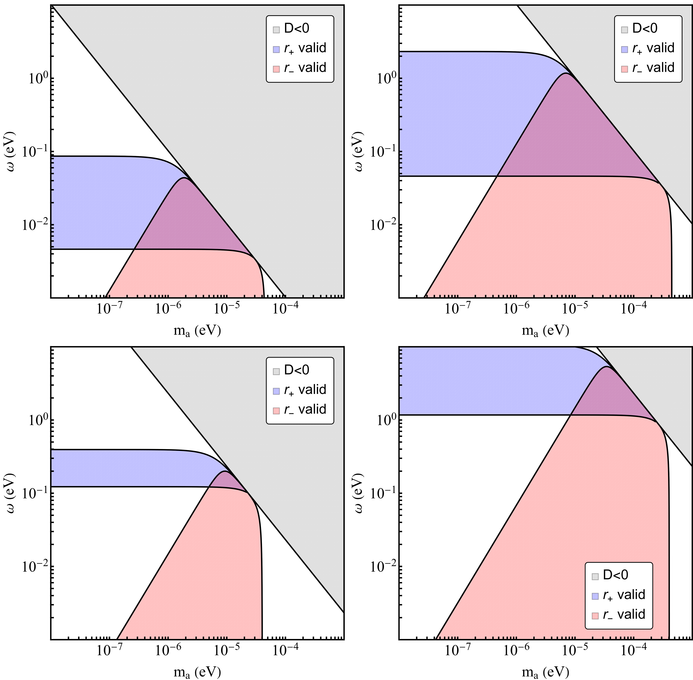
图注：Validity regime of the LZ formula for the two stars 4U 0142+61 (upper row) and B0656 (lower row) for two benchmark values of pair multiplicity, $\kappa=1$ (left column) and $\kappa=100$ (right column). We have set $\Omega t=0$.
对应解读：对应“建议重点查看的图表”第1、3、5项，以及“关键图表逐图导读”中的图1/图3：Landau-Zener有效性判据与参数空间有效区。
入选理由：这是全文最核心的诊断图，直接给出4U 0142+61和B0656在不同等离子体倍增因子κ下的LZ公式有效性区域，最能支撑日报强调的“共振宽度与转换区尺度比较”和“哪些参数区LZ失效”。它还同时展示了不同中子星和不同κ对有效区的影响，比单一概率曲线更适合作为读者判断近似适用性的入口图。
来源与置信度：\(arxiv_source\)；high；\(arxiv_source\) / vTS.tex:figure[1]
Fig02
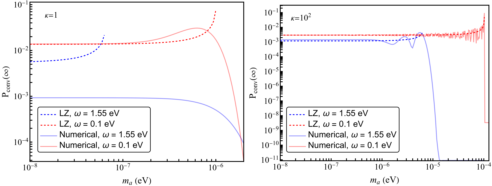
图注：Asymptotic conversion probability for two values of the photon frequency, $\omega=1.55$ eV and $\omega=0.1$ eV, and for two values of plasma multiplicity, $\kappa=1,10^2$. The neutron star parameters used correspond to magnetar 4U 0142+61, see Table~\(\ref{tab:neutronstars}.\) It is seen, that for $\kappa,\omega$ inside validity regimes of Fig.~\(\ref{fig:lzvalidity},\) the LZ result tracks the numerical, and overestimates conversion otherwise. In this figure we set $g_{a\gamma}= 10^{-21}\mathrm{eV}^{-1}$ and $\Omega t=0$.
对应解读：对应“建议重点查看的图表”第2、6项，以及“关键图表逐图导读”中的图2：Landau-Zener解析概率与数值积分概率对比。
入选理由：图注明确说明比较了渐近转换概率中LZ结果和数值结果，并指出在Fig01有效区内二者吻合、在失效区LZ会高估转换概率。这正是日报要求重点查看的P_{a→γ}^{LZ}与P_{a→γ}^{num}偏差诊断，比只展示有效区更直接说明近似失败会造成多大物理后果。
来源与置信度：\(arxiv_source\)；high；\(arxiv_source\) / vTS.tex:figure[2]
Fig05
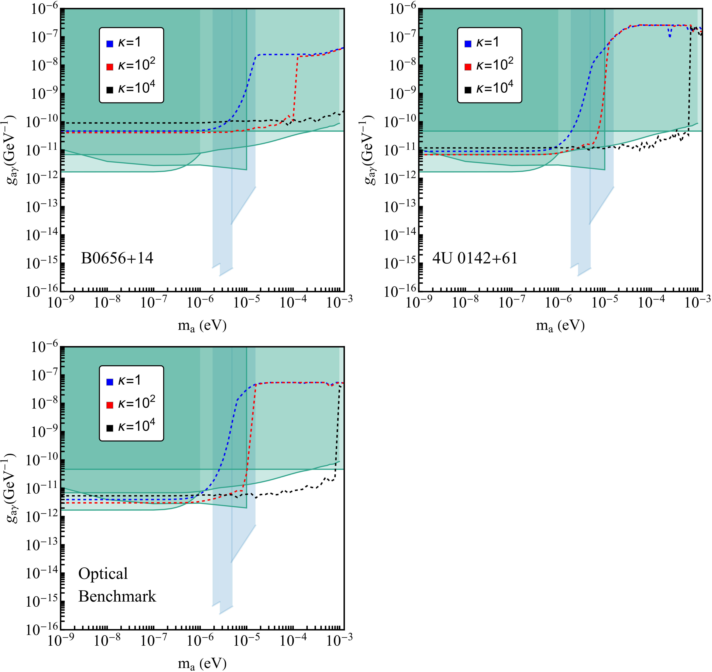
图注：Sensitivities of linear polarization optical searches from PSR B0656+14, magnetar 4U 0142+61 and an optical benchmark respectively under varying assumptions of plasma multiplicity $\kappa$. The existing constraints in various shades of green shown are from ADMX~\(\cite{ADMX:2018gho,ADMX:2019uok},\) RBF+UF~\(\cite{Wuensch:1989sa,Hagmann:1996qd},\) magnetic white dwarf polarization~\(\cite{Benabou:2025jcv},\) pulsar polar caps~\(\cite{Noordhuis:2022ljw}\) and Globular Clusters~\(\cite{Dolan:2022kul}.\)
对应解读：对应“建议重点查看的图表”第4项，以及“关键图表逐图导读”中的图4：光学偏振约束修正与其他实验/天体限制比较。
入选理由：这是将传播近似修正落实到观测约束的关键图，展示PSR B0656+14、4U 0142+61和光学基准情形下的线偏振搜索灵敏度，并与ADMX、白矮星偏振、球状星团等已有限制比较。它最能支撑日报关于重新评估中子星光学偏振轴子约束的结论。
来源与置信度：\(arxiv_source\)；high；\(arxiv_source\) / vTS.tex:figure[5]
Fig03
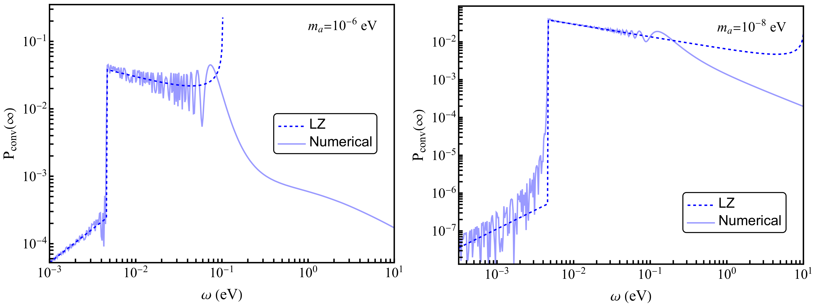
图注：Asymptotic conversion probability for two values of the axion mass, $m_a=10^{-6}$ eV and $m_a=10^{-8}$ eV. The neutron star parameters used correspond to magnetar 4U 0142+61, see Table~\(\ref{tab:neutronstars}.\) It is seen that for lower masses, the LZ result deviates from the numerical for intermediate values of $\omega$, corresponding to the gap between validity areas seen in Fig.~\(\ref{fig:lzvalidity}.\) We have set $g_{a\gamma}= 10^{-21}\mathrm{eV}^{-1}$ and $\Omega t=0$.
对应解读：对应“建议重点查看的图表”第2、3、6项，以及“关键图表逐图导读”中的图2/图3：不同轴子质量下转换概率随频率变化及LZ失效区。
入选理由：该图从另一个切片展示转换概率，对比两个轴子质量并说明低质量时LZ结果会在中间频率区间偏离数值解，且该偏离对应Fig01有效区之间的空隙。它能把有效性判据和实际概率误差联系起来，是Fig02的重要补充。
来源与置信度：\(arxiv_source\)；high；\(arxiv_source\) / vTS.tex:figure[3]
Fig04
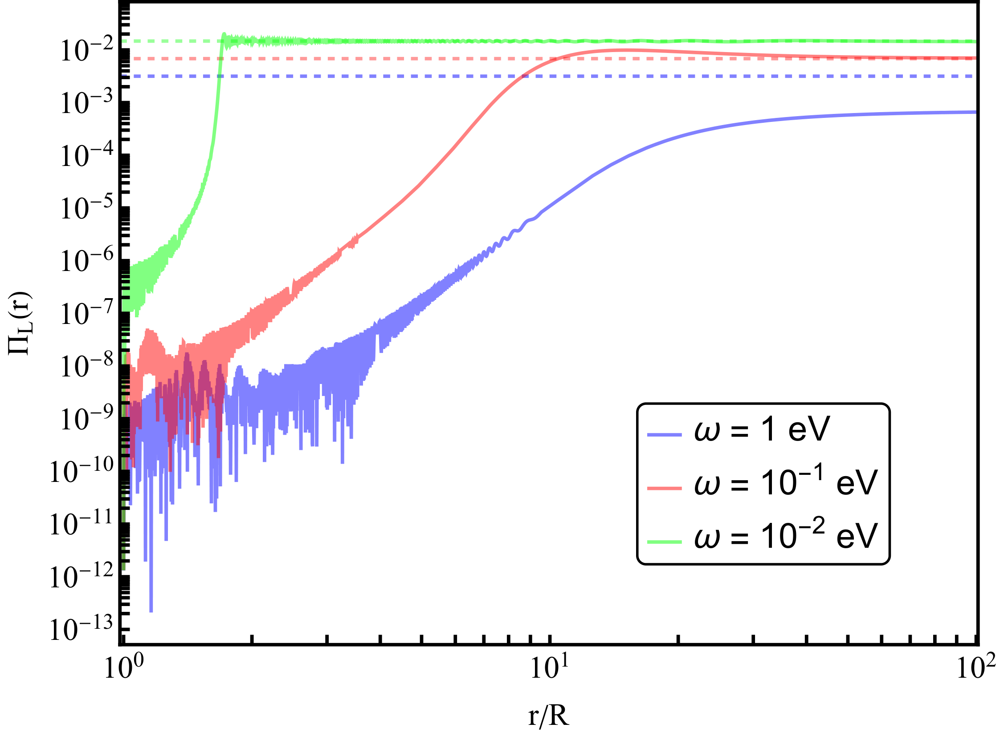
图注：Accumulation of linear polarization with distance due to the vacuum resonance. We have fixed $m_a=10^{-11}$ eV, $g_{a\gamma}=10^{-21} \,{\mathrm{eV}}^{-1}$, $\Omega t =0$, $\kappa=1$ and used the stellar parameters of magnetar 4U 0142+61 shown in Table~\(\ref{tab:neutronstars}.\) The dotted lines correspond to the LZ formula.
对应解读：对应“建议重点查看的图表”第4、6项，以及“模型拟合”段落中关于偏振传播、Stokes量和线偏振度随传播距离积累的讨论。
入选理由：该图展示真空共振导致的线偏振随距离积累，并用虚线标出LZ公式结果，直接连接传播概率误差与可观测偏振信号。虽然它不如Fig01、Fig02那样给出全局有效性或概率对比，但对理解为何LZ修正会影响光学偏振约束很有价值。
来源与置信度：\(arxiv_source\)；high；\(arxiv_source\) / vTS.tex:figure[4]
强相关工作
同类工作主要包括中子星磁层中的轴子暗物质射电转化、磁星或孤立中子星偏振约束、以及一般介质中的轴子—光子振荡理论。可检索关键词包括“axion photon conversion neutron star magnetosphere”、“Landau Zener axion photon mixing”、“Goldreich Julian plasma axion”、“neutron star optical polarization axion”。其中射电转化文献常聚焦暗物质轴子在 \(\omega\simeq m_a\) 附近产生窄线信号，而本文更关注毫米波到光学波段中解析共振概率的可靠性。
基础理论上，Raffelt 与 Stodolsky 的混合形式、Goldreich-Julian 磁层电荷密度、以及 Landau-Zener 跃迁理论是必须放在一起读的背景。潜在张力来自两个方向：一类研究倾向于用解析公式快速扫描轴子参数空间，另一类研究强调真实磁层和偏振传播需要数值处理。本文站在后者一边，但给出了一个实用折中：不是所有地方都必须数值算，只有尺度判据失败时才不能信 Landau-Zener。
同一事件 / 同类源线索：
相似工作：
基础理论 / 方法工作：
- https://doi.org/10.1103/PhysRevD.37.1237
- https://ui.adsabs.harvard.edu/abs/1969ApJ...157..869G/abstract
相反观点 / 张力线索：
（未提供）
8. Scattering of Strong Radio Waves by Particles in Strongly Magnetized Plasmas and Implications for Fast Radio Bursts
- 来源：arXiv / astro-ph.HE
- 链接：https://arxiv.org/abs/2606.31439v1
- 作者：Yuanhong Qu, Pawan Kumar
- 评分：novelty 8/10，importance 7/10，relevance 8/10，final 8.65/10
- 推荐理由：从强磁化等离子体中强射电波非线性散射出发，解释FRB如何逃逸磁星磁层；对FRB辐射传播和磁星高能环境有直接意义。
中文题目：强磁化等离子体中强射电波的粒子散射及其对快速射电暴逃逸的含义
做了什么：这篇论文研究快速射电暴的强振幅射电波在磁星磁层内穿过强磁化等离子体时，是否会被单个带电粒子的非线性散射严重耗散。作者从相对论单粒子运动方程出发，允许任意偏振和任意波矢—背景磁场夹角 \(\theta_B\)，计算 \(\mathrm{O}\) 模和 \(\mathrm{X}\) 模的散射截面与光深。主要结论是：在强磁化、近似沿磁场传播的极限下，粒子被射电波驱动后的相对论运动会显著压低散射截面，使光深低于 \(1\)；同时近似平行传播的 \(\mathrm{O}\) 模曲率辐射损失也被压低。论文进一步提出，磁星壳震激发的大振幅阿尔芬波可能把开放磁力线拉直，减小 \(\theta_B\)，从几何上帮助快速射电暴逃出磁层。
为什么重要：快速射电暴若起源于磁星磁层，必须解释一个直接但常被简化的问题：亮温极高的射电波为什么没有在源区附近被等离子体散射、吸收或诱导过程抹掉。本文的重要性在于它没有只用线性汤姆孙截面或小振幅近似，而是把大振幅波中粒子的相对论运动纳入计算，给出 \(\mathrm{O}\) 模、\(\mathrm{X}\) 模、传播角 \(\theta_B\)、强度参数 \(a\) 和回旋频率比 \(\omega_B/\omega\) 对逃逸条件的共同约束。
理论 / 观测 / 仪器方法价值：对理论而言，本文提供了一个连接强波单粒子动力学、模式依赖散射截面和磁星磁层光深的计算框架；对观测解释而言，它说明快速射电暴逃逸并不只取决于等离子体密度，还强烈取决于波是否沿开放磁力线近似平行传播；对方法而言，它提醒读者在极高亮温射电源中不能简单套用线性散射公式，必须检查 \(a\)、\(\theta_B\)、\(\omega_B/\omega\) 与粒子相对论响应。
为什么应该关注：如果你关心快速射电暴的辐射机制、磁星磁层传播效应、偏振模式选择或源区等离子体约束，这篇文章值得看。它把“磁星内禀能否产生强射电波”之外的另一个硬约束摆到台面：即使产生了，波也要能穿过几百到几千个恒星半径内的强磁化等离子体。本文给出的准平行逃逸图像，会影响我们如何理解快速射电暴的偏振、频谱透明度、活动窗口以及与磁星壳震或磁层重构的联系。
展开详细解读：文章讲解、背景、理论、重点章节、图表与相关工作
文章详细讲解
科学问题：快速射电暴的视亮温极高，若在磁星磁层内产生，其射电波在离开源区时会遇到强背景磁场和电子—正电子等离子体。传统线性散射估计通常假定波振幅小、粒子速度非相对论，得到的光深可能很大，从而对磁层起源模型构成挑战。本文要回答的是：当射电波本身强到足以强烈驱动粒子时，单粒子散射截面是否仍然像线性理论那样大？不同传播模式，尤其 \(\mathrm{O}\) 模和 \(\mathrm{X}\) 模，在强磁化、不同 \(\theta_B\) 下是否有不同逃逸条件？
作者怎么做：论文从单个带电粒子在外加背景磁场 \(\mathbf{B}_0\) 和强电磁波中的相对论运动方程出发，而不是把粒子响应限制在小扰动。波的偏振和传播方向保持一般性，关键控制量包括无量纲波强度 \(a\)、波频率 \(\omega\)、非相对论回旋频率 \(\omega_B\)、以及波矢与背景磁场夹角 \(\theta_B\)。作者求解粒子轨道后计算辐射功率，由入射波能流归一化得到有效散射截面，再沿磁层路径积分得到散射光深。这样的处理让非线性相对论效应直接进入 \(\sigma\) 和 \(\tau\)，避免了把强波问题误当成线性介质问题。
关键结果：论文发现 \(\mathrm{O}\) 模散射截面在某些条件下可超过 \(\mathrm{X}\) 模，特别是当 \(a\sin\theta_B<\omega_B/\omega\) 时；当 \(a\sin\theta_B>\omega_B/\omega\) 时，两者变得可比。不过在强磁化并且准平行传播的极限中，截面会回到线性标度的渐近形式，同时由于粒子相对论运动而被强烈抑制，使得典型磁层参数下的单粒子散射光深远小于 \(1\)。对 \(\mathrm{O}\) 模，作者还讨论了曲率辐射损失，指出准平行传播时曲率损失也显著降低，因此中等对产生倍增因子下射电波仍可逃逸。
局限和下一步：本文核心是单粒子散射和由此估算的光深，因此还不是完整的等离子体集体传播计算。实际磁星磁层中可能存在密度团块、时间依赖电流片、非均匀对等离子体、模式耦合、诱导康普顿散射以及波包有限带宽等效应。作者提出大振幅阿尔芬波能把磁力线拉直、减小 \(\theta_B\)，这是一个有吸引力的几何逃逸机制，但仍需要全球磁层动力学模拟或辐射转移计算来检验。下一步值得做的是把本文的非线性截面嵌入三维磁层结构，预测偏振、频率依赖透明度和爆发相位选择。
关键结果是怎么做出来的
本文最核心的证据链不是来自天文样本统计，而是来自一套可控的理论计算：先选定强磁化磁星磁层中单粒子与大振幅射电波相互作用的局部问题，再把局部散射截面投影到磁层传播光深。样本量意义上的“事件数”在这里不适用；真正的参数样本是 \(a\)、\(\theta_B\)、\(\omega_B/\omega\)、传播模式和等离子体倍增因子等物理参数空间。读者应把论文中的参数扫描图看成“理论实验”的结果，而不是观测点拟合。
作者首先解相对论运动方程，得到粒子在强波中的周期性或准周期性响应。散射截面的计算依赖粒子加速度所产生的辐射功率，并用入射波能流归一化。重要的是，粒子在强波中获得显著纵向或横向漂移后，辐射功率和有效截面不再按普通 \(\sigma_T\) 缩放；这正是论文能够降低磁层光深的物理来源。支撑这一点的图通常会展示 \(\sigma/\sigma_T\) 随 \(a\)、\(\theta_B\) 或 \(\omega_B/\omega\) 的变化，并比较 \(\mathrm{O}\) 模与 \(\mathrm{X}\) 模。
显著性在本文中应理解为标度和渐近极限的一致性，而不是 \(p\) 值。作者检查强磁化、准平行、小振幅或大振幅等极限，确认截面在相应条件下回到已知线性标度，随后展示非线性相对论运动如何进一步抑制散射。模型比较主要体现在 \(\mathrm{O}\) 模与 \(\mathrm{X}\) 模、准平行与非准平行、强波与线性波之间的截面和光深对比。如果论文图中有不同线型，读者应关注它们是否在 \(a\sin\theta_B\sim\omega_B/\omega\) 附近发生分界。
光深结果的证据链通常是把局部截面 \(\sigma(r)\)、粒子密度 \(n(r)\) 和路径长度积分起来。关键表或图应给出 \(\tau\) 随半径、倍增因子或传播角的变化，并显示在准平行开放磁力线区域 \(\tau<1\)。这里的系统误差主要来自磁层密度模型、磁场几何、波的真实传播角、以及是否可用单粒子辐射近似代表集体等离子体响应。稳健性检验应看结论是否只依赖某个精细调节角度，还是在一段合理 \(\theta_B\) 和倍增因子范围内都成立。
论文关于曲率辐射损失的部分是第二条证据链。\(\mathrm{O}\) 模含有沿 \(\mathbf{B}_0\) 的电场分量，直觉上可能更容易驱动粒子沿弯曲磁力线辐射而损耗能量；作者指出若传播准平行且磁力线被大振幅阿尔芬扰动拉直，有效曲率和横向加速度都会减小，从而降低损失。读者应检查这一部分是否把曲率半径、传播角和波能流放在同一量纲比较中，而不只是定性宣称“准平行所以透明”。
展开背景、理论、公式、模型、章节和图表导读
背景知识
快速射电暴是毫秒尺度、亮温极高的射电瞬变。许多模型把其中央引擎与磁星联系起来，理由包括银河系磁星 \(\mathrm{SGR}\ 1935+2154\) 的射电暴、快速射电暴的高法拉第旋转环境、重复暴活动性以及磁星能量预算。若辐射来自磁层内部或近磁层区域，射电波必须穿过强磁场和高密度对等离子体，这使传播效应成为辐射机制之外的核心约束。
历史上，磁星磁层中的射电透明度问题常用线性等离子体响应、汤姆孙散射、诱导康普顿散射或模式传播条件来估计。这些估计很有用，但面对快速射电暴的巨大电磁波振幅时可能失效。原因是粒子在波场中不再只做小幅受迫振荡，而可能被加速到相对论速度；一旦粒子运动本身改变辐射功率和散射方向，线性截面就不能直接外推。
强磁化环境又带来另一个关键复杂性：电磁波相对于背景磁场的传播角 \(\theta_B\) 和偏振模式会决定粒子能否被有效驱动。通常 \(\mathrm{X}\) 模电场垂直于 \(\mathbf{k}\)-\(\mathbf{B}_0\) 平面，\(\mathrm{O}\) 模电场位于该平面内，因此两种模式与磁场方向的耦合不同。在 \(\omega_B\gg\omega\) 的磁星条件下，粒子横跨磁场运动被强烈限制，但沿磁场方向的运动仍可能很重要。
为什么现在值得重新看？一方面，快速射电暴观测已从“是否存在”转向偏振、重复性、环境和源区约束；另一方面，磁星模型必须给出可逃逸的射电通道，而不能只给出能量来源。本文把强波非线性响应和开放磁力线几何放在一起，正好对应这个阶段的问题：哪些磁层区域和传播方向允许射电波保持低光深？
该领域常见误区包括：把 \(\sigma_T\) 当作强磁场强波中的通用截面；认为只要磁场足够强就一定透明；或反过来认为高等离子体密度必然阻止所有磁层内射电辐射。实际情况取决于 \(a\)、\(\theta_B\)、\(\omega_B/\omega\)、密度倍增因子、模式构成和磁力线曲率的组合。本文的价值正在于把这些量放到同一个物理框架中。
基础理论 / 方法脉络
基础图像是：一束频率为 \(\omega\) 的强射电波穿过背景磁场 \(\mathbf{B}_0\) 和稀薄带电粒子。粒子在波电场中被加速，产生再辐射；再辐射功率除以入射能流定义有效散射截面。在线性弱波极限，这一过程给出汤姆孙散射或强磁化修正截面；在快速射电暴强波中，粒子速度可能相对论化，截面必须从完整运动重新计算。
论文中的关键无量纲量是强度参数 \(a=eE/(m_ec\omega)\)，它衡量一个电子在一个波周期内可获得的动量相对于 \(m_ec\) 的大小。另一个关键量是 \(\omega_B/\omega=eB_0/(m_ec\omega)\)，它衡量背景磁场对横向运动的束缚强度。第三个关键量是 \(\theta_B\)，即波矢 \(\mathbf{k}\) 与 \(\mathbf{B}_0\) 的夹角。组合量 \(a\sin\theta_B\) 与 \(\omega_B/\omega\) 的比较决定强波驱动与磁场约束谁更重要。
模式方面，\(\mathrm{X}\) 模和 \(\mathrm{O}\) 模不能简单等同于“弱耦合”和“强耦合”。在强磁化极限下，\(\mathrm{X}\) 模的横向电场驱动会因回旋运动受限而被压低；\(\mathrm{O}\) 模因有沿磁场方向的电场分量，可能更有效地驱动粒子，尤其在传播角不是极小时。但当传播准平行、\(\sin\theta_B\) 很小，\(\mathrm{O}\) 模的危险通道也会被压制。
观测或天体物理应用中，局部截面还要转化为磁层光深。需要给定磁场随半径衰减、粒子密度分布、对产生倍增因子和路径长度。即使局部 \(\sigma\) 很小，若密度很高或路径很长仍可能 \(\tau>1\)；反之，在开放磁力线、低 \(\theta_B\) 和相对论抑制同时存在时，\(\tau\) 可低于 \(1\)。因此本文的逃逸条件本质上是几何和动力学共同决定的。
常见退化包括：较低密度与较小截面都能降低 \(\tau\)，较小 \(\theta_B\) 与较大 \(\omega_B/\omega\) 都能压制横向响应，较大的 \(a\) 既可能增强非线性驱动又可能通过相对论运动改变辐射效率。系统误差则来自磁层模型是否近似偶极、开放场线是否被阿尔芬波拉直、以及单粒子截面是否可直接用于具有集体模和相干波包的等离子体。
公式与推导
第一步定义强波问题的两个基本频率和强度量。对电荷量 \(e\)、电子质量 \(m_e\)、背景磁场 \(B_0\)、波电场振幅 \(E_w\) 和角频率 \(\omega\)，有
这里 \(\omega_B\) 衡量磁场束缚，\(a\) 衡量波在一个周期内给粒子的无量纲冲量。快速射电暴近源区通常可能满足 \(a\gtrsim1\) 且 \(\omega_B/\omega\gg1\)。
第二步从相对论洛伦兹方程出发，而不是线性化粒子速度：
其中 \(\gamma=(1-v^2/c^2)^{-1/2}\)，\(\mathbf{B}_w\) 是波磁场。本文的核心计算就是在给定偏振和 \(\theta_B\) 下求解这条方程得到 \(\mathbf{v}(t)\) 与加速度。
第三步，入射波能流可写为
若采用高斯单位且近似平面波。粒子再辐射功率 \(P_{\rm rad}\) 与 \(F_w\) 的比值给出有效散射截面：
这一定义适用于线性和非线性情形，区别在于 \(P_{\rm rad}\) 必须由真实相对论轨道给出。
第四步，相对论加速电荷的辐射功率可用 Liénard 形式表达：
这说明即使外场相同，粒子的 \(\gamma\)、加速度方向和速度方向都会改变辐射效率；强波导致的相对论漂移可以显著改变 \(\sigma_{\rm sc}\)。
第五步，在强磁化线性极限，横向受迫运动被回旋频率压制，典型标度可写成
其中 \(\sigma_T=8\pi e^4/(3m_e^2c^4)\) 是汤姆孙截面。这个式子给出 \(\mathrm{X}\) 模在 \(\omega_B\gg\omega\) 时透明的直观原因。
第六步，\(\mathrm{O}\) 模含有与 \(\mathbf{B}_0\) 相关的投影，非线性分界由波驱动的横向有效强度和磁约束比较给出：
当左边小于右边时，磁场仍主导粒子运动，\(\mathrm{O}\) 模和 \(\mathrm{X}\) 模截面可有明显差异；当左边超过右边时，强波驱动足以改变轨道，两种模式截面趋于可比。
第七步，局部截面转化为逃逸问题要积分光深：
这里 \(n_e(r)\) 是沿路径的粒子密度，\(ds\) 是路径元。快速射电暴可逃逸的必要条件是 \(\tau_{\rm sc}<1\)。
第八步，若用 Goldreich-Julian 密度和倍增因子 \(\mathcal{M}\) 估计磁层密度，可写为
其中 \(\Omega\) 是磁星自转角速度。这个关系把理论截面与磁层参数连接起来，也显示 \(\mathcal{M}\) 是光深估计的主要不确定性之一。
第九步，对 \(\mathrm{O}\) 模的曲率损失，可用曲率辐射功率标度检查：
其中 \(\rho_c\) 是粒子轨道或磁力线的有效曲率半径。准平行传播和阿尔芬波拉直磁力线都会增大有效 \(\rho_c\) 或减小横向加速度，从而降低 \(P_{\rm curv}\)，这对应本文关于 \(\mathrm{O}\) 模逃逸的第二个关键判断。
模型拟合 / 应用方法
本文不是传统意义上对观测数据做参数拟合，而是对强波—粒子系统做理论参数扫描和渐近标度检验。拟合量可理解为局部散射截面 \(\sigma_{\rm sc}\)、模式比值 \(\sigma_O/\sigma_X\)、磁层散射光深 \(\tau_{\rm sc}\) 和曲率损失效率。自变量包括 \(a\)、\(\theta_B\)、\(\omega_B/\omega\)、等离子体倍增因子 \(\mathcal{M}\)、磁场强度和传播路径。
如果把本文框架用于观测约束，似然可以围绕“射电波能否逃逸”或“频谱是否被散射改写”构造。例如观测到某频段爆发，就要求该频段在源区参数下满足 \(\tau_{\rm sc}(\nu)<1\)；若多个频率同时逃逸，则 \(\tau\) 的频率依赖也受限。但这种反推会有强退化：较小 \(\mathcal{M}\)、较小 \(\theta_B\)、较大 \(\omega_B/\omega\)、更外侧辐射半径都可降低光深。
残差诊断在理论图中表现为渐近极限是否匹配。读者应看数值截面在小 \(a\) 或强磁化极限下是否回到线性理论，在 \(\theta_B\to0\) 时是否表现出准平行抑制，在 \(a\sin\theta_B\sim\omega_B/\omega\) 附近是否平滑过渡。如果某些图只显示有限参数点，应警惕插值区域是否足够覆盖典型快速射电暴磁层参数。
主要系统误差有四类。第一是磁层密度：\(\mathcal{M}\) 可跨越许多数量级，且爆发期间未必等于稳态值。第二是几何：开放场线的真实 \(\theta_B\) 受辐射点、场线弯曲和磁层重构影响。第三是等离子体集体效应：单粒子截面不一定捕捉模式转换、诱导散射或非线性波破裂。第四是波形：真实快速射电暴是有限带宽、短时、可能高度相干的波包，而非无限单色平面波。
实际应用中，本文框架最适合做“透明度先验”：给定一个磁星辐射模型，先检查射电波是否沿开放磁力线准平行传播，是否满足低 \(\tau\)，再谈能否解释观测亮度和偏振。它也可用于区分源区高度模型：若辐射发生在更内侧，\(\omega_B/\omega\) 大但密度也可能大；若发生在更外侧，密度低但几何和模式耦合不同。
重点章节 / 结果段落怎么读
第一，数据/问题设定部分应先看作者如何定义强波、背景磁场和传播角。重点是 \(a\)、\(\omega_B/\omega\)、\(\theta_B\)、\(\mathrm{O}\) 模与 \(\mathrm{X}\) 模的约定，因为后文所有截面比较都依赖这些定义。
第二，单粒子运动方程和求解方法是全篇技术核心。读者应检查作者是否保留相对论 \(\gamma\)、是否允许任意偏振和传播角、以及如何从粒子轨道计算辐射功率。这里决定了论文相对于线性散射估计的新增物理。
第三，散射截面结果部分最值得细读。建议跟踪 \(\sigma_O\) 和 \(\sigma_X\) 随 \(a\sin\theta_B\) 与 \(\omega_B/\omega\) 的变化，尤其是分界 \(a\sin\theta_B<\omega_B/\omega\) 与 \(a\sin\theta_B>\omega_B/\omega\) 两侧的行为。
第四，磁层光深和快速射电暴逃逸应用部分要看参数选择是否合理。关注作者采用的磁场、密度、倍增因子和路径长度，以及 \(\tau<1\) 是否只在极端条件下成立。
第五，曲率辐射损失和阿尔芬波拉直磁力线的讨论是物理解读重点。读者应把它看作从局部散射计算走向全球磁层几何的桥梁，同时注意这部分比单粒子动力学更模型依赖。
建议重点查看的图表
-
粒子轨道或洛伦兹因子随相位变化图：看强波是否使粒子进入相对论运动，以及 \(\mathrm{O}\) 模和 \(\mathrm{X}\) 模响应有何差异。
-
散射截面 \(\sigma/\sigma_T\) 随 \(a\) 的图：重点看小 \(a\) 极限是否回到线性标度，大 \(a\) 时是否出现相对论抑制。
-
散射截面随 \(\theta_B\) 或 \(a\sin\theta_B\) 的图：检查分界 \(a\sin\theta_B\sim\omega_B/\omega\) 附近两种模式的相对大小。
-
\(\mathrm{O}\) 模与 \(\mathrm{X}\) 模截面对比图：看 \(\sigma_O/\sigma_X\) 在不同强磁化参数下是否稳定，以及是否存在模式选择效应。
-
磁层光深 \(\tau\) 随半径或倍增因子变化图：这是逃逸结论的关键，需确认 \(\tau<1\) 的区域是否覆盖合理磁星参数。
-
曲率辐射损失或能量损耗效率图：看准平行传播如何降低 \(\mathrm{O}\) 模损失，以及曲率半径假设是否敏感。
-
阿尔芬波拉直磁力线的示意或参数图：如果有，应检查所需阿尔芬波振幅是否接近或超过背景磁场，是否能由壳震能量预算支持。
关键图表逐图导读
图 1：通常应是几何和模式定义图。横轴和纵轴可能不是数据坐标，而是展示 \(\mathbf{k}\)、\(\mathbf{B}_0\)、\(\theta_B\)、\(\mathrm{O}\) 模电场和 \(\mathrm{X}\) 模电场的相对方向。读图陷阱是不要把 \(\mathrm{O}\) 模简单理解为总是不能逃逸；它的耦合强弱取决于 \(\theta_B\) 和强磁化参数。
图 2：若展示粒子动力学，横轴多为波相位或时间，纵轴为速度分量、动量分量或 \(\gamma\)。模型线应区分不同 \(a\)、\(\theta_B\) 或偏振。重点看粒子是否出现相对论漂移，以及加速度方向是否与速度方向近似平行，因为这会影响辐射功率。
图 3：散射截面随 \(a\) 或 \(\omega_B/\omega\) 的图是核心结果之一。纵轴通常为 \(\sigma/\sigma_T\)，横轴为强度或磁化参数。读者应看数值曲线在弱波端是否接上线性标度，在强波端是否低于简单外推；不要只比较曲线高低，还要看标度斜率。
图 4：\(\mathrm{O}\) 模和 \(\mathrm{X}\) 模对比图应重点检查 \(a\sin\theta_B\) 这个组合量。若横轴是 \(\theta_B\)，不同 \(a\) 的曲线可能在相同 \(a\sin\theta_B\) 附近表现类似。陷阱是把某一固定角度结果推广到整个开放场线区。
图 5：光深 \(\tau\) 随半径、频率或倍增因子的图直接支撑“可逃逸”。横轴若为半径，需看积分从何处开始；纵轴若为 \(\tau\)，\(\tau=1\) 的水平线是透明/不透明分界。读者应关注置信带或参数带宽，而不只看一条基准模型线。
图 6：曲率损失图若存在，通常显示损失时间、损失光深或 \(P_{\rm curv}\) 与波能流的比值。关键是准平行传播和较大曲率半径是否把损失压到可忽略。读图陷阱是忽略 \(\rho_c\) 的模型依赖，因为磁力线是否被拉直并非局部单粒子计算自动保证。
论文原图 / 可嵌入图片
Fig08
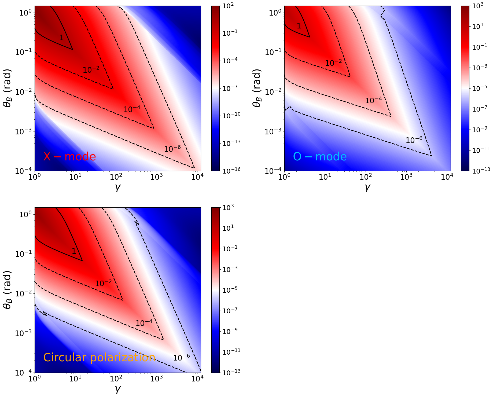
图注：Scattering optical depth $\tau$ as a function of $\gamma$ and $\theta_B$ for X-mode (left), O-mode (middle), and circularly polarized waves (right), computed for $a_{\rm LP}=10^4$ ($a_{\rm CP}=a_{\rm LP}/\sqrt{2}$) and $\omega_B'/\omega'=35$. Black solid curves denote $\tau = 1$, dashed curves correspond to $\tau = 10^{-2}, 10^{-4},$ and $10^{-6}$, as labeled. The optical depth decreases outside each contour curve, i.e., regions enclosed by a given curve correspond to optical depths larger than the value indicated on that curve. Since $\tau \propto \xi$, these four curves are also effective $\tau = 1$ curves for three multiplicity values $\xi = 1, 10^2, 10^4, 10^6$, respectively. The spin period of the magnetar is $P=3 \ \rm s$.
对应解读：对应“建议重点查看的图表”第5项和“关键图表逐图导读”图5：磁层散射光深 \(\ au\) 与逃逸条件，以及模型拟合段落中的 (\ au_{\
m sc}<1) 透明度先验。
入选理由：这是直接支撑论文核心结论“强磁化准平行传播下光深可远小于1、FRB可逃逸”的关键图。图中同时比较X模、O模和圆偏振波，并给出\(\ au=1,10^{-2},10^{-4},10^{-6}\)等轮廓，可直接判断不同\(\gamma\)、\(\ heta_B\)和倍增因子\(\xi\)下的透明/不透明区域，比单纯截面图更接近天体物理结论。
来源与置信度：\(arxiv_source\)；high；\(arxiv_source\) / main.tex:figure[8]
Fig05
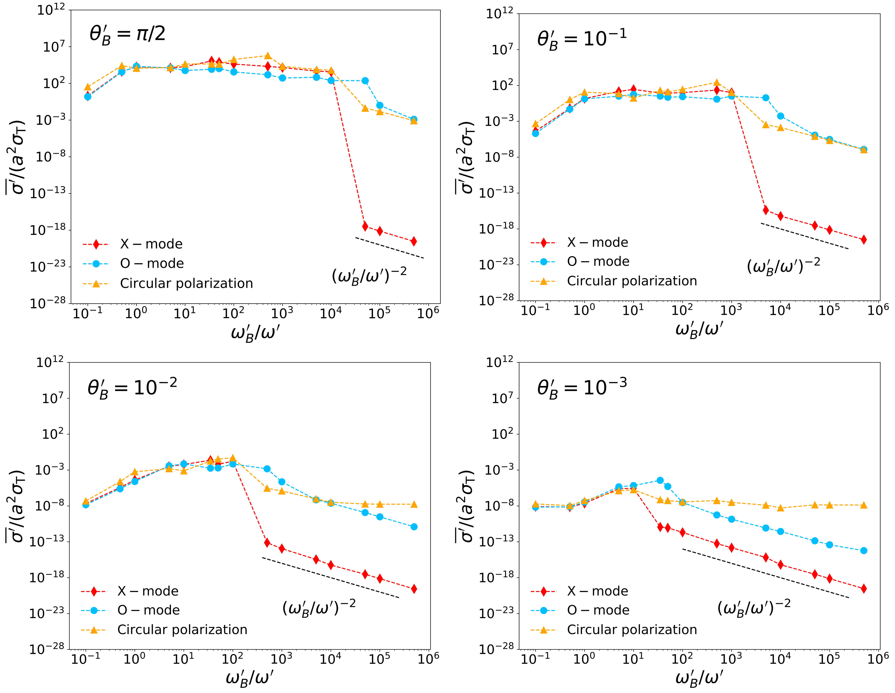
图注：The normalized scattering cross section $\overline{\sigma'}/(a^2\sigma_{\rm T})$ as a function of $\omega'_B/\omega'$ for different propagation angles $\theta'_B$. The four panels correspond to $\theta'_B = \pi/2, 10^{-1}, 10^{-2}, 10^{-3}$ (from top left to bottom right). Red, blue, and orange curves denote X-mode, O-mode, and circularly polarized waves, respectively. The black dotted lines indicate the characteristic scalings in different regimes: $\sigma' \propto (\omega'_B/\omega')^{3}$ in the nonlinear regime and $\sigma'\propto (\omega_B'/\omega')^{-2}$ in the linear regime. Wave strengths $a_{\rm LP}=10^4$ and $a_{\rm CP}=a_{\rm LP}/\sqrt{2}$ are adopted for linearly and circularly polarized waves, respectively.
对应解读：对应“建议重点查看的图表”第2、3、4项和“关键图表逐图导读”图3、图4：散射截面随强磁化参数变化、O模/X模/圆偏振对比、非线性与线性渐近标度。
入选理由：该图展示归一化散射截面随\(\omega'_B/\omega'\)的变化，并分不同\(\ heta'_B\)面板比较X模、O模和圆偏振波；黑色虚线还标出\(\sigma'\propto(\omega'_B/\omega')^3\)和\((\omega'_B/\omega')^{-2}\)等特征标度。它最适合检验日报强调的小振幅/强磁化线性极限、强波非线性区以及模式选择效应。
来源与置信度：\(arxiv_source\)；high；\(arxiv_source\) / main.tex:figure[5]
Fig06
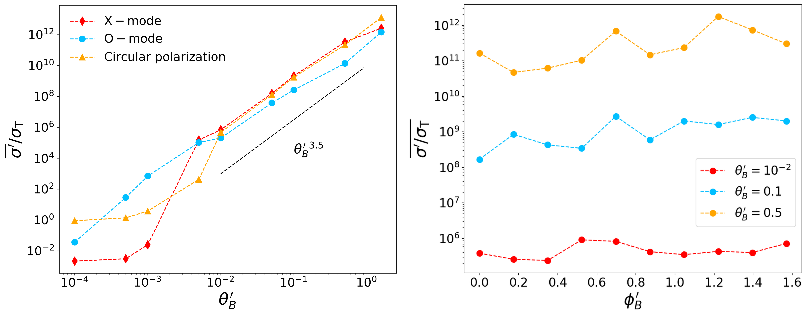
图注：The normalized cross section $\overline{\sigma'}/\sigma_{\rm T}$ as a function of $\theta_B'$ (left panel) and $\phi_B'$ (right panel). Following parameters are adopted: $a_{\rm LP}=10^4$, $a_{\rm CP}=a_{\rm LP}/\sqrt{2}$, and $\omega_B'/\omega'=35$.
对应解读：对应“建议重点查看的图表”第3、4项和“关键图表逐图导读”图4：散射截面随\(\ heta_B\)及方位角变化，检查准平行传播和模式差异。
入选理由：该图直接以\(\ heta'_B\)和\(\phi'_B\)为横轴展示归一化截面，是判断几何角度对散射抑制影响的核心图。日报中特别提醒不能把固定角度结果推广到整个开放场线区，此图正好展示角度依赖，并可辅助理解\(a\sin\ heta_B\)控制量附近的模式行为。
来源与置信度：\(arxiv_source\)；high；\(arxiv_source\) / main.tex:figure[6]
Fig04
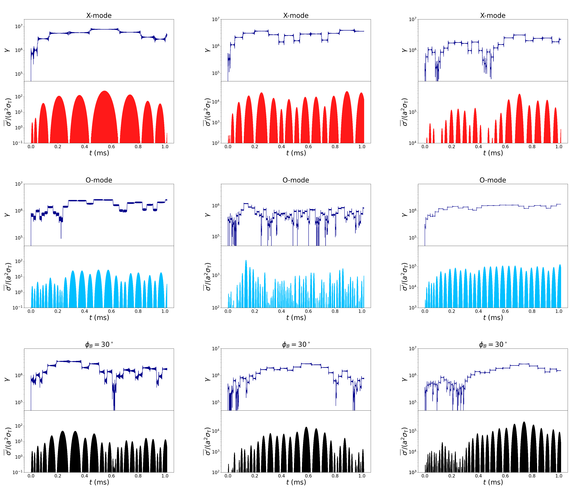
图注：The electron Lorentz factor (upper subpanel) and normalized scattering cross section (lower subpanel) as a function of time for different $\theta_{B}'=0.1, 0.5, \pi/2$ for left, central and right panels, respectively. The non-linear parameter $a=10^4$ and $\omega_B'/\omega'=35$ are adopted for all panels.
对应解读：对应“建议重点查看的图表”第1项和“关键图表逐图导读”图2：粒子洛伦兹因子和散射截面随时间变化，展示强波驱动下的相对论运动。
入选理由：该图同时给出电子洛伦兹因子和归一化散射截面随时间的演化，并比较\(\ heta'_B=0.1,0.5,\pi/2\)。它能直观看到强波是否把粒子驱动到相对论状态，以及这种相对论运动如何调制瞬时散射截面，是理解非线性抑制机制的动力学证据。
来源与置信度：\(arxiv_source\)；high；\(arxiv_source\) / main.tex:figure[4]
Fig03
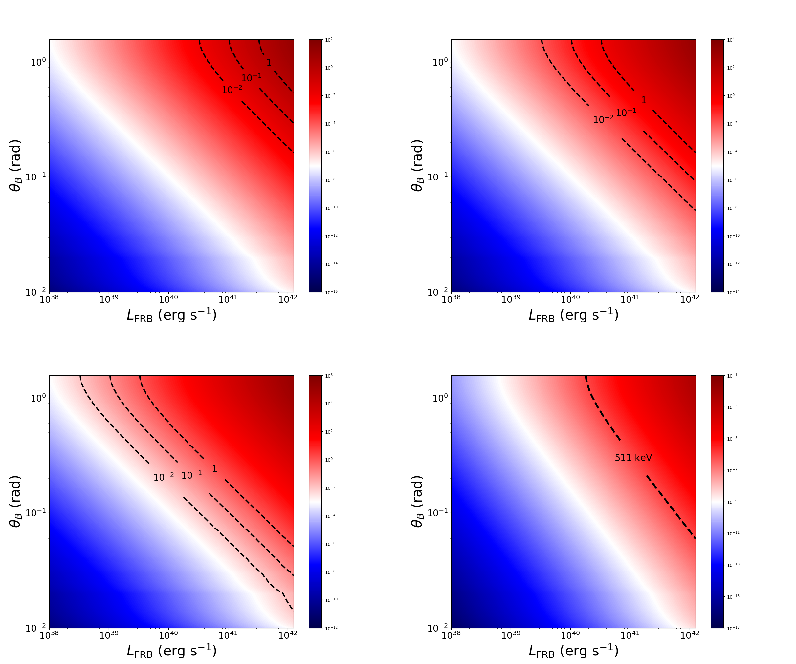
图注：Total emitted curvature-radiation energy (color scale; upper left, upper right, and lower left panels) and characteristic energy of curvature photons (lower right panel) as functions of the FRB luminosity $L_{\rm FRB}$ for O-mode waves and the propagation angle $\theta_B$. The upper left, upper right, and lower left panels correspond to $\xi=10^2$, $10^4$, and $10^6$, respectively. The three black dashed contours indicate the fractional energy loss due to curvature radiation, defined as $f_{\rm cur}=E_{\rm cur}/E_{\rm frb}$, with levels $10^{-2}$, $10^{-1}$, and $1$. The black dashed line in the lower right panel marks the location where the characteristic photon energy reaches $m_e c^2 = 511 \ \rm keV$. Following parameters are adopted: FRB time duration $\Delta t_{\rm frb}=1 \ \rm ms$, magnetar spin $P=1 \ \rm s$, magnetar surface magnetic field $B_\star=10^{15} \ \rm G$ and radius $R_\star=10^6 \ \rm cm$.
对应解读：对应“建议重点查看的图表”第6项和“关键图表逐图导读”图6：O模曲率辐射损失、能量损耗效率和准平行传播的影响。
入选理由：该图展示O模曲率辐射总能量、特征光子能量与(L_{\
m FRB})、\(\ heta_B\)及\(\xi\)的关系，并标出(f_{\
m cur}=10^{-2},10^{-1},1)等能量损失等值线。它直接支撑日报中关于准平行传播降低O模曲率损失、使中等倍增因子下射电波仍可逃逸的讨论。
来源与置信度：\(arxiv_source\)；high；\(arxiv_source\) / main.tex:figure[3]
Fig01
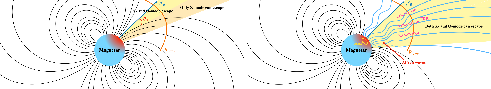
图注：Top panel: In a static dipolar magnetic field, both X- and O-mode waves can escape from the magnetosphere in regions close to the magnetic moment, where the wave vector is nearly quasi-parallel to the background magnetic field (yellow region). In regions farther from the magnetic moment (orange region), only X-mode waves can escape, since O-mode waves undergo stronger nonlinear scattering when propagating obliquely at radii $r > R_{\rm E,frb}$. Bottom panel: The background magnetic field is dynamically evolved. Alfv\'en waves (blue wiggler) can be excited by magnetar crustal quakes near the stellar surface. As they propagate outward, the Alfv\'en waves become nonlinear at $R_{\rm E,aw}$, causing the background dipolar magnetic field to open up and approach a monopolar configuration. In this quasi-parallel geometry, both X- and O-mode waves are able to escape.
对应解读：对应“建议重点查看的图表”第7项和“关键图表逐图导读”图1：磁层几何、准平行开放场线区以及阿尔芬波拉直磁力线的示意。
入选理由：该图虽然是示意图而非数值诊断图，但它概括了论文提出的几何逃逸机制：静态偶极场中O模仅在近磁矩准平行区域容易逃逸，而大振幅阿尔芬波可打开并拉直磁力线，使X模和O模都能在准平行几何中传播。它有助于读者把截面和光深结果放入磁星磁层结构中理解。
来源与置信度：\(arxiv_source\)；high；\(arxiv_source\) / main.tex:figure[1]
强相关工作
这篇工作属于快速射电暴磁星起源和磁层传播效应的交叉方向。应把它与 \(\mathrm{SGR}\ 1935+2154\) 的银河系快速射电暴对应体、磁星磁层相干辐射模型、诱导散射透明度研究、以及强磁化等离子体中普通模/非常模传播理论放在一起读。检索关键词可用 “fast radio burst magnetar magnetosphere scattering strong wave”, “FRB induced Compton scattering magnetosphere”, “ordinary extraordinary mode strongly magnetized plasma”, “SGR 1935+2154 radio burst”。
与可能的相反观点相比，本文更乐观地认为强波准平行传播可降低单粒子散射损失；而一些传播约束研究强调源区附近的诱导散射、等离子体频率截止或高倍增因子会使内磁层不透明。这并不一定矛盾，因为它们处理的微物理过程和几何条件不同。后续应检索同类工作中对 \(\tau_{\rm ind}\)、模式转换、磁层电流片和外磁层辐射半径的讨论，比较它们对 \(\theta_B\)、\(\mathcal{M}\) 和发射高度的要求。
同一事件 / 同类源线索：
- https://arxiv.org/abs/2606.31439
- https://arxiv.org/pdf/2606.31439
- https://arxiv.org/abs/2005.10828
- https://arxiv.org/abs/2005.10830
- https://arxiv.org/abs/2005.10324
相似工作：
基础理论 / 方法工作：
- https://ui.adsabs.harvard.edu/abs/1969ApJ...157..869G/abstract
- https://ui.adsabs.harvard.edu/abs/1977ApJ...217..227R/abstract
- https://arxiv.org/abs/1906.05878
相反观点 / 张力线索：
9. Photoionization of the Composite Nebula Surrounding NGC 5408 X-1: Implications for Beamed Emission
- 来源：arXiv / astro-ph.HE
- 链接：https://arxiv.org/abs/2606.31111v1
- 作者：Jing Guo, Hua Feng, Roberto Soria, Fuyan Bian, Jianfeng Wu, Lian Tao, Jesús M. Corral-Santana
- 评分：novelty 8/10，importance 8/10，relevance 7/10，final 8.65/10
- 推荐理由：对NGC 5408 X-1 ULX星云进行IFU和Cloudy光电离建模，提出X/EUV相对视线方向温和束射；对超临界吸积和ULX辐射几何有清晰观测约束。
中文题目：NGC 5408 X-1 周围复合星云的光致电离：对束流辐射的约束
做了什么：这篇文章用新的积分视场光谱、历史长缝光谱和 HST 成像重新分析了著名超亮 X 射线源 NGC 5408 X-1 周围的星云。作者确认星云不是单一结构，而是由靠近 ULX 的小尺度 He III 光致电离区和更大、更壳状的 H II 区组成；宽的 He II 发射则是点源状，最可能来自 ULX 双星系统本身。关键结果是：如果直接采用由光学、紫外和 X 射线拟合得到的各向同性 SED，总光度约为 \(2.4\times10^{40}\ {\rm erg\ s^{-1}}\)，Cloudy 模型会把 He III 区的大小和亮度都预测得过大；只有把同一 SED 形状的电离光度降到约 \(1.0\times10^{39}\ {\rm erg\ s^{-1}}\)，再加一个温度 \(30000\ {\rm K}\)、光度 \(1.3\times10^{39}\ {\rm erg\ s^{-1}}\) 的黑体成分，才能同时解释 He III 区和 H II 区。这意味着我们沿视线看到的 EUV/X 射线辐射可能比星云实际接收到的平均辐射强约 \(24\) 倍，支持超临界吸积中的温和束流图像。
为什么重要：NGC 5408 X-1 是研究 ULX 几何结构和超爱丁顿吸积的基准源之一。单靠 X 射线光谱很难区分“真正各向同性超爱丁顿发光”和“几何束流导致的视线增强”；周围光致电离星云提供了一个近似时间平均、方向平均的电离计量器。这篇文章的重要性在于，它把星云的空间结构、线发射强度和多波段 SED 放到同一个光致电离框架里，直接检验 ULX 的辐射是否能以各向同性方式照亮环境。
理论 / 观测 / 仪器方法价值：对理论而言，本文给超临界吸积盘的漏斗束流模型提供了星云尺度的独立约束，而不是只依赖 X 射线谱形和短时变。对观测而言，它展示了 IFU 数据如何把 He II、Hβ、[O III] 等发射线的空间分布拆成不同电离源和不同气体相。对方法而言，文章提醒我们：用星云 He II 线估算 ULX 电离光度时，必须同时考虑气体几何、密度、金属丰度、恒星紫外场和源的各向异性，否则很容易把复合星云误读成单一电离泡。
为什么应该关注：如果你关心 ULX 到底是中等质量黑洞还是超临界恒星级致密天体，这篇文章值得看，因为它把“束流因子”从一个谱拟合中的自由想象变成了可由星云大小和线光度约束的物理量。如果你做星云诊断、IFU 观测或 Cloudy 建模，它也是一个很好的案例：同一目标中 He III 区、H II 壳和点状宽 He II 成分可能对应完全不同的物理来源。
展开详细解读：文章讲解、背景、理论、重点章节、图表与相关工作
文章详细讲解
科学问题：NGC 5408 X-1 是附近宇宙中最常被研究的 ULX 之一，表观 X 射线光度远超恒星级黑洞的经典爱丁顿极限。它周围有强 Balmer 线、[O III] 线和 He II \(\lambda4686\) 线，说明环境气体受到了强电离源照射。核心问题是：这些线发射究竟能否由我们观测到的 ULX 多波段 SED 各向同性地产生？如果不能，偏差的方向和幅度能否告诉我们 ULX 辐射是否被几何束流增强？
作者怎么做：论文使用新的积分视场光谱来获得星云发射线的二维分布，并结合已有长缝光谱和 HST 成像，对不同发射线成分进行空间和谱线分解。积分视场数据的价值在于不再把整个星云压缩成一条长缝上的投影，而是能够比较 He II、Hβ、[O III] 以及连续谱源的位置、大小和形态。随后作者构建 ULX 的光学、紫外、X 射线 SED，并用 Cloudy 做光致电离模拟，比较模型给出的 He III 与 H II 区线光度和空间尺度。
关键结果：观测上，星云呈复合结构：靠近 ULX 的小 He III 区由高能电离光子维持，外层则是更大、近似壳状的 H II 区。宽 He II 发射是点状的，并非大范围星云的弥散线宽，很可能来自 ULX 双星系统或其吸积流/风。模型上，如果使用多波段拟合得到的总光度 \(2.4\times10^{40}\ {\rm erg\ s^{-1}}\) 并假设各向同性照射，He III 区会被模拟得过亮、过大。成功模型需要把 ULX 形状相同的电离 SED 降到 \(1.0\times10^{39}\ {\rm erg\ s^{-1}}\)，同时加入 \(T=30000\ {\rm K}\)、\(L=1.3\times10^{39}\ {\rm erg\ s^{-1}}\) 的黑体辐射来解释较大 H II 区。
局限和下一步：这个结论依赖对气体密度、填充因子、几何覆盖因子、金属丰度、尘埃和恒星紫外场的假设。Cloudy 模型可以很好地测试“给定 SED 是否能产生给定线强和尺度”，但气体三维结构和时间变光历史仍然会带来退化。下一步值得做的是更高空间分辨率的光谱成像、对低电离线和密度诊断线的更完整覆盖、以及把超临界吸积盘风的角向 SED 与三维辐射转移结合起来，而不是只用缩放后的经验 SED。
关键结果是怎么做出来的
本文最重要的证据链从样本和数据选择开始。目标只有一个，即 NGC 5408 X-1 及其周围星云，但它是 ULX 领域的基准个例，因此作者追求的是空间分辨和多数据集交叉校准，而不是统计样本量。新数据是积分视场光谱，用于获取发射线二维图；辅助数据包括历史长缝光谱，用于比较过去报道的线强和宽 He II 成分，以及 HST 图像，用于定位 ULX 光学/紫外对应体和周围恒星环境。这个组合使作者能够区分点源、紧凑 He III 区和扩展 H II 壳，而不是把所有线通量归为同一物理成分。
事件数意义上的“计数”在这篇文章中不是瞬变事件数，而是空间解析的发射线区域和谱线成分数。作者关心至少三类观测量：He II \(\lambda4686\) 的窄线空间分布、Balmer 与 [O III] 所描绘的大尺度 H II 区、以及点状宽 He II 成分。关键比较不是单一线比，而是模型是否同时匹配线光度和区域半径。若只看总 He II 通量，可能会把点源宽线和弥散窄线混合；若只看 Hβ 或 [O III]，又会忽略对 \(54.4\ {\rm eV}\) 以上光子的强约束。
统计和模型比较主要通过 Cloudy 光致电离模拟与观测约束的符合程度来完成。论文摘要没有给出传统意义上的 \(p\) 值或贝叶斯证据，但模型选择逻辑很清楚：全光度 ULX SED 模型被排除的原因是同时过预测 He III 区线光度和空间大小；降低 ULX 电离光度并加入 \(30000\ {\rm K}\) 黑体后，模型能同时通过 He III 和 H II 的大小、光度检验。这相当于用两个相互独立的空间尺度和若干线光度约束同一个电离场，强于只拟合一条 He II 线。
支撑结论的图表应包括：各发射线的 IFU 强度图、He II 宽窄成分的空间剖面或 PSF 比较、多波段 SED 拟合图、Cloudy 预测线光度与半径随电离光度变化的图、以及观测值与模型值的表格。读者应重点看 He II 弥散成分是否确实以 ULX 为中心、宽 He II 是否与 PSF 一致、H II 壳是否与附近恒星形成区相关，以及双成分电离模型是否只是在调参后匹配少数观测点。
系统误差方面，最关键的是消光校正、距离、星云密度和填充因子、背景恒星族的紫外贡献、IFU 视场和通量定标、以及 He II 宽窄线分解。稳健性检验应围绕这些量展开：改变气体密度会改变 Strömgren 半径；改变覆盖因子会改变线光度；改变恒星黑体成分会影响 H II 区但不应过度产生 He III；改变 ULX SED 的 EUV 外推会直接影响 He II。本文的主结论之所以有说服力，是因为各向同性高光度模型的失败方向非常具体：它不是略微偏离，而是把 He III 区做得过亮、过大。
展开背景、理论、公式、模型、章节和图表导读
背景知识
ULX 指非核点状 X 射线源，表观光度通常超过 \(10^{39}\ {\rm erg\ s^{-1}}\)。早期一个核心争论是：这些源是否需要 \(10^2\) 到 \(10^5\ M_\odot\) 的中等质量黑洞，还是可以由恒星级黑洞或中子星通过超爱丁顿吸积产生。近十年多个 ULX 脉冲星的发现表明，至少一部分 ULX 可以由中子星驱动，因此表观高光度并不自动意味着大质量黑洞。
NGC 5408 X-1 之所以重要，是因为它距离相对近、亮度高、周围有可观测的光学星云，并且在 X 射线时变、光谱和光学对应体方面积累了大量研究。围绕 ULX 的星云常被称为“电离量热计”：如果星云包围源且气体响应时间足够长，重组线可以记录一段时间平均的电离光子输出。尤其是 He II \(\lambda4686\) 需要 \(54.4\ {\rm eV}\) 以上光子才能产生 He III 后重组，因此对 EUV/软 X 射线电离通量很敏感。
历史问题在于，ULX 的 X 射线观测沿着我们的视线进行，而星云接收的是不同方向上的平均辐射。超临界吸积盘和盘风可能形成低密度漏斗，使沿极向的 X 射线被增强，而赤道或大角度方向辐射较弱。若我们恰好看向漏斗，观测到的 \(L_{\rm X,iso}\) 会高于星云实际得到的平均电离光度。星云诊断因此能独立检验束流。
现在值得重新看这个问题，是因为 IFU 技术和 HST 成像可以把过去长缝观测混在一起的成分拆开：弥散窄线、点源宽线、恒星形成区和壳状气体结构在空间上可能不同。与此同时，ULX 理论从“是否超爱丁顿”转向“超临界盘风的几何、角向 SED 和反馈如何工作”，需要更精细的观测约束。
常见误区有三点。第一，看到强 He II 就直接把整条线归因于 ULX 星云，忽略宽线可能来自双星系统本身。第二，用单一区域的线比推断单一电离源，忽略 H II 区可能由热星群主导，而 He III 区由 ULX 主导。第三，把表观 X 射线光度当成星云照射光度，忽略各向异性、吸收遮挡和 EUV 外推的不确定性。
基础理论 / 方法脉络
物理图像从光致电离平衡开始。一个中心源发出能量高于电离阈值的光子，气体中的 H 或 He 被电离；电子随后与离子复合，部分复合级联产生 Hα、Hβ、He II \(\lambda4686\) 等线。若电离和复合达到准稳态，电离区大小主要由电离光子产生率、气体密度、复合系数和几何覆盖因子决定。对 He III 区而言，关键光子是 \(h\nu>54.4\ {\rm eV}\) 的光子。
本文的模型假设可以概括为：给定一个入射 SED、气体密度、丰度和几何结构，用 Cloudy 求解电离、热平衡和线辐射。ULX 成分提供硬电离光子，黑体成分代表热星或较软的紫外辐射场，用来维持大尺度 H II 区。He II \(\lambda4686\) 对 ULX 高能光子敏感，而 Balmer 线和部分低电离线也受普通 OB 星辐射影响，因此二者结合可以分离硬源和软源。
关键量包括电离光度 \(L_{\rm ion}\)、电离光子率 \(Q\)、电离参数 \(U\)、气体数密度 \(n_{\rm H}\)、复合系数 \(\alpha_{\rm B}\)、线光度 \(L_{\rm line}\)、以及电离区半径 \(R\)。在各向同性假设下，我们观测到的表观光度应与星云平均接收的光度相近；若存在束流，则视线方向的 \(L_{\rm iso}\) 可以明显大于星云方向平均的 \(L_{\rm neb}\)。本文给出的约束相当于 \(L_{\rm iso}/L_{\rm neb}\sim24\)。
观测方法上，IFU 数据为每个空间像素提供光谱，作者可对连续谱、窄线、宽线和背景进行分离，并构建线通量图。HST 成像提供更高角分辨率的点源定位和星族环境。长缝光谱则给出历史对照，但其缺点是对复杂二维结构采样不完整。对这类工作而言，PSF 匹配和通量定标非常关键，因为“点状宽线”和“紧凑弥散线”在差的视宁度下容易混淆。
常见退化包括：较高的电离光度可被较低覆盖因子部分抵消；较低密度会增大 Strömgren 半径；尘埃吸收会减少可用于电离气体的光子；金属丰度影响冷却效率和 [O III] 强度；源的长期变光会让当前 X 射线光度与星云记录的时间平均光度不一致。本文结论的关键不是某个单参数最优值，而是全光度各向同性 SED 在多个观测约束上同时失败。
公式与推导
第一步是把源的 SED 转换为电离光子率。对某一电离阈值 \(\nu_0\)，电离光子产生率为
这里 \(L_\nu\) 是谱光度，\(h\) 是普朗克常数。对 H I，\(h\nu_0=13.6\ {\rm eV}\)；对 He II 电离 He II 到 He III，\(h\nu_0=54.4\ {\rm eV}\)。这个量决定给定 SED 能维持多大的 H II 或 He III 区。
第二步是电离平衡。若气体近似均匀、稳态、球对称，吸收的电离光子率等于总复合率：
其中 \(f_{\Omega}\) 是覆盖因子，\(R_{\rm S}\) 是 Strömgren 半径，\(\alpha_{\rm B}\) 是 case B 复合系数，\(n_e\) 是电子密度，\(n_i\) 是相关离子密度。若 \(n_e\) 与 \(n_i\) 近似常数，则
这说明半径只随电离光子率的三分之一次方变化，因此若全光度模型已经把 He III 区做得明显过大，简单小幅改动光度通常不够。
第三步是定义电离参数，它描述单位粒子看到的电离光子通量：
这里 \(R\) 是气体到源的距离，\(n_{\rm H}\) 是氢数密度，\(c\) 是光速。Cloudy 模型本质上在给定 SED、\(n_{\rm H}\)、丰度和几何后求解 \(U\) 随深度变化以及相应的温度和离子丰度。
第四步是把复合率转换为线光度。对某条复合线 \(\ell\)，近似有
其中 \(\alpha_{\ell}^{\rm eff}\) 是产生该谱线的有效复合系数，\(n_{i+1}\) 是更高电离态离子密度。对 He II \(\lambda4686\)，该式直接联系 He III 体积和可观测线光度，因此它是检验 ULX 硬电离通量的核心诊断。
第五步是从观测通量得到线光度：
这里 \(D\) 是星系距离，\(F_{\ell}\) 是观测到的线通量，\(A_{\ell}\) 是该波长处消光。距离和消光误差会直接进入模型比较，尤其是 Hβ 与 He II 的相对强度还依赖差分消光和通量定标。
第六步是把束流解释写成光度比。若视线方向表观各向同性光度为 \(L_{\rm iso}\)，而星云建模要求的方向平均电离光度为 \(L_{\rm neb}\)，可定义
本文数值大致为
也就是视线表观增强因子约为 \(b^{-1}\simeq24\)。这里 \(b\) 不一定等同于严格几何开角，因为还包含 SED 外推、遮挡和时间平均效应。
第七步是说明黑体软辐射对 H II 区的贡献。黑体谱光度形状可写成
其中 \(B_\nu(T)\) 是 Planck 函数，\(R_*\) 是等效辐射半径，\(T\) 是温度。本文采用 \(T=30000\ {\rm K}\) 和 \(L=1.3\times10^{39}\ {\rm erg\ s^{-1}}\) 的黑体，主要增加 \(13.6\ {\rm eV}\) 以上、但相对缺少 \(54.4\ {\rm eV}\) 以上的光子，因此能扩大 H II 区而不过度扩大 He III 区。
第八步是模型比较的残差思想。对一组观测线光度和半径，可构造示意性的拟合统计量
其中 \(O_j\) 是观测量，\(M_j\) 是 Cloudy 预测量，\(\sigma_j\) 包括测量误差和系统误差。本文的核心判断可理解为：全光度 ULX SED 在 He III 的 \(L_{\lambda4686}\) 和 \(R_{\rm HeIII}\) 上产生系统性正残差，而双成分低 ULX 光度模型显著降低这些残差。
模型拟合 / 应用方法
本文的拟合可以分为两层。第一层是多波段 SED 拟合，用光学、紫外和 X 射线数据估计 ULX 的表观辐射输出，并得到总光度约 \(2.4\times10^{40}\ {\rm erg\ s^{-1}}\) 的输入 SED。这里真正危险的部分是 EUV 区间，因为它通常无法直接观测，却对 He II 电离最敏感。X 射线谱、紫外点和光学点之间的连接方式会影响 \(Q(>54.4\ {\rm eV})\)。
第二层是 Cloudy 光致电离拟合。拟合量不是传统意义上的连续谱残差，而是星云线光度、线比、空间尺度和可能的形态约束。模型参数包括入射 SED 形状和归一化、黑体温度与光度、气体密度、丰度、内外半径、覆盖因子和填充因子。成功模型需要同时解释紧凑 He III 区和大尺度 H II 区，这比只拟合单条线更有约束力。
参数退化需要谨慎处理。\(L_{\rm ion}\)、\(n_{\rm H}\) 和 \(f_{\Omega}\) 都会影响线光度和半径；金属丰度和尘埃影响冷却与温度，从而改变碰撞激发线如 [O III]；恒星紫外场与 ULX 软 EUV 部分都能电离氢，但只有足够硬的 ULX 成分能有效产生 He III。因此 He II 与 Balmer/[O III] 的联合拟合是打破退化的关键。
残差应按物理成分看，而不只是看总 \(\chi^2\)。如果模型匹配 Hβ 但 He II 过强，说明硬光子过多；如果 He II 合适但 H II 区过小，说明软 UV 或覆盖范围不足；如果线光度对但半径不对，可能是密度、几何或填充因子有问题。本文全光度 SED 的失败就是“硬电离泡过大过亮”，这更自然地指向各向异性，而不是单纯通量定标误差。
实际应用上，这类建模适合用于其他近邻 ULX 星云，以建立束流因子的分布。但模型可能失败的情形包括：源长期变光导致星云响应的是过去光度；星云不是封闭结构导致大量电离光子逃逸；附近年轻星团贡献被低估；或者 He II 宽线与窄线分离不充分。未来若能将 IFU 速度场、密度诊断线和三维几何纳入拟合，束流约束会更可靠。
重点章节 / 结果段落怎么读
数据/样本部分应先读。这里要确认作者使用了哪些 IFU 观测、空间分辨率和视场是否覆盖整个星云、长缝和 HST 数据如何配准。对单个 ULX 目标而言，坐标配准和 PSF 是后续所有“点状”或“弥散”判断的基础。
发射线测量和形态分析部分是第二个重点。读者应检查 He II \(\lambda4686\)、Hβ、[O III] 的通量图、等值线和空间剖面，特别是 He II 窄线区域是否确实小而居中，H II 区是否壳状且更大，以及宽 He II 成分是否与点源 PSF 一致。
SED 构建部分需要仔细看。作者如何把光学/UV/X 射线数据合并，是否考虑非同时性，采用怎样的消光和吸收修正，EUV 未观测区如何外推，都会影响后面的 Cloudy 输入。本文的束流结论本质上是把 SED 拟合光度与星云要求光度做比较，因此这一节不能跳过。
Cloudy 模型部分是主结果核心。建议读者关注模型网格或代表性模型如何设置气体密度、丰度、几何和覆盖因子；全光度模型具体在哪些观测量上失败；低 ULX 光度加黑体模型如何同时匹配 He III 和 H II。若论文有模型表格，应把线光度和半径逐项对照。
讨论部分应围绕束流解释、超临界吸积图像和替代解释来读。重点不是简单接受 \(24\) 这个数，而是理解它是视线表观光度与星云平均电离光度之比，可能包含几何束流、遮挡、时间变光和 SED 不确定性。
建议重点查看的图表
-
IFU 发射线通量图：重点看 He II \(\lambda4686\)、Hβ、[O III] 的空间分布是否明显不同，He II 是否比 H II 区紧凑。
-
He II 线型分解图：检查窄线和宽线的拟合，宽成分是否显著、是否点状、是否可能由未扣净背景或谱分辨率效应造成。
-
HST 图像与 IFU 等值线叠加图：看 ULX 光学/UV 对应体、He III 区中心和 H II 壳之间的相对位置，确认配准误差是否小于结构尺度。
-
多波段 SED 图：看光学、UV、X 射线点与模型曲线，尤其注意未观测 EUV 区如何连接，因为它决定 He II 电离光子数。
-
Cloudy 模型预测与观测对比表或图：重点比较 He II 光度、He III 半径、Hβ 光度、H II 半径，确认全光度模型在哪些项上过预测。
-
参数或模型网格诊断：若有，应看线光度和半径随 ULX 光度、黑体温度、气体密度变化的趋势，判断结论是否依赖非常窄的参数选择。
-
系统误差或稳健性检验表：重点看消光、密度、金属丰度、覆盖因子、距离和通量定标变化后，束流因子是否仍为温和束流而非各向同性。
关键图表逐图导读
图 1：通常应是目标区域的 HST 或宽场光学图，并叠加 IFU 视场、ULX 位置和主要发射线等值线。横纵轴应是天球坐标或相对角秒。读者要看 ULX 是否位于紧凑 He II 区中心，以及大尺度 H II 壳是否偏离 ULX 或与附近恒星形成区相关。陷阱是配准误差：若不同数据集坐标偏差接近 He III 区大小，中心重合的结论会变弱。
图 2：应关注各发射线二维通量图。坐标轴多为相对位置，颜色表示线通量或表面亮度，可能叠加等值线。He II \(\lambda4686\) 若呈小尺度集中，而 Hβ 和 [O III] 呈大尺度壳状，就支持复合星云解释。读图陷阱是表面亮度阈值和 PSF 平滑：过强平滑会让点源看似弥散，过高阈值会低估 H II 区大小。
图 3：线型或谱段拟合图应展示 He II 附近的观测谱、窄线模型、宽线模型和残差。横轴是波长或速度，纵轴是通量密度。关键是宽 He II 成分是否在扣除窄线和连续谱后仍显著，并且空间上与点源一致。读图陷阱是把速度宽度直接解释为星云膨胀；本文更倾向于宽线来自 ULX 双星系统。
图 4：多波段 SED 图应以频率或能量为横轴、\(\nu L_\nu\) 或通量为纵轴，包含光学、UV、X 射线观测点和模型曲线。读者要特别盯住 EUV 区的插值/外推，因为 He II 电离依赖这里的光子数。陷阱是 X 射线数据与光学/UV 数据非同时，ULX 变光会使单一 SED 不是星云长期平均照射场。
图 5：Cloudy 模型与观测对比图可能给出不同模型的线光度和电离区半径。横轴可为模型编号、光度缩放或半径，纵轴为线光度/表面亮度。核心结论应是 \(2.4\times10^{40}\ {\rm erg\ s^{-1}}\) 的各向同性模型过预测 He III，而 \(1.0\times10^{39}\ {\rm erg\ s^{-1}}\) ULX 成分加 \(30000\ {\rm K}\) 黑体能同时落在观测范围内。陷阱是只看线光度不看半径；两者必须同时匹配。
图 6：若有参数敏感性或残差图，读者应看模型误差是否沿某一方向系统偏离。全光度模型若在 He II 相关量上均为正残差，说明硬光子过量；若加入黑体后 Hβ 变好但 He II 不恶化，说明软源确实主要影响 H II 区。陷阱是把最佳模型当作唯一解，实际还应考虑密度、覆盖因子和时间变光的退化。
论文原图 / 可嵌入图片
Fig01
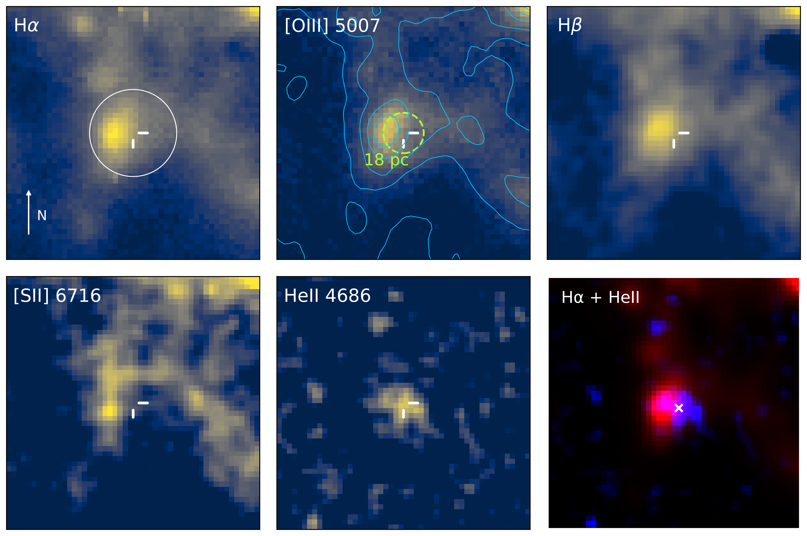
图注：MUSE continuum-subtracted emission line images around NGC~5408 X-1 in \(\halpha,\) \(\OIIIb,\) \(\hbeta,\) \(\SIIa,\) and \(\HeII,\) together with a two-color image combining \halpha\ and \(\HeII.\) The white bars or cross mark the ULX position. In the H$\alpha$ panel, the white circle marks the spectral extraction aperture for the entire nebula shown in Figure~\(\ref{fig:spec}\); the corresponding background region lies outside the displayed field. In the \OIIIb\ panel, the \halpha\ contours are overlaid in cyan, while the dashed circle with a radius of 18 pc marks the displacement of emission peak to the ULX. The \(\hbeta,\) \(\SIIa,\) and \HeII\ images are smoothed with a Gaussian kernel of $\sigma=1$ pixel. The arrow points north and has a length of 40 pc ($1\farcs72$).
对应解读：对应“建议重点查看的图表”第1项以及“关键图表逐图导读”图2：IFU 发射线通量图，比较 He II、Hβ、[O III]、Hα 等空间分布。
入选理由：这是最直接支撑复合星云结论的核心观测图。它同时给出 MUSE 连续谱扣除后的多条发射线二维图，并标出 ULX 位置、Hα 等值线和 [O III] 峰相对 ULX 的约 18 pc 偏移，可用于判断 He II 是否紧凑、H II/[O III] 是否更大尺度且壳状。相比单独的 HST 窄带图，它包含 He II，是检验 He III 区与大尺度 H II 区分离的关键。
来源与置信度：\(arxiv_source\)；high；\(arxiv_source\) / NGC5408_V7_arxive.tex:figure[1]
Fig05
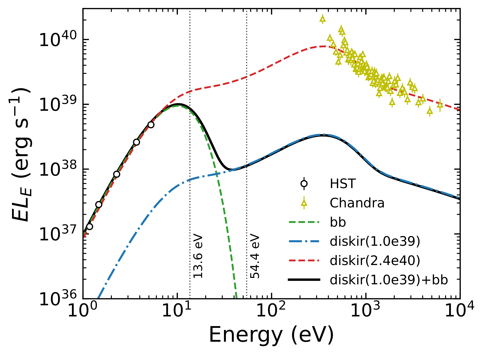
图注：Ionizing spectra adopted in the \(\textsc{Cloudy}\) calculations: the original {\(\tt\) diskir} SED with a total luminosity of $2.4 \times 10^{40}$\,\(\ergs,\) a scaled-down {\(\tt\) diskir} SED with a total luminosity of $1.0 \times 10^{39}$\,\ergs\ plus a blackbody component at 30000\,K. Data are adopted from \(\cite{Grise2012},\) including dereddened \(\textit{HST}\) photometric measurements shown as open circles, and unabsorbed \(\textit{Chandra}\) spectrum in open triangles. The vertical dotted lines indicate the ionization energies of H\,I (13.6 eV) and He\,II (54.4 eV).
对应解读：对应“建议重点查看的图表”第4项以及“关键图表逐图导读”图4；也对应模型拟合段落中的多波段 SED 拟合和 EUV 外推问题。
入选理由：这张图直接展示 Cloudy 输入的电离 SED：全光度 diskir 模型、降光度 ULX SED 加 30000 K 黑体模型，以及 HST 光学/UV 点和 Chandra X 射线谱。图中还标出 H I 与 He II 电离阈值，因此最适合解释为什么不可观测的 EUV 区决定 He II 电离光子数，并支撑“表观 X 射线光度比星云需要的电离光度高约 24 倍”的束流论证。
来源与置信度：\(arxiv_source\)；high；\(arxiv_source\) / NGC5408_V7_arxive.tex:figure[5]
Fig06
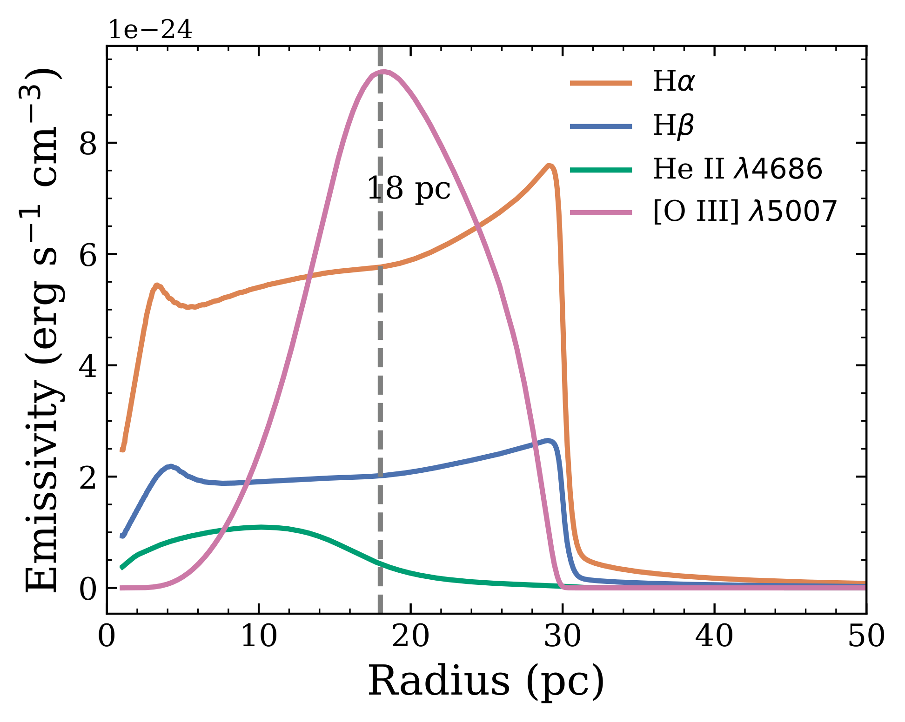
图注：Radial emissivity profiles predicted by \(\textsc{Cloudy}\) with the dual-component model. The dashed line marks the peak \OIIIb\ emissivity position ($\sim18$\,pc), matching the observed peak displacement (see Figure~\ref{fig:flux_maps}).
对应解读：对应“建议重点查看的图表”第5项和“关键图表逐图导读”图5/图6：Cloudy 模型预测与观测空间尺度对比、径向发射率诊断。
入选理由：这张图给出双成分模型下 Cloudy 预测的径向发射率剖面，并用虚线标出约 18 pc 的 [O III] 发射峰位置，与 Fig01 中观测到的峰值偏移相联系。它比单纯表格更能说明成功模型不仅要匹配线光度，还要匹配 He III/H II 区的空间尺度和发射峰位置，是理解光致电离建模物理约束的重要图。
来源与置信度：\(arxiv_source\)；high；\(arxiv_source\) / NGC5408_V7_arxive.tex:figure[6]
Fig03
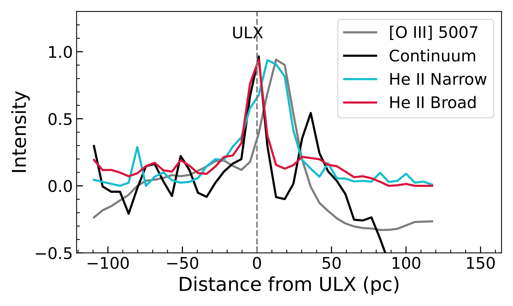
图注：Spatial profiles of emission lines and the continuum derived from the FORS2 data, with the peak normalized to unity. The continuum component in the emission lines has been subtracted. Note that the second peak in the continuum near 35 pc is due to a point-like star. The vertical dashed line marks the position of ULX.
对应解读：对应“建议重点查看的图表”第2项中关于 He II 空间紧凑性和点状成分的检查，也对应“关键图表逐图导读”图3中宽/窄 He II 成分空间来源的讨论。
入选理由：虽然它不是谱线线型分解图，但它给出 FORS2 数据中发射线与连续谱的空间剖面，并以虚线标出 ULX 位置，可用于判断 He II 或连续谱成分是否集中在 ULX 附近、是否具有点源特征。对于日报中强调的“宽 He II 发射可能来自 ULX 双星系统而非大尺度星云”这一点，它提供了候选图中最接近的空间诊断证据。
来源与置信度：\(arxiv_source\)；high；\(arxiv_source\) / NGC5408_V7_arxive.tex:figure[3]
Fig02
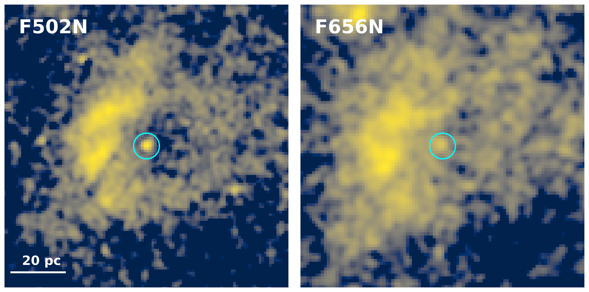
图注：Continuum-subtracted \(\textit{HST}\) narrow-band images around NGC~5408 X-1, with WFC3 F502N (left) for \OIIIb\ and WFPC2 F656N (right) for \halpha\ and \(\NII.\) The images are smoothed with a Gaussian kernel of $\sigma=1$ pixel. The ULX position is enclosed by the circle.
对应解读：对应“建议重点查看的图表”第3项以及“关键图表逐图导读”图1：HST 窄带图像、ULX 位置与大尺度 H II/[O III] 结构。
入选理由：这张图利用 HST 窄带 F502N 和 F656N 图像显示 [O III] 与 Hα+[N II] 的高空间分辨率形态，并标出 ULX 位置，有助于检查大尺度壳状 H II 区与 ULX 的相对位置。它不含 He II，也不是多波段 SED 或模型图，因此科学优先级低于 Fig01、Fig05 和 Fig06，但对验证形态和配准相关讨论仍有价值。
来源与置信度：\(arxiv_source\)；high；\(arxiv_source\) / NGC5408_V7_arxive.tex:figure[2]
Fig04
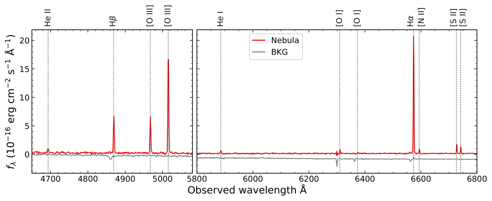
图注：MUSE spectra of the whole nebula. The background spectrum (gray) is shifted for display.
对应解读：对应观测谱线识别与整体星云光谱部分，可辅助“建议重点查看的图表”第1项和第5项中关于发射线光度输入的讨论。
入选理由：这张图展示整个星云的 MUSE 光谱和背景谱，可帮助确认 Balmer、[O III]、He II 等关键发射线确实存在，并为后续线光度测量提供背景。但它不直接展示线型分解、二维形态、SED 或 Cloudy 模型残差，因此与日报重点解读的核心论证关系相对较弱，适合作为补充图而非首选图。
来源与置信度：\(arxiv_source\)；high；\(arxiv_source\) / NGC5408_V7_arxive.tex:figure[4]
强相关工作
这篇工作属于“ULX 星云作为电离量热计”的同类研究脉络。可检索关键词包括 “NGC 5408 X-1 He II nebula”, “ULX photoionized nebula Cloudy”, “ULX beaming supercritical accretion”, “Pakull Mirioni ULX nebulae”, “Abolmasov ULX nebulae”。同源方面，NGC 5408 X-1 过去已有大量 X 射线时变、光谱、光学星云和 HST 对应体研究；本文的新增价值是用 IFU 把复合星云结构和宽 He II 点源成分分开，并把它们接入光致电离模型。
在理论关系上，本文与超临界吸积盘漏斗束流模型一致：若内盘和风形成低密度极向通道，沿视线看到的 \(L_{\rm X,iso}\) 可高于方向平均电离光度。相反或有张力的解释包括：ULX 当前光度高于长期平均、EUV SED 外推错误、星云覆盖因子很低、或附近恒星场被低估。读者若要追踪相反观点，可检索 “ULX isotropic emission nebular constraints”, “NGC 5408 X-1 intermediate mass black hole”, “ULX nebula time averaged luminosity”。
同类源和历史原型包括 Holmberg II X-1、NGC 6946 X-1、IC 342 X-1 等带有光学星云的 ULX。它们的共同问题是：星云线强是否要求真实高电离光度，还是允许视线束流？NGC 5408 X-1 的特殊之处是 He II 发射、HST 对应体和丰富 X 射线资料都较好，使它成为检验束流的一类标杆源。
同一事件 / 同类源线索：
相似工作：
- https://arxiv.org/abs/astro-ph/0202488
- https://arxiv.org/abs/astro-ph/0612765
- https://arxiv.org/abs/0711.4108
基础理论 / 方法工作：
相反观点 / 张力线索：
10. SN 2023rve: A Type II Supernova with No Nebular Oxygen
- 来源：arXiv / astro-ph.HE
- 链接：https://arxiv.org/abs/2606.30979v1
- 作者：Melissa Rosowsky, Stefano Valenti, Aravind P. Ravi, Yize Dong, Nicolas Meza Retamal, K. Azalee Bostroem, David J. Sand, Griffin Hosseinzadeh
- 评分：novelty 8/10，importance 7/10，relevance 8/10，final 8.65/10
- 推荐理由：近邻II型超新星的异常星云期无氧线现象较罕见，并讨论fallback到致密遗迹、低爆炸能和CSM相互作用；虽非伽马射线主题，但属高能瞬变/超新星物理，值得关注。
中文题目：SN 2023rve：一颗星云期看不到氧线的 II 型超新星
做了什么：这篇文章报道了近邻星系 NGC 1097 中 II 型超新星 SN 2023rve 的多波段测光和光谱跟踪。作者用光变曲线、星云期光谱和流体力学模型估计其前身星约为 \(14\text{--}18\,M_\odot\)，爆炸能量偏低，合成的 \(^{56}\mathrm{Ni}\) 质量也很小，并需要一个致密的近星周物质成分来解释早期/平台期行为。最反常的结果是：在星云期光谱中几乎没有通常应当很显著的 \([\mathrm{O\,I}]\) 发射，而同时出现窄的 \(\mathrm{He\,I}\) 线。作者认为这可能指向低能爆炸中的部分回落，也可能与尘埃形成、氧钙混合或持续星周相互作用有关。
为什么重要：II 型超新星的星云期 \([\mathrm{O\,I}]\) 线通常被用来追踪氧核质量，进而约束红超巨星前身星的零龄主序质量。SN 2023rve 的问题在于：它的光变曲线不像极端低质量事件，流体模型又指向中等质量前身星，但星云期氧线却几乎消失。这直接挑战了“星云期氧线强度可较直接映射前身星质量”的常用经验判断。
理论 / 观测 / 仪器方法价值：对理论而言，本文把低爆炸能、低 \(^{56}\mathrm{Ni}\) 产额、长平台和氧线缺失放在同一对象中讨论，为回落型核心坍缩和爆炸失败边界提供了一个有用案例。对观测而言，它提醒读者星云期谱线诊断必须同时考虑星周相互作用、尘埃、混合和激发条件。对方法而言，论文把光变曲线流体模型与星云期谱线样本比较结合起来，而不是只依赖单一指标。
为什么应该关注：如果你关心红超巨星如何在爆炸前几年到几十年失去质量、哪些核心坍缩会产生回落、以及星云期光谱能否可靠反推前身星质量，SN 2023rve 是一个值得跟进的异常样本。它不是最亮、最快或最著名的 II 型超新星，但正因为它“整体普通、关键谱线异常”，才可能暴露我们对 II 型超新星诊断链条中隐藏假设的依赖。
展开详细解读：文章讲解、背景、理论、重点章节、图表与相关工作
文章详细讲解
科学问题：II 型超新星通常来自保留氢包层的红超巨星。平台期光变曲线给出包层质量、半径、爆炸能量和 \(^{56}\mathrm{Ni}\) 加热的组合约束；星云期光谱则在外层变透明后暴露内部核合成产物，尤其是 \([\mathrm{O\,I}]\,\lambda\lambda6300,6364\)。SN 2023rve 的核心科学问题是：一个看起来属于普通或中等光度 II 型超新星的事件，为什么在星云期没有出现预期的氧发射？这是否说明前身星氧核很小，还是说明氧存在但未被有效激发、被遮蔽或回落到致密遗迹上？
作者怎么做：论文汇集了 SN 2023rve 的多波段测光和时间序列光谱，并采用宿主星系 NGC 1097 的距离 \(D=15.4\pm3.2\,\mathrm{Mpc}\) 来建立绝对光度尺度。测光方面，作者构造 \(V\) 波段和准热光度光变曲线，给出峰值绝对星等、平台期下降率和 \(^{56}\mathrm{Ni}\) 质量。建模方面，他们用流体力学光变曲线模型拟合平台期持续时间、光度和速度约束，推断前身星质量、爆炸能量、半径以及一个致密星周物质成分。光谱方面，他们特别检查星云期 \([\mathrm{O\,I}]\)、\([\mathrm{Ca\,II}]\)、\(\mathrm{H}\alpha\) 和窄 \(\mathrm{He\,I}\) 的行为，并把它与其他 II 型超新星样本比较。
关键结果：SN 2023rve 的 \(V\) 波段峰值约为 \(M_V\simeq-17.1\)，平台期下降率为 \(0.90\pm0.02\,\mathrm{mag}/50\,\mathrm{d}\)，热光度光变曲线给出 \(M_{\mathrm{Ni}}\simeq0.0064\,M_\odot\)。流体模型倾向于 \(14\text{--}18\,M_\odot\) 的中等质量前身星、低爆炸能 \(E\simeq0.27\times10^{51}\,\mathrm{erg}\)，并需要径向尺度约 \(2900\,R_\odot\)、密度参数约 \(10^{18}\,\mathrm{g\,cm^{-1}}\) 的致密星周物质。最突出的光谱结果是星云期没有明显 \([\mathrm{O\,I}]\) 发射；作者在比较样本中指出，同等时期缺乏氧线的 II 型超新星少于约 \(10\%\)，而另外两个类似对象具有更高速度，因此 SN 2023rve 的组合性质很不寻常。
局限和下一步：作者没有把氧线缺失简单归结为单一原因。部分回落可以自然解释低能量、低 \(^{56}\mathrm{Ni}\) 产额和氧层物质未充分抛出的组合，但尘埃形成可能压低或偏移红侧发射，氧钙混合可能改变冷却通道，持续星周相互作用也可能改变电离与激发状态。当前限制主要来自晚期光谱覆盖、红外尘埃诊断、精确距离和消光、以及流体模型中前身星结构和星周物质参数的退化。下一步最有价值的是更晚期的光谱、近中红外观测、对 \([\mathrm{Ca\,II}]/[\mathrm{O\,I}]\) 与 \(\mathrm{H}\alpha\) 轮廓的时变分析，以及把类似氧线缺失对象纳入统一的光谱合成模型。
关键结果是怎么做出来的
数据和样本选择方面，本文的证据链从一个近邻 II 型超新星个例开始：SN 2023rve 位于 NGC 1097，采用距离 \(D=15.4\pm3.2\,\mathrm{Mpc}\)。作者使用多波段测光重建从峰值到平台期、再到尾部的光变行为，并结合多历元光谱追踪谱线速度和晚期发射线。这个对象不是通过极端亮度或极端速度被挑出来的，而是因为星云期缺少 \([\mathrm{O\,I}]\) 这一对 II 型超新星来说非常反常的特征。
测光结果的核心数值包括 \(M_V\simeq-17.1\)、平台期下降率 \(0.90\pm0.02\,\mathrm{mag}/50\,\mathrm{d}\)，以及由热光度尾部估计的 \(M_{\mathrm{Ni}}\simeq0.0064\,M_\odot\)。这些量共同说明 SN 2023rve 不是一个典型高能、高镍产额事件。\(^{56}\mathrm{Ni}\) 质量的估计依赖尾部光度与放射性衰变能量沉积的对应关系，因此距离、消光、伽马射线逃逸和测光积分波段都会进入系统误差预算。
模型比较方面，作者使用流体力学光变曲线模型，而不是只用解析平台标度关系。拟合倾向于中等质量前身星 \(M_{\mathrm{ZAMS}}\sim14\text{--}18\,M_\odot\)、低爆炸能 \(E\simeq0.27\times10^{51}\,\mathrm{erg}\)，并加入致密星周物质，尺度约 \(R_{\mathrm{CSM}}\simeq2900\,R_\odot\)，密度参数约 \(10^{18}\,\mathrm{g\,cm^{-1}}\)。这部分结果主要由平台光度、平台持续时间、颜色温度演化以及谱线速度共同约束；如果只看光度，能量、包层质量、半径和消光之间会有明显退化。
最重要的光谱证据来自星云期。普通 II 型超新星在几百天量级常出现 \([\mathrm{O\,I}]\,\lambda\lambda6300,6364\)，其强度随氧质量、\(^{56}\mathrm{Ni}\) 混合和沉积能量变化。SN 2023rve 的星云期光谱却显示窄 \(\mathrm{He\,I}\) 线，同时缺少清晰氧线。作者将其与其他 II 型超新星在相似相位的光谱比较，发现同类缺氧对象在样本中少于约 \(10\%\)，并且已知可比对象的速度性质不同，因此不能简单归入同一经验类。
显著性与稳健性不是以单一 \(p\) 值形式呈现，而是通过多重一致性判断建立：一是氧线在应出现的相位没有出现；二是该结论在与同相位样本比较时仍显异常；三是低 \(^{56}\mathrm{Ni}\)、低爆炸能和长平台共同支持较弱爆炸或回落图像；四是窄 \(\mathrm{He\,I}\) 与星周相互作用迹象提示谱线激发环境并不简单。需要重点检查的图表应包括热光度光变曲线、流体模型拟合、星云期谱线区域放大图、同类样本对比图和参数表。
主要系统误差包括距离模数和宿主消光对绝对光度的影响、热光度积分中未观测紫外/红外波段的修正、谱线连续谱扣除、晚期信噪比、宿主窄线污染、以及光变模型对前身星结构和星周物质几何的假设。作者的结论最好理解为“SN 2023rve 是一个强烈缺氧线的 II 型超新星，部分回落是一个有物理吸引力的解释”，而不是“已经唯一证明发生了回落”。
展开背景、理论、公式、模型、章节和图表导读
背景知识
研究对象是 II 型核心坍缩超新星。它们的光谱有氢线，通常来自仍保留厚氢包层的红超巨星。早期光度由爆炸激波加热后的膨胀冷却、复合波向内推进、以及可能的星周相互作用共同决定；后期光度则越来越依赖 \(^{56}\mathrm{Co}\) 衰变供能。SN 2023rve 的特殊性不是它完全脱离 II 型超新星家族，而是它在多个常规诊断量之间给出不协调的信息。
历史上，II 型超新星的前身星质量主要通过两条路线估计：一是爆炸前图像中直接识别红超巨星，二是用光变曲线和星云期谱线间接推断。直接成像给出了所谓红超巨星问题，即高质量红超巨星作为 II 型超新星前身星的数量似乎不足。星云期 \([\mathrm{O\,I}]\) 线被认为能补充这一信息，因为氧产额对前身星核心质量敏感。
观测背景上，近年大量高 cadence 巡天和快速光谱跟踪显示，许多看似普通的 II 型超新星在早期存在星周物质相互作用迹象。这说明红超巨星在爆炸前最后阶段可能经历增强质量损失。SN 2023rve 的模型也需要一个致密的近星周物质成分，因此它加入了“普通 II 型超新星并不一定在干净环境中爆炸”的证据链。
为什么现在值得重新看？因为样本量、早期发现能力、晚期光谱覆盖和辐射流体模型都比过去更成熟。过去把平台期形状、速度和星云期氧线分别解释的做法，越来越需要被统一起来。SN 2023rve 这样一个近邻、数据相对完整且星云期异常明显的事件，正好可以测试这些诊断是否彼此一致。
常见误区有三点。第一，不能把 \([\mathrm{O\,I}]\) 线强度直接等同于氧质量；它还依赖温度、密度、电离、\(^{56}\mathrm{Ni}\) 混合和能量沉积。第二，不能把低 \(^{56}\mathrm{Ni}\) 质量自动等同于低前身星质量；弱爆炸和回落也会降低抛出的镍质量。第三，看到星周相互作用迹象并不意味着这是一颗 IIn 型超新星；相互作用可以较弱、短暂或只在特定谱线中显现。
基础理论 / 方法脉络
基础物理图像从核心坍缩开始。大质量恒星形成铁核后失去热核支撑，核心坍缩并反弹，若中微子加热和流体不稳定足够有效，外层被抛出形成超新星。对 II 型事件，氢包层质量较大，膨胀抛射物在温度降至氢复合温度附近时释放储存热能，形成持续几十到上百天的平台。平台期光度和持续时间受爆炸能量、包层质量、半径和不透明度控制。
放射性供能来自 \(^{56}\mathrm{Ni}\rightarrow{}^{56}\mathrm{Co}\rightarrow{}^{56}\mathrm{Fe}\) 衰变链。晚期若伽马射线和正电子基本被俘获，热光度尾部可用来估计 \(M_{\mathrm{Ni}}\)。但对低质量、低能或混合不同的抛射物，伽马射线逃逸、尘埃吸收和红外再辐射会改变可见光尾部，所以 \(M_{\mathrm{Ni}}\) 是模型依赖的量。
星云期光谱的物理基础是抛射物变得光学薄，禁线冷却开始显现。\([\mathrm{O\,I}]\,\lambda\lambda6300,6364\) 来自中性氧的低密度禁线跃迁，通常追踪氧丰富层的冷却。若氧层获得足够放射性沉积并处于合适温度密度，它应当发光；若氧层回落、被尘埃遮蔽、被混合改变冷却通道，或激发条件不满足，氧线就可能弱化。
本文的模型假设包括：光变曲线可由红超巨星爆炸、低能量、少量 \(^{56}\mathrm{Ni}\) 和近星周物质共同解释；星周物质可用有限径向尺度和密度参数近似描述；星云期谱线可与同类 II 型超新星样本在相似相位比较。关键量包括 \(M_V\)、平台下降率、热光度 \(L_{\mathrm{bol}}\)、\(M_{\mathrm{Ni}}\)、爆炸能 \(E\)、前身星质量、\(R_{\mathrm{CSM}}\) 和星周密度参数。
主要退化关系也很重要。平台光度升高可能来自更大爆炸能、更大半径、更低包层质量或额外星周相互作用；速度有助于打破部分退化。氧线缺失可能来自氧质量低，也可能来自沉积能量低、尘埃吸收、谱线被其他成分掩盖或连续谱扣除不充分。因而本文的结论依赖多诊断一致性，而不是某一个单独观测量。
公式与推导
第一步是把观测星等转成光度尺度。若观测星等为 \(m_\lambda\)，距离为 \(D\)，总消光为 \(A_\lambda\)，则绝对星等为
这里 \(M_\lambda\) 给出某一滤光片的本征亮度，SN 2023rve 的 \(V\) 波段峰值约为 \(M_V\simeq-17.1\)。距离和消光误差会直接传播到所有光度、\(^{56}\mathrm{Ni}\) 质量和模型参数。
第二步是从多波段测光构造准热光度。若在频率 \(\nu\) 上的消光改正后通量密度为 \(F_\nu\)，则
其中 \(L_{\mathrm{corr}}\) 表示未观测紫外和红外波段的修正。这个公式说明热光度不仅取决于测光点，也取决于谱能量分布插值和波段外校正。
第三步是用放射性衰变估计尾部供能。在完全俘获近似下，\(^{56}\mathrm{Co}\) 主导阶段的能量沉积可写为
这里 \(M_{\mathrm{Ni}}\) 是初始镍质量，\(\epsilon_{\mathrm{Ni}}\) 和 \(\epsilon_{\mathrm{Co}}\) 是单位质量释能率，\(\tau_{\mathrm{Ni}}\) 和 \(\tau_{\mathrm{Co}}\) 是衰变时间尺度。论文由尾部光度得到 \(M_{\mathrm{Ni}}\simeq0.0064\,M_\odot\)，表明镍产额很低。
第四步是平台期的解析标度，用来理解流体模型的方向。经典复合平台近似给出
其中 \(t_{\mathrm{p}}\) 是平台持续时间，\(\kappa\) 是不透明度，\(M_{\mathrm{env}}\) 是氢包层质量，\(E\) 是爆炸能，\(R_0\) 是前身星半径，\(T_{\mathrm{ion}}\) 是复合温度。长平台可由较大包层质量或较低能量造成，因此必须结合速度信息。
第五步是平台光度标度。一个常用近似为
该式说明 \(L_{\mathrm{p}}\) 对 \(E\) 很敏感，而对 \(M_{\mathrm{env}}\) 与 \(R_0\) 也有依赖。SN 2023rve 的低爆炸能推断不是只由亮度给出，而是由亮度、持续时间和速度共同限制。
第六步是用谱线速度连接动能。若抛射物质量为 \(M_{\mathrm{ej}}\)，代表性速度为 \(v_{\mathrm{ph}}\)，则
这里 \(v_{\mathrm{ph}}\) 可由 \(\mathrm{Fe\,II}\) 或其他吸收线近似追踪。低速度与低平台光度、长平台一起支持低能爆炸解释，但速度线形成层和混合会带来系统误差。
第七步是星周物质参数化。若采用风状密度分布，可写为
其中 \(\dot{M}\) 是质量损失率，\(v_{\mathrm{w}}\) 是风速，\(w\) 是密度参数。论文中给出的量级 \(w\sim10^{18}\,\mathrm{g\,cm^{-1}}\) 和 \(R_{\mathrm{CSM}}\sim2900\,R_\odot\) 表明爆炸前近距离环境相当致密。
第八步是估计星周物质质量。若风状分布从 \(R_{\mathrm{in}}\) 延伸到 \(R_{\mathrm{out}}\)，则
这个关系把模型中的密度参数和径向尺度转成爆炸前质量损失的物理量，但它依赖几何和密度剖面假设。
第九步是星云期氧线的诊断。若氧线光度为 \(L_{[\mathrm{O\,I}] }\)，在简化低密度冷却近似下可写为
这里 \(M_{\mathrm{O}}\) 是氧质量，\(q_{\mathrm{O}}\) 是依赖温度 \(T\) 和电子密度 \(n_e\) 的激发/冷却效率，\(\eta_{\mathrm{dep}}\) 是沉积到氧区的放射性能量比例。SN 2023rve 的氧线缺失可由 \(M_{\mathrm{O}}\) 小、\(\eta_{\mathrm{dep}}\) 小或 \(q_{\mathrm{O}}\) 低造成。
第十步是拟合统计量。对光变曲线和速度联合拟合，可用
其中 \(\boldsymbol{\theta}\) 包含 \(E\)、\(M_{\mathrm{ej}}\)、\(R_0\)、\(M_{\mathrm{Ni}}\) 和星周物质参数。残差结构比单一最优值更重要：若早期残差系统偏亮，往往提示需要星周相互作用；若尾部残差偏低，可能涉及伽马射线逃逸或尘埃。
模型拟合 / 应用方法
本文涉及两类拟合：一类是测光量的经验提取，另一类是物理光变曲线建模。经验量包括峰值绝对星等、平台下降率、热光度尾部和 \(^{56}\mathrm{Ni}\) 质量。这里的拟合通常需要确定爆炸时刻、峰值附近插值、平台区间定义和尾部衰变段。不同平台区间选择会改变下降率，但不太可能把 SN 2023rve 从低镍、低能候选变成高镍事件。
物理拟合的参数包括前身星质量或抛射物质量、爆炸能、初始半径、\(^{56}\mathrm{Ni}\) 质量、\(^{56}\mathrm{Ni}\) 混合程度，以及星周物质的密度和外半径。论文的结论倾向于 \(14\text{--}18\,M_\odot\) 前身星、\(E\simeq0.27\times10^{51}\,\mathrm{erg}\)、\(R_{\mathrm{CSM}}\simeq2900\,R_\odot\) 和 \(w\sim10^{18}\,\mathrm{g\,cm^{-1}}\)。这些数值应理解为模型族内的最优或偏好范围，而非完全模型无关的直接测量。
似然或统计量的核心是同时拟合光度、颜色/温度演化和谱线速度。若只拟合热光度，\(E\)、\(M_{\mathrm{env}}\)、\(R_0\) 与消光之间高度退化；加入速度后，低能模型更容易被识别。早期或平台期额外亮度若来自星周相互作用，会被误解释为更大半径或更高能量，因此星周物质参数是降低残差的同时也增加退化的部分。
星云期谱线拟合或比较更偏诊断性。\([\mathrm{O\,I}]\) 缺失不是一个简单的连续参数拟合结果，而是通过谱线区域的非探测、与同相位样本的比较、以及与 \([\mathrm{Ca\,II}]\)、\(\mathrm{H}\alpha\)、\(\mathrm{He\,I}\) 等线的相对行为来判断。读者应特别看连续谱扣除、宿主背景扣除、谱线信噪比和速度窗口选择，因为这些因素可能影响弱线非探测。
模型可能失败的地方包括：前身星结构不唯一，单星和双星演化可给出相似终态；星周物质可能非球对称，简单一维模型会把几何效应折算成密度或半径；尘埃形成可能把可见光氧线能量转移到红外；若氧层与 \(^{56}\mathrm{Ni}\) 混合很弱，即便氧质量不低也可能不亮。因此，本文最稳健的结论是“观测上缺氧线且整体参数指向弱爆炸/低镍/有星周物质”，而回落解释还需更专门的辐射转移和晚期红外观测检验。
重点章节 / 结果段落怎么读
-
数据与观测部分：应先读测光和光谱数据来源、相位定义、距离和消光采用值。这里决定了绝对光度、热光度和所有模型参数的基准。重点看 SN 2023rve 的发现时间、爆炸历元约束、多波段覆盖是否足以构造可靠准热光度，以及晚期光谱的相位和信噪比。
-
光变曲线结果部分：重点读 \(V\) 波段峰值、平台下降率、颜色演化和热光度尾部。这里支撑 \(M_V\simeq-17.1\)、\(0.90\pm0.02\,\mathrm{mag}/50\,\mathrm{d}\) 和 \(M_{\mathrm{Ni}}\simeq0.0064\,M_\odot\) 这几个核心观测量。读者应检查这些值是否对距离、消光和尾部相位选择敏感。
-
流体力学建模部分：这是把观测量转成前身星和爆炸参数的关键。应重点看模型网格或模型假设、是否包含星周物质、速度约束如何进入拟合，以及残差在哪些相位最大。特别要注意 \(E\)、\(M_{\mathrm{ej}}\)、\(R_0\) 和星周物质参数之间的退化。
-
星云期光谱部分：这是全文最重要的异常发现。读者应直接查看 \([\mathrm{O\,I}]\,\lambda\lambda6300,6364\) 区域、\([\mathrm{Ca\,II}]\) 区域、\(\mathrm{H}\alpha\) 和窄 \(\mathrm{He\,I}\) 的线型。关键问题不是“有没有某个小波峰”，而是相对于同类 II 型超新星和相对于钙线/氢线，氧线是否系统性缺失。
-
比较样本与讨论部分：这里决定 SN 2023rve 是否只是普通多样性的一端，还是确实少见。作者指出相似相位下缺氧线对象少于约 \(10\%\)，并讨论部分回落、尘埃、氧钙混合和持续星周相互作用。读者应把这部分当作物理解释的可能性排序，而不是最终定论。
建议重点查看的图表
-
多波段光变曲线：看峰值、平台长度、平台下降率和不同滤光片颜色演化；特别检查是否有早期过亮或平台期残差，可能指向星周物质。
-
准热光度光变曲线与 \(^{56}\mathrm{Co}\) 衰变尾部：看尾部斜率是否接近完全俘获预期，以及 \(M_{\mathrm{Ni}}\simeq0.0064\,M_\odot\) 是否由足够晚的点约束。
-
流体力学模型拟合图：看模型线是否同时匹配平台光度、平台持续时间和速度；若早期或晚期残差系统偏离，应考虑星周物质、混合或尘埃。
-
光谱时间序列：看从光球期到星云期的谱线演化，尤其是 \(\mathrm{H}\alpha\)、\(\mathrm{He\,I}\)、\([\mathrm{Ca\,II}]\) 和 \([\mathrm{O\,I}]\) 的相对变化。
-
星云期 \([\mathrm{O\,I}]\) 区域放大图：这是最关键诊断。应检查坐标是否为静止系波长或速度，连续谱如何扣除，宿主窄线是否影响判断。
-
与其他 II 型超新星的星云期谱比较图：看相位是否相近、归一化方式是否公平、速度宽度是否相当，以及 SN 2023rve 的缺氧是否仍然显著。
-
参数表或模型后验/网格表：看 \(E\)、\(M_{\mathrm{ZAMS}}\)、\(M_{\mathrm{Ni}}\)、\(R_{\mathrm{CSM}}\) 和 \(w\) 的不确定度，避免只记最佳值。
关键图表逐图导读
图 1：通常应是多波段光变曲线或发现图。横轴多为相对于爆炸或发现的天数，纵轴为视星等或绝对星等。读图时要看各滤光片是否显示典型 II 型平台，以及平台是否呈较快下降。陷阱是星等轴常反向，且不同滤光片可能人为平移，不能直接把垂直间距当颜色。
图 2：若为颜色或准热光度演化，横轴为相位，纵轴为颜色指数、温度或 \(L_{\mathrm{bol}}\)。关键是尾部光度是否足以支持低 \(M_{\mathrm{Ni}}\) 结论。若图中有 \(^{56}\mathrm{Co}\) 衰变参考线，应看数据点相对该线的斜率和归一化；偏离可能意味着伽马射线逃逸、尘埃或未计入红外通量。
图 3：流体力学模型拟合图通常会显示光变曲线模型线与观测点，有时还包括速度演化。横轴为相位，纵轴为光度、星等或速度。主要结论是低能量加致密星周物质模型可以解释平台和速度。读图陷阱是不同模型参数组合可能给出相近光变，因此必须同时看速度和残差，而非只看最佳模型线贴合程度。
图 4：光谱时间序列应显示从早期到晚期的谱线变化。横轴为静止系波长，纵轴为相对通量并常作垂直平移。读者应追踪 \(\mathrm{H}\alpha\)、\(\mathrm{He\,I}\) 和金属线的出现/消失，尤其要注意窄 \(\mathrm{He\,I}\) 是否提示星周相互作用。陷阱是垂直平移和归一化会弱化绝对线强的直观比较。
图 5：星云期关键谱线区域放大图应聚焦 \([\mathrm{O\,I}]\,\lambda\lambda6300,6364\) 和 \([\mathrm{Ca\,II}]\,\lambda\lambda7291,7324\)。横轴可为波长或相对某条线的速度，纵轴为归一化通量。主要结论是氧线未按普通 II 型超新星期待出现。读图陷阱是 \(\mathrm{H}\alpha\) 翼、宿主 \(\mathrm{H\,II}\) 区窄线和连续谱扣除都可能影响弱特征判断。
图 6：同类样本比较图应把 SN 2023rve 与其他 II 型超新星在相似相位的星云期谱放在一起。关键是看归一化方式、相位差和速度宽度是否会人为改变氧线可见性。若多数比较对象有明显 \([\mathrm{O\,I}]\)，而 SN 2023rve 没有，则支持其稀有性；但若比较样本相位、信噪比或光度差异很大，结论需打折。
图 7：若有参数比较或统计图，横轴和纵轴可能是 \(M_{\mathrm{Ni}}\)、平台斜率、速度、氧线强度或 \([\mathrm{Ca\,II}]/[\mathrm{O\,I}]\) 比值。应看 SN 2023rve 是否是离群点，以及离群程度是否由误差棒允许。陷阱是样本选择不均匀：只有有晚期光谱的近邻或亮源会进入比较。
论文原图 / 可嵌入图片
Fig02
图注：Multiband light curves for SN\,2023rve with respect to the assumed epoch of explosion (see \ref{tab:log_of_phot}). The pre-discovery imaging from Telescope Live \(\citep{astronote0906}\) provides a V-band magnitude, which is shown in addition to the last nondetection from ATLAS (in the orange filter).
对应解读：建议重点查看的图表 1；关键图表逐图导读中关于多波段光变曲线、峰值、平台长度和平台下降率的部分。
入选理由：这是候选图中最直接支撑测光结论的原图，显示 SN 2023rve 相对爆炸时刻的多波段光变曲线，可用于检查平台形态、早期点、末次未探测和不同滤光片演化；它比发现图或单一参数比较图更能支撑日报对峰值、平台和潜在星周物质影响的解读。
来源与置信度：\(arxiv_source\)；high；\(arxiv_source\) / sn2023rve.tex:figure[2]
Fig03
图注：Spectroscopic evolution for SN\,2023rve from 6.1 days to 114.9 days after explosion.
对应解读：建议重点查看的图表 4；关键图表逐图导读中关于光谱时间序列、Hα、He I、金属线和星云期谱线演化的部分。
入选理由：这是候选图中唯一完整展示 SN 2023rve 从早期到约 115 天光谱演化的图，对判断谱线随时间变化、低速度特征以及后续讨论缺氧线的背景最关键；虽然候选列表没有单独的 [O I] 区域放大图，但该图是理解星云期异常谱线行为的基础。
来源与置信度：\(arxiv_source\)；high；\(arxiv_source\) / sn2023rve.tex:figure[3]
Fig10
图注：Expansion velocity evolution of \(\Ha{},\) \(\FeII{},\) \(\ScII{},\) and \(\BaII{}\) from SN\,2023rve compared to the mean of a sample of SNe II \(\Ha{}\) and \(\FeII{}\) $\lambda$5018 velocities at that phase \(\citep{gutierrez2017type}.\) One standard deviation is shaded.
对应解读：模型拟合段落中关于同时拟合光度和谱线速度、低爆炸能诊断的部分；也对应关键图表逐图导读中速度演化和样本均值比较。
入选理由：该图给出 Hα、Fe II、Sc II、Ba II 等膨胀速度随相位的演化，并与 II 型超新星样本均值及一倍标准差比较。速度是区分低能爆炸模型的重要约束，能补足单看光变曲线时能量、包层质量和半径退化的问题。
来源与置信度：\(arxiv_source\)；high；\(arxiv_source\) / sn2023rve.tex:figure[10]
Fig07
图注：V-band light curves of SN\,2023rve and other similar Type II supernovae.
对应解读：建议重点查看的图表 1 和关键图表逐图导读中关于 V 波段平台、平台下降率及与类似 II 型超新星比较的部分。
入选理由：该图把 SN 2023rve 的 V 波段光变曲线与相似 II 型超新星放在一起，可直观看出其平台亮度和下降行为在同类中的位置，支撑日报中“中等光度但平台下降较快/需比较样本”的解读。
来源与置信度：\(arxiv_source\)；high；\(arxiv_source\) / sn2023rve.tex:figure[7]
Fig11
图注：Velocity comparison of \(\Ha{}\) from SN\,2023rve with similar objects in the early, plateau, and nebular phase. SN\,2023rve has notably low velocity in the early phase, more comparable velocity in the plateau phase, and low velocity again in the nebular phase.
对应解读：详细解读中关于 SN 2023rve 低速度、以及与类似对象在早期、平台期和星云期速度比较的部分。
入选理由：该图专门比较 Hα 速度在早期、平台期和星云期的相对位置，能支撑论文关于 SN 2023rve 速度偏低、不同于某些缺氧线高速度对象的论证；相较普通光谱比较图，它更直接服务于低能量和异常组合性质的判断。
来源与置信度：\(arxiv_source\)；high；\(arxiv_source\) / sn2023rve.tex:figure[11]
Fig08
图注：The $M_V$ compared to $S_{50V}$ for SN\,2023rve and a sample of SNe II \(\citep{anderson2014characterizing, Valenti2016}\) from SNDAVIS. SN\,2023rve is shown in black, and is near the middle of the SNe IIP and SNe IIL range. The sample referenced in this paper is shown in blue, other notable objects are in green, and the rest of the sample is in red.
对应解读：关键图表逐图导读中参数比较或统计图部分；对应峰值绝对星等 \(M_V\) 与平台下降率 \(S_50V\) 的样本位置。
入选理由：该图展示 SN 2023rve 在 \(M_V\)–\(S_50V\) 平面中相对于 II 型超新星样本的位置，可验证其并非极端高光度或传统 IIL/IIP 分类边界外的对象，从而强化“普通测光外观下出现异常星云期缺氧”的科学张力。
来源与置信度：\(arxiv_source\)；high；\(arxiv_source\) / sn2023rve.tex:figure[8]
强相关工作
这篇工作与两类文献直接相连。第一类是普通 II 型超新星的光变曲线和前身星参数研究，包括平台期解析标度、辐射流体建模、\(^{56}\mathrm{Ni}\) 质量估计和红超巨星前身星直接成像。检索关键词可用 “Type II supernova plateau hydrodynamic modeling progenitor mass nickel mass red supergiant”。这类工作提供了把 \(M_V\)、平台持续时间、速度和 \(M_{\mathrm{Ni}}\) 转成物理参数的基础。
第二类是星云期光谱和核合成诊断，尤其是 \([\mathrm{O\,I}]\,\lambda\lambda6300,6364\) 与前身星质量、混合、尘埃和回落之间的关系。检索关键词可用 “nebular spectra Type II supernova oxygen line fallback dust formation oxygen calcium mixing”。SN 2023rve 的张力在于：中等质量前身星和低能爆炸模型并不自动要求氧线完全消失，因此它需要与星云期辐射转移模型和缺氧线个例比较。
同源或同事件方面，目前应首先使用本文 arXiv 页面追踪后续版本、引用和可能的期刊版本；SN 2023rve 是一个具名瞬变，后续可能出现 ATel/TNS 分类通报、补充光谱或红外观测。检索关键词可用 “SN 2023rve NGC 1097 Type II no oxygen nebular”。若要找相反观点或替代解释，应重点检索“dust formation in Type II supernova nebular oxygen suppression”和“CSM interaction helium narrow lines Type II supernova”。
同一事件 / 同类源线索：
相似工作：
（未提供）
基础理论 / 方法工作：
（未提供）
相反观点 / 张力线索：
（未提供）
11. Establishing Compactness as a Population Observable in Gravitational-Wave Astronomy
- 来源：arXiv / astro-ph.HE
- 链接：https://arxiv.org/abs/2606.31364v1
- 作者：Shrobana Ghosh, Charlie Hoy, Mark Hannam, Frank Ohme
- 评分：novelty 9/10，importance 8/10，relevance 6/10，final 8.60/10
- 推荐理由：提出并在GWTC-3上层级测量有效致密度，直接检验黑洞假设并限制低致密度奇异并合率；虽偏GW而非伽马射线，但方法新颖且影响较大。
中文题目：Establishing Compactness as a Population Observable in Gravitational-Wave Astronomy
做了什么：本文提出并应用一种把“致密度”作为引力波群体观测量的分析框架。作者用有效致密度 (C_{\
m eff}) 描述双星在最近接近阶段的紧致程度；标准 Schwarzschild 黑洞对应 \(C=0.5\)。通过 deco 波形、噪声加权 match、GWTC-3 高显著性事件的参数估计和层级贝叶斯群体分析，论文报告这些候选双黑洞信号整体与黑洞假说一致，得到 (C_{\
m eff}=0.5^{+0.3}_{-0.1})，并给出低致密度奇异双星并合率 \(<0.7\\,\mathrm{Gpc}^{-3}\\,\mathrm{yr}^{-1}\) 的限制。核心证据来自群体后验预测分布、低致密度波形可分辨性诊断以及低致密度注入恢复测试。
为什么重要：这项工作重要在于它把 compactness 建立为引力波天文学中的 population observable，而不只是天体结构理论中的概念参数。它同时服务于三件事：验证当前 BBH 目录的黑洞解释、限制低致密度黑洞替代物的天体物理发生率、为未来更高信噪比探测器设计可复用的强场诊断框架。摘要给出的 (C_{\
m eff}=0.5^{+0.3}_{-0.1}) 和低致密度速率上限说明，现有数据已经能在群体层面对黑洞致密度给出实质约束，而不仅是单事件波形拟合的一致性陈述。
理论 / 观测 / 仪器方法价值：理论价值在于把“黑洞是否足够紧致”从定性分类转化为可估计的群体参数，连接了强场引力、黑洞替代模型和引力波数据分析。观测价值在于它利用现有 GWTC-3 数据直接检验 BBH 候选体在近并合阶段是否支持 \(C=0.5\)，并把未发现低致密度信号转化为并合率上限。方法价值在于提供了一个可扩展的层级推断框架：未来 O4/O5、Voyager、Einstein Telescope、Cosmic Explorer 或中子星优化探测器可用同类方法把 compactness 约束从“宽的一致性检验”推进到更精确的种群测量。
为什么应该关注：值得关注的原因是，黑洞的“黑”与“紧致”并不是引力波目录标签自动证明的属性。本文尝试用同一套数据和统计语言回答：已观测的高显著性 BBH 候选体是否真的在最近接近尺度上像黑洞？如果结论稳健，它为“GWTC-3 黑洞群体确实具有黑洞级致密度”提供了比传统事件分类更直接的证据；如果未来出现偏离，\(C_eff\) 也会成为寻找奇异致密天体或新强场物理的清晰诊断量。
展开详细解读：文章讲解、背景、理论、重点章节、图表与相关工作
文章详细讲解
本文的科学问题可以表述为：GWTC-3 中被归类为双黑洞并合的高显著性信号，是否在“最近接近阶段的有效致密度”这一直接物理量上也与黑洞 C=0.5 一致？这比“波形看起来像 BBH”更具体，因为它把黑洞假说转化为一个可估计参数 \(C_eff\) 的后验约束，并允许给出低致密度替代种群的并合率上限。
方法上，作者使用一种称为 deco 的波形/参数化框架来改变有效致密度，并与标准 BBH 情形比较。图 2 的 match 诊断说明该框架在探测器噪声加权意义下确实能区分低致密度波形与 C=0.5 波形。随后，作者对 GWTC-3 高显著性事件做单事件或事件级参数估计，再把事件后验输入层级贝叶斯模型，得到群体层面的 \(C_eff\) 后验预测分布。图 1 是核心结果图：蓝色中位线、90%可信区间、个体 posterior draws、黑色 C=0.5 竖线和低致密度 exotic 区域共同构成证据链。
关键结果有两层。第一层是定性结论：所有高显著性信号在 \(C_eff\) 上与黑洞假说一致，尤其图 1 inset 标出 GW190412、GW190521、GW200129_065458 这类常被单独讨论的异常事件，说明作者并未只依赖“普通”事件获得结论。第二层是定量结论：层级分析给出 \(C_eff=0.5^{+0.3}_{-0.1}\)，并限制低致密度奇异双星并合率 <0.7 \(Gpc^{-3}\) \(yr^{-1}\)。阅读正文时需要核查该误差区间是 90% 还是其他可信水平，以及速率上限对应的置信/可信水平和低致密度阈值定义。
局限性主要来自三个方面。第一，\(C_eff\) 是模型依赖的有效参数，其物理半径解释依赖 deco 波形族如何把 compactness 映射到最近接近或接触动力学。第二，GWTC-3 的许多 BBH 事件信噪比有限，真正对 \(C_eff\) 敏感的是并合附近短时间波形，因此少数高质量或高信噪比事件可能贡献不成比例的信息。第三，选择效应会影响群体后验：低致密度信号若更难或更容易被现有搜索管线检出，都必须进入层级似然的选择函数，否则速率上限可能偏差。
下一步阅读或复现实验应重点核查：事件选择标准是否只包含 FAR/IFAR 足够高的 GWTC-3 BBH 事件；deco 波形在 \(C_eff=0.5\) 时与常用 BBH 波形的一致程度；单事件后验是否有多峰或边界效应；层级模型是否对 \(C_eff\) 分布形状、低致密度阈值和先验范围敏感；速率上限是否包含泊松计数、探测体积时间 VT 和选择效率不确定性。若这些诊断都稳定，本文就真正把“黑洞致密度”从概念性陈述推进为群体观测量。
关键结果是怎么做出来的
第一项主结果是对 GWTC-3 高显著性双黑洞候选体进行有效致密度测量，并得到这些信号整体与黑洞假说一致。摘要没有列出具体事件数，因此阅读正文时应首先定位样本选择表：哪些 GWTC-3 事件被纳入、排除了哪些低显著性或可能为中子星的事件、采用了何种 FAR/IFAR 或 \(p_astro\) 阈值。这个样本定义直接决定“所有高显著性信号”的含义，也决定低致密度种群速率上限的适用范围。
第二项主结果是层级分析给出 (C_{\
m eff}=0.5^{+0.3}_{-0.1})。这个数值的证据主要来自图 1：群体 posterior predictive distribution 的中位数和 90%可信区间与 C=0.5 竖线重合或覆盖。读者应核查误差条对应的可信水平、先验范围是否允许 \(C_eff\) 大于 0.5、以及后验是否在物理边界附近非高斯。上误差 +0.3 明显较宽，说明数据对更高有效致密度或模型中近似等价的波形变化可能约束较弱；下误差 -0.1 则表明低致密度方向被更有效地限制。
第三项主结果是低致密度 exotic binaries 的并合率被限制在 \(<0.7\\,\mathrm{Gpc}^{-3}\\,\mathrm{yr}^{-1}\)。这个结论必须和图 2 的 match 诊断一起理解：低致密度波形比 C=0.5 更容易区分，因此若 GWTC-3 的高显著性事件都未显示低 \(C_eff\) 特征，就能把该类源的发生率压低。需要在正文中核查速率上限的统计定义：是 90% 还是 95% credible upper limit，是否采用泊松计数加选择函数，是否把事件级分类概率作为 mixture weight，而非简单“零事件”估计。
第四项证据链是特殊事件的稳健性。图 1 inset 包含 GW190412、GW190521、GW200129_065458，这些事件在文献中常因质量比、总质量、进动或波形解释被单独讨论。若这些事件的 \(C_eff\) 后验也覆盖 C=0.5，说明结论并非只来自标准、安静的 BBH 事件；但还要检查它们是否拥有足够信息量，或者只是后验太宽而“不排除”黑洞。强结论应来自群体联合与可分辨性诊断共同支持，而非单事件宽后验。
第五项是方法验证：图 3 的 BNS 注入说明该参数化框架在一个低致密度数值相对论信号上可以恢复约 \(C_eff\)~0.15 的结果，并展示 \(C_eff\) 与 chirp mass 的联合可信区间。这有助于反驳一个潜在问题：deco 模型是否天然偏向黑洞 C=0.5。尽管图 3 使用 NEMO 假想探测器而非 GWTC-3 真实数据，它仍是重要 sanity check，表明模型在足够灵敏条件下具备识别低致密度对象的能力。
系统误差方面，最需要检查的是波形模型误差、先验和选择效应。\(C_eff\) 的信息集中在 merger 附近，而这也是数值相对论校准、模式含量、高阶模、自旋进动和探测器校准误差更容易影响结果的区域。稳健性检验应包括改变事件集合、改变 \(C_eff\) 群体先验、排除单个高影响事件、比较不同 BBH waveform baseline、以及注入恢复检验。如果这些检验不改变 \(C_eff\) 接近 0.5 和低 C 速率上限的结论，论文的主张就比较可靠。
展开背景、理论、公式、模型、章节和图表导读
背景知识
引力波天文学中的“黑洞”判定长期带有一个经验性假设：只要双星并合信号与广义相对论中的双黑洞（BBH）波形高度一致，就把源归类为黑洞并合。但这并不等同于逐个事件直接测量了视界或表面半径。LIGO/Virgo/KAGRA 的 GWTC-3 目录已经包含大量高显著性紧致双星候选体，传统参数估计主要给出质量、自旋、距离、天空定位和有效自旋等量；本文试图把“致密度”本身提升为一个可由群体数据约束的观测量。
这里的致密度通常写作几何单位下的质量半径比，C=M/R，其中 G=c=1。Schwarzschild 黑洞的视界半径为 R=2M，因此 C=1/2。中子星典型致密度低于黑洞，奇异致密天体或其他带表面的黑洞替代模型也可能具有不同的有效半径。需要注意，本文研究的不是用电磁观测量直接测恒星半径，也不是在单个事件中拍到“表面”；它是从并合前后最接近阶段的引力波相位、振幅和可分辨波形差异中定义并估计一个有效致密度参数。
这篇论文的动机来自一个重要空白：过去对黑洞本性的引力波检验多集中在后牛顿相位偏离、ringdown 的准正则模、残余偏心率、自旋诱导四极矩、潮汐形变或回声信号等方面。这些检验可以限制偏离广义相对论或偏离 Kerr 黑洞的现象，但未必直接给出“这些并合体在群体意义上有多接近 C=0.5”的直观参数。本文使用有效致密度 \(C_eff\) 把这个问题改写成群体参数估计问题，并报告 GWTC-3 高显著性信号整体与黑洞假说一致。
一个常见误区是把 \(C_eff=0.5\) 理解成每个事件都被精确测到 Schwarzschild 半径。实际上，GW 数据对致密度的约束来自波形模型与噪声加权内积下的可分辨性，并会受到质量比、总质量、自旋、信噪比、探测器频带、波形系统误差和选择效应影响。另一个误区是把“低致密度奇异双星并合率受限”理解成排除了所有黑洞替代模型；论文摘要给出的是低致密度 exotic binaries 的并合率上限 <0.7 \(Gpc^{-3}\) \(yr^{-1}\)，其适用范围取决于作者所采用的低致密度波形族、事件选择和层级模型。
从研究对象看，本文不是单一著名事件论文，而是面向 GWTC-3 中高显著性双黑洞候选体的群体分析；图注中特别标出 GW190412、GW190521 和 GW200129_065458 这些社区中常被讨论的“特殊事件”。它们分别与非对称质量比、异常高质量/短时长信号、以及可能的强进动或参数估计争议有关，因此很适合作为检查 \(C_eff\) 是否被少数异常事件拉动的锚点。阅读时应把“群体后验”与“单事件后验”分开理解。
基础理论 / 方法脉络
最基础的物理图像是：两个紧致天体在引力辐射作用下逐渐失去能量和角动量，轨道频率升高，发出频率和振幅都随时间上升的 chirp 信号。早期 inspiral 主要由总质量、啁啾质量和质量比决定；接近并合时，轨道半径已经接近天体自身尺度，波形开始对“对象到底有多紧致”更敏感。若对象是经典黑洞，最接近阶段可由黑洞视界附近的强场动力学描述；若对象半径更大或潮汐响应更强，合并前接触、形变或相位演化可能不同。
致密度 C=M/R 在几何单位下是无量纲量。Schwarzschild 黑洞满足 \(R_s=2M\)，因此 C=0.5；中子星因为半径大于 2M，通常 C<0.5。本文中的 \(C_eff\) 应理解为用于波形族的有效参数：它不是一定等同于每个分量星的静态半径测量，而是控制波形中最近接触/最接近距离以及相关相位振幅变化的参数。图 1 上方展示了改变 \(C_eff\) 如何改变一个基准非旋双星的加偏振波形，这说明 \(C_eff\) 的信息主要来自并合附近波形差异，而不是低频 inspiral 的任意重标定。
引力波数据分析的核心是噪声加权内积。两个波形 \(h_1\) 和 \(h_2\) 是否可区分，不由普通欧氏距离决定，而由探测器噪声谱 \(S_n(f)\) 加权后的 match/mismatch 决定。图 2 正是用 Advanced LIGO 灵敏度、总质量 M=40 \(M_sun\) 和若干质量比 q 展示 deco 波形与 C=0.5 BBH 信号之间的噪声加权匹配。低致密度波形比高致密度波形更容易与黑洞情形区分，这是本文能够限制低致密度 exotic binaries 的关键灵敏度依据。
统计方法上，单事件参数估计给出 p(\(C_eff,\) 其他参数 | d_i)，而群体分析进一步假设所有天体的 \(C_eff\) 来自某个天体物理分布，并把多个事件联合起来约束该分布的超参数。摘要中的 \(C_eff=0.5^{+0.3}_{-0.1}\) 是层级分析结果，应读作群体有效致密度后验的约束，而不是简单平均。若论文使用 posterior predictive distribution，图 1 的蓝色粗线和阴影就是“在已观测事件和选择效应条件下，未来/总体黑洞并合有效致密度应分布在哪里”的可视化。
主要退化关系包括：\(C_eff\) 与总质量会共同影响并合频率尺度；与质量比 q 会共同影响近并合波形形态；与自旋特别是进动自旋可能在短时长高质量事件中相互混淆；与波形模型误差也可能相互吸收。图 3 的 BNS 数值相对论注入测试显示 \(C_eff\) 与啁啾质量的二维可信区间，提示即使在低致密度对象上，质量参数与致密度仍需要联合拟合，而不能把质量固定后单独读出 \(C_eff\)。
公式与推导
- 几何单位下致密度定义为
其中 M 是对象质量，R 是与模型定义相对应的有效半径或表面/视界尺度。Schwarzschild 黑洞的半径为
因此
本文的 \(C_eff\) 应理解为波形模型中的有效致密度参数；只有在模型把 R 明确定义为表面或视界尺度时，才可直接解释成静态半径。
- 双星 inspiral 的主导质量尺度由啁啾质量控制：
在最低阶后牛顿近似下，频率演化满足
这说明早期相位主要测量 \(\mathcal{M}\)，而不是直接测量半径或致密度。
- 当轨道分离接近对象尺度时，致密度会进入最近接近/接触频率的估算。若用有效半径 \(R_i=M_i/C_i\) 表示两个分量，则接触尺度近似为
对应的牛顿量级轨道频率为
因此较低 C 意味着较大有效半径、更早接触、更低的特征并合频率；这就是 \(C_eff\) 可通过近并合波形被约束的直观来源。
- 探测器中比较两个波形时使用噪声加权内积
其中 \(S_n(f)\) 是单边噪声功率谱密度。归一化 match 可写为
图 2 的物理含义就是计算 \(h(C_{\})\)
m eff})) 与 (h(C_{\
m eff}=0.5)) 的 \(\mathcal{M}\)，若 mismatch \(1-\mathcal{M}\) 大于数据分辨能力，低致密度模型就可被排除。
- 单事件参数估计的似然通常近似为高斯噪声下
其中 \(d_i\) 是第 i 个事件数据，\(\ heta_i\) 包括质量、自旋、距离、天空位置等。边缘化无关参数后得到
这一步对应单事件对 \(C_eff\) 的约束，宽度会受 SNR 和参数退化支配。
- 群体层级模型把事件级致密度视为来自超参数 \(\Lambda\) 控制的分布：
若考虑选择效应，需要除以探测效率因子
其中
这就是把单事件后验合成为图 1 群体后验预测分布时必须检查的统计结构。
- 对低致密度 exotic binaries 的速率限制可用泊松过程理解。若某类源的并合率为 R、敏感时空体积为 \(\langle VT\\)
angle)，期望探测数为
在未发现明确低致密度种群或事件权重很低时，后验近似受
控制。摘要中的 \(R_{\}\)
m low-C}<0.7\,\(\mathrm{Gpc}^{-3}\\,\mathrm{yr}^{-1}\)) 应结合论文给出的低 C 定义、可信水平和 \(\(\langle\) VT\
angle) 计算方式解读。
模型拟合 / 应用方法
本文拟合的核心量是每个事件的有效致密度 \(C_eff\)，以及质量、自旋、距离、倾角、相位、到达时间等常规紧致双星参数。事件级拟合通过 deco 波形与探测器数据的噪声加权似然完成；群体级拟合再把多个事件的 \(C_eff\) 后验组合成一个超参数模型，输出 posterior predictive distribution。摘要中的 (C_{\
m eff}=0.5^{+0.3}_{-0.1}) 应被视为群体层面的结果，而非某个事件的最佳拟合。
似然诊断应从 match 和 residual 两方面看。图 2 的 match 显示低致密度波形与 C=0.5 BBH 波形在 Advanced LIGO 噪声谱下更容易区分，说明模型对低 \(C_eff\) 有实质分辨力。若论文提供最大似然波形残差或 whitened residuals，应检查 \(C_eff=0.5\) 的拟合是否在 merger-ringdown 附近留下相干残差；若没有残差且低 \(C_eff\) 模型不能改善似然，则支持黑洞一致性结论。
主要参数退化包括 \(C_eff\)—总质量、\(C_eff\)—质量比、\(C_eff\)—自旋和 \(C_eff\)—波形系统误差。总质量改变会平移并合频率；质量比改变会改变近并合结构和高阶模强度；自旋特别是进动可改变相位和振幅包络；这些效应都可能部分模仿 compactness 变化。图 3 的 \(C_eff\)—chirp mass 轮廓是一个明确例子：即使在注入测试中，致密度也不是与质量完全正交的参数。
层级拟合还必须处理选择效应。若低致密度对象的波形形态使其搜索效率与标准 BBH 不同，群体似然就要包含探测概率 (P_{\
m det}(\ heta,C)) 或等价的 \(\alpha(\Lambda)\)。否则，低致密度事件“没有被看到”可能被错误地解释为天体物理速率低，而不是搜索管线效率低。速率上限 <0.7 \(Gpc^{-3}\) \(yr^{-1}\) 的可靠性取决于这部分建模。
先验也是关键诊断。\(C_eff\) 的物理范围、是否允许 \(C_eff>0.5\)、低致密度区域边界、群体分布形状（例如窄分布、宽分布、混合模型）都会影响后验。理想的稳健性检验包括：更换 \(C_eff\) 先验、移除最有信息量事件、改变样本阈值、用不同 BBH 基线波形重复分析、对模拟 BBH 和低 C 信号做注入恢复。如果 \(C_eff=0.5\) 结论和低 C 速率上限对这些选择不敏感，模型拟合才可认为稳健。
模型可能失败的情形包括：deco 波形未覆盖真实 exotic compact object 的物理波形；真实偏离表现为潮汐、吸收、反射或 post-merger echo，而不等价于 \(C_eff\) 改变；探测器校准误差或非高斯噪声瞬变在短时长事件中被误吸收到 \(C_eff\)；或者群体中存在少量低 C 事件但单事件证据被宽后验稀释。因此阅读时不能只看最终数值，还要看拟合优度、注入恢复和 posterior predictive checks。
重点章节 / 结果段落怎么读
-
Introduction：重点看作者如何把“黑洞本性检验”与“compactness as a population observable”区分开。需要标出他们对 \(C_eff\) 的物理解释边界：是表面半径、最近接近参数，还是波形族中的有效参数。也要记录他们声称相对以往潮汐、ringdown、echo 或参数化 GR 检验的新意在哪里。
-
Waveform/model section：这是判断全文可信度的关键。阅读 deco 波形如何引入 \(C_eff\)、\(C_eff=0.5\) 时如何恢复或近似标准 BBH、低 \(C_eff\) 时波形发生什么变化。特别要看模型是否处理自旋、质量比、高阶模、进动，以及适用质量范围；这些决定 GWTC-3 事件能否被一致分析。
-
Single-event inference/data selection：查清楚 GWTC-3 中哪些事件进入分析，采用什么显著性阈值和数据质量设置。对每个事件，关注 \(C_eff\) 后验是否有信息量、是否受先验主导，以及特殊事件是否单独列出。若正文只有群体图，附录中可能有单事件 posterior 或表格。
-
Hierarchical population analysis：重点看层级似然、选择效应 \(\alpha(\Lambda)\)、超参数先验和 posterior predictive distribution 的定义。摘要中的 (C_{\
m eff}=0.5^{+0.3}_{-0.1}) 来自这一节，不应与单事件点估计混淆。 -
Rate limit section：阅读低致密度 exotic binaries 的定义、速率模型、VT 或探测效率估计、以及 <0.7 \(Gpc^{-3}\) \(yr^{-1}\) 的可信水平。若低 C 类别边界可调，必须看上限如何随边界变化。
-
Validation/systematics/discussion：重点看图 2 和图 3 周围文字，以及作者对 waveform mismatch、BNS 注入恢复、异常事件、选择偏差和未来探测器的讨论。这一节决定“建立观测量”是已由当前数据强力完成，还是作为方法学框架初步展示。
建议重点查看的图表
-
群体 \(C_eff\) 后验预测分布图：重点看横轴是否为有效致密度、黑色竖线 C=0.5 是否落在 90%可信区间内、蓝色 posterior draws 是否集中或被先验截断、灰色 exotic compact objects 区域与后验重叠多少。
-
单事件 \(C_eff\) 后验或特殊事件 inset：检查 GW190412、GW190521、GW200129_065458 是否各自支持 C=0.5，还是只是群体联合后被拉回；同时看单事件后验是否很宽、多峰或贴近先验边界。
-
噪声加权 match/mismatch 图：看不同质量比 q 下，deco 波形相对 C=0.5 BBH 的 match 如何随 \(C_eff\) 变化。低 \(C_eff\) 若出现明显 mismatch，说明低致密度对象可被排除；高 \(C_eff\) 若 match 接近 1，则说明高于黑洞值附近可能不易区分或受模型边界影响。
-
注入恢复图或 corner plot：图 3 类似的 \(C_eff\)—啁啾质量二维可信区间用于检查参数退化。应看真实注入值是否落入 90%轮廓、边缘后验是否无偏、\(C_eff\) 与 chirp mass 是否呈斜向相关。
-
层级模型诊断图：若正文或附录给出超参数后验、posterior predictive checks、leave-one-out 结果，应检查是否有单个高信噪比事件主导 \(C_eff=0.5\) 结论。
-
速率上限或选择效应图：若有低致密度 exotic binaries 的并合率后验/上限图，应看其如何依赖 VT、探测效率、低致密度阈值和先验；确认 <0.7 \(Gpc^{-3}\) \(yr^{-1}\) 的可信水平。
-
残差或拟合优度诊断：若论文给出 whitened residuals、Bayes factor、log likelihood difference 或 P-P plot，应检查 \(C_eff=0.5\) 模型是否留下系统性相位残差，特别是在 merger-ringdown 附近。
-
波形系统误差比较：如有与标准 BBH waveform approximants 的比较，应看 \(C_eff=0.5\) 极限是否恢复已知 BBH 结果，避免把波形族差异误解为致密度测量。
关键图表逐图导读
图 1：这是全文最核心的群体结果图。横轴应为有效致密度 \(C_eff\) 或等价的 astrophysical compactness，黑色竖线表示标准黑洞期望 C=0.5，灰色区域表示作者定义的 exotic compact objects 低致密度范围。粗蓝线是 posterior predictive distribution 的中位数，蓝色阴影是 90%可信区间，浅蓝细线是后验抽样。读图时首先看 C=0.5 是否位于蓝色可信区间的高概率区域，其次看可信区间是否明显排斥灰色低致密度区，最后看蓝色分布是否在 C=0.5 附近被先验边界或模型参数化人为截断。
图 1 的 inset：插图标出 GW190412、GW190521、GW200129_065458 等特殊事件。这里不要只看点估计是否靠近 0.5，还要看每个事件的误差条/可信区间有多宽。GW190521 这类高总质量、短时长事件对近并合部分敏感但 inspiral 周期少，质量和自旋退化可能强；GW200129_065458 若涉及进动解释争议，也可能把波形系统误差映射到 \(C_eff\)。若 inset 中这些事件没有明显偏离群体分布，才支持“异常事件也与黑洞致密度一致”的说法。
图 1 上方波形示意：作者用非旋、20 \(M_sun+10\) \(M_sun\) 的基准双星展示改变 \(C_eff\) 对 plus polarization 的影响。读这部分要注意它是直观示意，不是数据残差图。关键是比较不同 \(C_eff\) 曲线在 merger 附近的相位提前/滞后和振幅差异，而不是早期 inspiral 的微小偏差；若差异只在探测器噪声较高的频段出现，真实约束会弱于视觉印象。
图 2：该图给出 deco 波形与 BBH 信号之间的噪声加权 match，使用 Advanced LIGO 灵敏度、总质量 M=40 \(M_sun\) 和 q=1,2,4。横轴应为 \(C_eff\) 或相关 compactness 参数，纵轴为 match。读图时看低 \(C_eff\) 端 match 是否快速下降，说明低致密度波形可被区分；同时看高 \(C_eff\) 端是否与 C=0.5 高度相似，若 match 接近 1，则当前数据对高致密度偏离不敏感。不同 q 曲线之间的分离程度是质量比—致密度退化的直接提示。
图 3：该图是数值相对论 BNS 注入到 NEMO 类探测器噪声后的恢复结果，中央面板给出 \(C_eff\) 与 chirp mass 的二维 90%可信轮廓，真实 chirp mass 为 1.16 \(M_sun\)，估计 compactness 约 0.15 并以黑色虚线标出。它的用途是方法验证：如果真实值落在轮廓内，说明 deco 框架不只会把所有信号推向 C=0.5，也能恢复低致密度对象。陷阱是 NEMO 是假想/未来探测器场景，不应把图 3 的精度直接套用到 GWTC-3 当前 BBH 数据。
论文原图 / 可嵌入图片
Fig01
图注：The first population-level measurement for effective compactness from GW observations. The thick blue line shows the median of the posterior predictive distribution for the astrophysical compactness of black hole binaries in GWTC-3, with the shaded region showing the 90\% credible interval. The light blue traces show individual draws from the posterior. The solid black vertical line shows the expectation for a binary black hole, and the shaded grey region shows the compactness for exotic compact objects. The top right inset highlights the inferred compactness for several events that the GW community have singled out as being \(\emph{exceptional signals}\) -- GW190412~\(\cite{LIGOScientific:2020stg},\) GW190521~\(\cite{LIGOScientific:2020iuh,LIGOScientific:2020ufj}\) and, GW200129_065458~\(\cite{Abbott_2023}.\) Above the figure we show how the effective compactness changes the observed GW signal for a fiducial binary black hole produced with~\(\deco.\) We consider nonspinning BHs with component masses $20\, M_{\odot}$ and $10\, M_{\odot}$ and show only the plus polarization for clarity.
对应解读：建议重点查看的主要数据与参数约束图；对应论文核心结论“GWTC-3 高显著性事件的群体有效致密度测量”和摘要中的 \(C_eff\) 约束。
入选理由：这是全文最核心的结果图，直接给出GWTC-3黑洞并合群体的有效致密度后验预测分布、90%置信区间、与黑洞期望C=0.5及低致密度奇异致密天体区域的比较，并标出GW190412、GW190521、GW200129等特殊事件；最能支撑日报对主要观测结论和群体参数约束的解读。
来源与置信度：\(arxiv_source\)；high；\(arxiv_source\) / \(compactness_population.tex\):figure[1]
Fig02
图注：Noise-weighted matches between BBH signals and \deco\ waveforms, computed using the Advanced LIGO sensitivity for $M=40 M_\odot$ and $q\in[1,2,4]$ and~\(\deco\)~show that lower-compactness waveforms are more readily distinguishable from the C=0.5 case than higher-compactness waveforms.
对应解读：对应模型比较、灵敏度与系统可分辨性检查；用于理解deco波形中不同有效致密度与标准BBH信号的匹配度差异。
入选理由：该图展示噪声加权match随致密度变化的行为，并比较不同质量比下低致密度波形相对C=0.5黑洞波形的可区分性，是判断该观测量是否真正可由GW数据约束的关键诊断图，补充Fig01背后的模型灵敏度依据。
来源与置信度：\(arxiv_source\)；high；\(arxiv_source\) / \(compactness_population.tex\):figure[2]
Fig03
图注：Effective compactness and chirp mass estimates obtained with~\(\deco\)~for a numerical-relativity BNS signal injected into noise of NEMO, a hypothetical detector sensitive to BNS mergers. We consider the BNS-0094 simulation with true chirp mass $1.16\, M_{\odot}$ and an estimated compactness $\sim 0.15$ (shown by the black dashed line). The contour in the central panel shows the 90\% credible interval.
对应解读：对应方法验证与参数退化诊断；展示有效致密度与啁啾质量在注入信号恢复中的联合约束和90%置信区间。
入选理由：虽然不是GWTC-3黑洞群体主结果，但它通过数值相对论BNS注入展示deco模型能恢复低致密度对象，并给出致密度—啁啾质量二维可信区域，有助于检查参数估计方法、坐标轴诊断量和潜在退化关系。
来源与置信度：\(arxiv_source\)；high；\(arxiv_source\) / \(compactness_population.tex\):figure[3]
强相关工作
这篇论文的直接背景包括 GWTC-3 目录与 LIGO/Virgo/KAGRA 对双黑洞事件的群体分析。检索路径可从官方目录页和 arXiv/ADS 关键词开始：GWTC-3, compact binary coalescence catalog, binary black hole population, hierarchical Bayesian inference。可靠入口包括 GWOSC 事件目录 https://www.gw-openscience.org/eventapi/html/GWTC/ 和 LVK GWTC-3 论文 arXiv 页面 https://arxiv.org/abs/2111.03606。本文不是单一事件发现论文，而是 same-catalog/same-class 的群体再分析。
与本文同源或同事件的上下文包括 GW190412、GW190521、GW200129_065458 等被图 1 inset 标出的特殊事件。可查 LVK 对 GW190412 的事件论文 https://arxiv.org/abs/2004.08342，GW190521 发现与解释论文 https://arxiv.org/abs/2009.01075 和 https://arxiv.org/abs/2009.01190；GW200129_065458 可用关键词“GW200129_065458 precession waveform systematics”在 ADS/arXiv 检索。阅读这些事件论文的目的不是替代本文，而是理解为什么这些事件可能对 compactness 或波形系统误差特别敏感。
基础工作方面，应回看紧致双星参数估计和层级贝叶斯群体推断，例如 gravitational-wave Bayesian inference、selection effects、posterior predictive distribution、population hyperparameters 等关键词。对于“黑洞替代物/奇异致密天体”方向，可检索 exotic compact objects gravitational waves, black hole mimickers, tidal deformability, echoes, horizon tests。综述性入口可从 arXiv 搜索“Tests of general relativity with gravitational waves”和“exotic compact objects review”，再沿参考文献追踪到具体模型。
潜在张力线索主要在两类文献中：一类认为 GW 数据已强烈支持 Kerr 黑洞，包括 ringdown、inspiral-merger-ringdown 一致性和残差检验；另一类研究黑洞替代模型是否仍可在当前信噪比下隐藏，例如 boson stars、gravastars、wormholes、black-hole echoes 或 horizonless compact objects。本文的独特之处是把这些讨论压缩为 \(C_eff\) 这一群体观测量，因此相关工作检索时应同时包含“compactness measurement gravitational waves”和“effective compactness waveform”关键词，避免只查传统潮汐形变或 echo 文献。
同一事件 / 同类源线索：
（未提供）
相似工作：
（未提供）
基础理论 / 方法工作：
（未提供）
相反观点 / 张力线索：
（未提供）
说明
评分由 LLM 给出初评，再由本地阈值策略过滤；IACT、TeV 伽马射线和高能中微子天文学按重点方向处理。